ASTRO ERP
Kézikönyv, tudásbázis
Előszó
Ha meg szeretné tanulni a szoftver használatát, és esetenként valamilyen információt akar megkeresni, vagy egy problémára megoldást találni, akkor segítségére lesz ez a tudásbázis* alapú kézikönyv, amely úgy íródott - és még mindig folyamatosan íródik, változik, ahogy a szoftver is, amiről szól -, hogy az átlagos felhasználók megértsék.
*A tudásbázis segít a lényegre törő, pontos megfogalmazású információk
gyors megtalálásában, azok hivatkozásokkal való összekapcsolásával és jó
kereshetőséggel. Segíti továbbá a problémamegoldást. Ebben az esetben egy
felhasználóbarát, tudásbázis jellegűen összeállított kézikönyv segít a
folyamatos, pontról pontra haladó ismeretszerzésben.
A szoftver használatának elsajátítását hely érzékeny súgó is segíti: ha egy ikon, gomb, kapcsoló, vagy szövegbeviteli mező felett időzik az egérmutatóval két másodpercig, akkor megjelenik egy szövegbuborék, amely információkkal, tudnivalókkal szolgál az adott funkcióról.
Jogi nyilatkozat és
rendelkezés:
A kézikönyvben látható képernyőképek és példák a szoftver online demo/teszt verziójából származnak, az ezeken látható adatokat a tesztelést végző felhasználók rögzítették. A gyártó ezekért a teszt adatokért nem tud felelősséget vállalni.
Ezt a kézikönyvet az Astro ERP felhasználói (beleértve a demo verziót kipróbálókat és az általunk megbízott tesztelőket is) használhatják fel kizárólag a szoftver kezelésének elsajátítására.
A kézikönyvet utoljára
2025.06.14. napon aktualizáltuk.
Információk, segítségkérés
Ha valamiről nem találna elegendő információt, vagy ha a szoftverrel kapcsolatos egyéb kérdése, vagy kérése van, esetleg elakadt, akkor kérjük, hogy keresse az online ügyfélszolgálatunkat az alábbi elérhetőségeken:
· E-mail: info@whirlbyte.com
· Telefonszám: +36 3O 72O 826I
· Viberen a fenti telefonszámot keresve
·
Ha karbantartási, javítási szolgáltatásunkat
venné igénybe, ahhoz egy munkaasztal megosztó és távvezérlő szoftvert kell
letöltenie és telepítenie a számítógépére. Erre a célra jlenleg a RustDesk
nevű szoftvert használjuk, amely ezen a weboldalon tölthető le (itt a download
gombbal, majd letöltés után telepíteni kell): https://rustdesk.com/
Ha már fut ilyen távadminisztrációs szoftver a számítógépén, akkor az e-mail
elérhetőségünkön keresztül küldje el az azonosítót és a hozzá tartozó jelszót
(a RustDesk ablak bal oldalán, az ID alatti számsort és alatta, az egyszer
használatos jelszó alatti betűkből és számokból álló kódot) és a probléma
részletes leírását.
Egyeztetett időpontban belépünk és elvégezzük a javítást, karbantartást,
mindezt nyomon követheti a saját képernyőjén.
E-mailben történő megkeresése esetén nagyon hasznos segítséget nyújt számunkra a probléma részletes leírása és néhány ezzel kapcsolatos csatolt képernyőkép, a módosítási, fejlesztési igény esetén is hasonlóan részletes információkat kérnénk.
Ha együttműködő partnerünkön
keresztül vásárolta meg a szoftvert, abban az esetben őket is keresheti
bizalommal.
Tartalomjegyzék
1.2.
A szoftver architektúrája
1.2.1.
Adatbázis-kezelő szerver
1.3.3.
Távoli szerveres telepítésű
1.3.4.
Felhő alapú (cloud computing)
1.3.5.
Távoli asztali szolgáltatásra épülő
1.4.
Hardveres és szoftveres alapkövetelmények
1.4.2.
Szerver számára (hálózatos és távoli szerveres telepítéshez)
2.2.
Szerver kapcsolódási és felhő alapú fiók beállítások
2.3.
Első indításkor megadandó beállítások.
4.4.
Fülsáv (megnyitott, aktív modulok)
4.8.2.
Csoportosítás és rész-összesítések
4.8.3.
Státuszok, több sor kijelölése
4.9.
A tétel lista adatainak grafikus ábrázolása
5.1.2.
Gyorsjelentések, céges műszerfal
5.2.2.
Pénzmozgás-nemek (vagy jogcímek)
5.2.6.
Termékdíjak (környezetvédelmi termékdíjak)
5.3.0.
Bizonylatkezelés, a bizonylatok működése
6.
Adóhatósági ellenőrzési adatszolgáltatás
7.
Online számla adatszolgáltatás, kommunikáció a NAV szerverével
1. A szoftver jellemzői
1.1 A szoftver kategóriája
Ügyviteli
és ERP szoftver.
Az Astro ügyviteli szoftverként kezdte a pályafutását (2005-ben kezdődött a
fejlesztése és 2006-ban készült el, akkor még Vision Business Software néven),
az eltelt időben teljes átalakításon, jelentős fejlődésen esett át, jelenleg
már ERP rendszerként is megállja a helyét. A kisvállalkozásoktól a vállalatokig
ki tudja szolgálni az igényeket. Jól bővíthető, cégre szabható, ha szükséges.
1.2. A szoftver architektúrája
Ez a szoftver rendszer kliens-szerver (ügyfél-kiszolgáló) architektúrájú. Ez jelen esetben azt jelenti, hogy van egy adatbázis-kezelő szerver (kiszolgáló) és van egy, vagy több számítógépre telepített kliens szoftver (ügyfél).
1.2.1. Adatbázis-kezelő szerver
Kiszolgálói oldalon foglal helyet az adatbázis-kezelő szerver, amely az adatok tárolásáért és az azokon elvégzendő műveletek végrehajtásáért felel. A szerver oldal az átlagos felhasználó számára láthatatlanul végzi a feladatait. Az üzleti szoftver adatbázis-kezelője a MySQL, amelyre elterjedtsége, rugalmassága és alacsony költségei miatt esett a választás.
1.2.2. A kliens
szoftver
A kliens szoftver (az üzleti szoftver) a kliens számítógépen (a felhasználó számítógépén) fut és kapcsolódik az adatbázis-kezelőhöz. Gyakorlatilag a kliens szoftver felhasználói szemmel azonosítható magával az üzleti szoftverrel. Teljes értékű natív alkalmazás*, nincs szükség a futtatásához semmilyen egyéb másik programra, keretrendszerre, futtatókörnyezetre, vagy internetböngészőre. Nem szükséges telepíteni sem (portable), egyszerűen elég csak átmásolni egy másik számítógépre, vagy pendrive-ra, ahol azonnal elindítható.
*A natív alkalmazások közvetlenül a hardveren futnak,
így képesek az elérhető legjobb teljesítményt, stabilitást, biztonságot
nyújtani, megoldani bármilyen igény szerinti feladatot, kapcsolódni más
alkalmazásokhoz, közvetlen módon elérni a számítógép erőforrásait és a hozzá
csatlakoztatott perifériákat használni.
1.3. Szoftver konfigurációk
1.3.1. Helyi
telepítésű
Az
adatbázis-kezelő
rendszer ugyanarra a számítógépre kerül, amelyen a kliens
szoftvert is használják. Ez leginkább abban az
esetben jó megoldás, ha csak egy példányban használja valaki az üzleti
szoftvert és nincs igénye arra, hogy bárhol máshol is el tudja érni az
adatbázist.
1.3.2. Hálózatos telepítésű
Ha helyi hálózaton több számítógépen is szeretnénk használni a szoftvert, akkor érdemes egy külön szerverre telepíteni az adatbázis-kezelőt és a többi számítógépre már csak a kliens szoftvert kell bemásolni (az Astro ERP úgynevezett portable kliens szoftver, amely azt jelenti, hogy telepítés nélkül, csak a könyvtárával együtt másik számítógépre másolva is azonnal működőképes, képes akár pendrive-ról is futni).
1.3.3. Távoli szerveres
telepítésű
Az egyik telephelyen elhelyezett szerver a helyi hálózatról is és más földrajzi lokációkról is elérhető interneten keresztül a kliens számítógépeken futó üzleti szoftver számára.
1.3.4. Felhő alapú (cloud
computing)
Mi biztosítjuk az adatbázis-kezelő szervert a saját felhő alapú* kiszolgálónkról. Ebben az esetben az ügyfél számítógépeire csak a kliensként működő üzleti szoftvert kell telepíteni (pontosabban elég csak felmásolni egy könyvtárba, mert a kliens szabadon hordozható és például egy pendrive-ról is elindítható).
*A felhő alapú számítástechnika, vagy eredeti angol
nevén cloud computing: 1. Az igénybeveendő szolgáltatásokat egy szolgáltató
interneten keresztül elérhető hardveres és szoftveres eszközein üzemeltetik. 2.
Az interneten keresztül elérhető profitorientált informatikai szolgáltatások
marketing elnevezése.
1.3.5. Távoli asztali
szolgáltatásra épülő
Az adatbázis-kezelő szerver és a kliens szoftver példányai is ugyanazon a szerver számítógépen futnak. A felhasználó számítógépére a szerverről csak a kliens szoftver képe közvetítődik, így a leggyengébb hardverrel rendelkező kliens számítógépeken, a legkisebb sávszélességű, bizonytalan stabilitású internetelérés mellett is gyorsan és biztonságosan lehet használni a szoftvert.
1.4. Hardveres és szoftveres alapkövetelmények
1.4.1. Helyi
telepítéshez
· Intel, vagy AMD gyártmányú processzor (egyes régebbi intel Celeron / G sorozatú / Atom processzorokkal az elvárttól lassabban működhet, az adatbázis szerverek alatt nyújtott gyenge teljesítményük miatt)
· 3, vagy 4Gb+ memória (operációs rendszer függő)
· Minimum 500 Mb szabad hely a háttértárolón (inkább több Gb szabad hely az optimális)
· Windows XP, Vista, 7, 8, 8.1, 10 operációs rendszer
· 1280x800 képernyőfelbontás minimum (1920x1080 az optimális)
1.4.2. Szerver számára
(hálózatos és távoli szerveres telepítéshez)
· Intel, vagy AMD gyártmányú, nagy számítási teljesítményű processzor (például intel Xeon, vagy intel i7)
· 8, 16Gb+ memória (minél több, annál jobb)
· Minimum 1 Gb szabad hely a háttértárolón (gondolni kell az adatokra is, ezért további több Gb helyett ajánlott fenntartani)
· Gyors háttértár (például 2x500Gb 10 000 rpm HDD, vagy 2x500Gb SSD)
· Linux, vagy Windows server operációs rendszer
o Távoli asztali szolgáltatásra épülő konfiguráció esetén csak Windows operációs rendszer ajánlott
o Windows Server 2003 rendszeren driver problémák jelentkezhetnek távoli asztali elérés esetén, ezért ez csak adatbázis szervernek ajánlott, távoli asztali szolgáltatásra nem.
· Feltelepített MySQL adatbázis-kezelő
o Minimálisan szükséges az 5.5 verzió, de ajánlott a legújabbat letölteni és telepíteni!
o A legjobb teljesítmény érdekében az adatbázis-kezelő amennyiben lehetsőges, ne virtuális gépen fusson, kivéve, ha megfelelő erőforrásokat tudunk biztosítani számára.
o Az adatbázis-kezelőt ha egy mód van rá, ne VPN-en érjék el a kliensek (mert így lassú lehet), hanem közvetlen TCP/IP kapcsolaton keresztül.
o Egyes vírusirtók és egyéb gyártótól származó (nem az operációs rendszerbe beépített) tűzfalak szűrhetik, és ezzel jelentősen lassíthatják az adatforgalmat (lassú működés esetén ezek időszakos kikapcsolásával tesztelendő a rendszer)! Ezért ha saját szerveren üzemeltetjük az adatbázis-kezelő szervert, akkor ajánlott a vírusirtóban és tűzfalban kivételt létrehozni annak bináris és adat könyvtárára.
o A szerver tűzfalán legyen nyitva az adatbázis-kezelő portja! Ez a MySQL esetében alapértelmezetten a 3306 TCP port, de beállítástól függően más is lehet!
o Ha az egyik telephelyén elhelyezett szervert más telephelyeiről is el szeretné érni, akkor a routerén legyen beállítva a port forwarding az előbbi pontban említett portra és legyen a központi telephelyének fix IP címe, vagy legalább használjon egy dinamikus DNS szolgáltatást.
o Az adatbázis-kezelő rendszerben legyen létrehozva egy olyan user, amely minden joggal rendelkezik (’super’, vagy ’all’ jogok : erre azért van szükség, mert a szoftver az automatikus önfrissítésekor módosíthatja az adatbázist és az egyéb beállításokat), és természetesen elérhető kívülről is, hogy a kliens számítógépeken futó üzleti szoftver példányok is tudjanak hozzá kapcsolódni!
1.4.3. Kliensek számára
· Intel, vagy AMD gyártmányú processzor
· 2, 3, vagy 4Gb+ memória (operációs rendszer függő)
· Minimum 150 Mb szabad hely a háttértáron
· Windows XP, Vista, 7, 8, 8.1, 10
· Futatható Linux és OS X operációs rendszereken is Wine segítségével.
· 1280x800 képernyőfelbontás minimum
· Telepíthető Windows operációs rendszert futtató táblagépre is
2. Beüzemelés
2.1. Telepítő
állományok
A szoftverhez automatikus telepítő állományok tölthetők le, ami azt jelenti, hogy elindításuk után, minden kérdés nélkül, néhány másodperc alatt, a háttérben feltelepítik a szoftvert és el is indítják. Ez kvázi telepítés nélküli első indítást tesz lehetővé. Az automatikus telepítő az asztalon* létrehozza a szoftver kliens alkalmazásának ikonját. Később már ezzel az ikonnal indítható el a szoftver.
*Asztalnak nevezzük az operációs rendszer főképernyőjét, amelyre szabadon
elhelyezhetünk alkalmazás ikonokat és itt jelennek meg az elindított
alkalmazások ablakai is.
Ha saját szervert használna az
adatbázis-kezelőhöz, Windows és Linux rendszerre manuálisan kell telepíteni a
MySQL adatbázis szervert, amely a www.mysql.com
oldalról letölthető. A linuxos adatbázis szerver telepítését az 1.4 pontban
taglalt szabályok figyelembevételével kell elvégezni.
Ezt mi külön díj nélkül feltelepítjük a szerverére.
Ha már van egy feltelepített szoftver kliens alkalmazás, akkor azt szabadon át lehet másolni bármely másik munkaállomásra, telepítés nélkül.
Amennyiben megrendelte a szoftvert, a telepítést ingyen elvégezzük, előre egyeztetett időpontban. Felhő alapú használat esetén erre nincs szükség, csak a kliens alkalmazást kell letöltenie, elindítania.
A szoftver használatára jogosult felhasználói regisztrációt központilag végezzük el a szoftver megrendelése esetén, ezt a szoftver tudja elenőrizni az interneten keresztül és saját magát beaktiválja.
2.2. Szerver
kapcsolódási és felhő alapú fiók beállítások
Felhő alapú használat esetén, csak a szoftver kliens alkalmazást kell letöltenie és telepítenie. Az első elindítás után a program beállításokban be kell írnia a cége pontos rövid nevét (amit vásárláskor is megadott). Ezután lépjen ki a szoftverből, indítsa el újra, ekkor a szoftve beaktiválja magát. Ezután a demo szerver helyett már a cége számára létrehozott biztonságos felhős fiókhoz fog kapcsolódni a szoftver.
Ha saját szerveréről éri el az adatbázist (privát felhő), abban az esetben a szerver kapcsolódási adatait kell megadnia. Amennyiben a szoftver könyvtárában nem található meg az uzlet.ini nevű paraméterfájl, abban az esetben a szoftver bekéri a szerver elérési adatait.
Ha létezik az uzlet.ini nevű paraméterfájl a szoftver könyvtárában, akkor abban a következő kapcsolódási paramétereket lehet módosítani:
MySQL_HostName="server" - az adatbázis szerver IP címe, vagy domain
neve
MySQL_Port="3306" – az adatbázis szerver TCP port száma
MySQL_DataBase="uzlet" - az
adatbázis (schema) megnevezése
MySQL_UserName="username" -
kapcsolódási felhasználónév az adatbázishoz
MySQL_Password="password" -
kapcsolódási jelszó az adatbázishoz, ha ez nincs megadva, akkor az
alapértelmezett jelszóval próbál kapcsolódni a kliens szoftver
2.3. Első
indításkor megadandó beállítások
Ha még nincs megadva minden fontosabb céges adata a beállításokban, abban az esetben meg fog nyílni a Program beállítások ablak, ahol a Cég adatok fülön belül található Alap adatok fül alatt pótolhatja a hiányzó adatokat. Minden adatbeviteli mezőnek egyértelmű elnevezése van. Amennyiben egyéni vállalkozó, kisadózó, vagy egyszerűsített vállalkozói adózású, be kell állítania az ezeknek megfelelő kapcsolókat és adatokat is.
A Program beállítások modul elérhető a főmenüből, a Beállítások, adatkezelés főmenü-csoportban is (ha nem nyílna meg automatikusan).
Ugyanitt, a Cég adatok fül alatt javasoljuk, hogy már kezdéskor rögzítse a bankszámla, pénztár adatait is. Ha a bizonylatokon (például a számlán) szeretné megjeleníteni a céges logóját, akkor a Logó fül alatt megkeresheti a megfelelő képfájlt. A céges E-mail levélküldő kiszolgáló adatokat is javasoljuk beállítani, mert a szoftver ezt az e-mail címet fogja használni például az egyenlegközlők, különböző értesítők, vagy a bizonylatok elküldéséhez is (számla esetén távszámlázás).
Szintén a program beállításaiban kell megadni a NAV online számla jelentés funkcióhoz szükséges adatokat.
Ha egy új munkaállomáson indítjuk el először a szoftvert, akkor be kell állítani az alapértelmezett telephelyet, raktárt és pénztárat, mert ezek a beállítások munkaállomásonként eltérhetnek.
Fontos tudnivaló, hogy a
szoftver újabb munkaállomáson történő első elindításakor bekéri arra a
számítógépre érvényes alapértelmezett telephely, raktár és pénztár beállítást.
3. Bejelentkezés
A szoftver elindítása után meg kell adnia a bejelentkezéshez egy felhasználónevet és az ahhoz tartozó jelszót. Ha először használja a szoftvert és még nem léteznek egyedileg létrehozott felhasználók, akkor abban az e-mailben találja meg az alapértelmezett belépési adatokat, amelyben a szoftver telepítőjének letöltési linkjét is elküldtük.
A kipróbálható verzió belépési adatai:
Felhasználó: x
Jelszó: x

A későbbiekben több felhasználót, munkatársat is meg lehet adni a Törzsadatok főmenü-csoporton belül, a HR, munkatársak modulban, ugyanitt a Jogosultságok lapon a rendszer egyes funkcióit korlátozhatjuk, vagy engedélyezhetjük a felhasználó számára.
A bejelentkező ablakban lehet kiválasztani a nyelvet is, amely lehet magyar (alapértelmezett), angol, német, francia, japán (az alap beállításban csak a magyar és az angol elérhető).
4. Főképernyő
Miután helyesen kitöltöttük a bejelentkezéshez szükséges szövegmezőket és a belépés gombra kattintottunk, megjelenik a főképernyő. Ha előzőleg már dolgoztunk a rendszerben és nyitva hagytunk modulokat, akkor a szoftver meg fogja kérdezni, hogy vissza akarjuk-e tölteni az előző munkamenetet. Ha a munkamenet visszatöltést választjuk, akkor ott folytathatjuk a munkát, ahol korábban abbahagytuk.


A főképernyő az alábbi elemekből áll:
4.1. Főmenü
Bal oldalon található a főmenü sáv, amelyre ha rávisszük az egérmutatót (vagy érintőképernyőn rákoppintunk), akkor előugrik a főmenü. A főmenü rögzíthető kinyitott állapotban, a főmenü sáv felső részén található „pin” gombbal. A szoftver telepítése után általában rögzített nyitott állapotú főmenüvel indul.
A főmenüben a következő főmenü-csoportok találhatóak:
· Adminisztráció - ebben a menüpontban lehet elvégezni az adminisztrációs feladatokat
· Kimutatások, döntéstámogató - itt kérdezhetjük le a cég működésével kapcsolatos fontosabb információkat
· Törzsadatok – rögzíthetjük és módosíthatjuk az adatbázisba a rendszer alap-adatait
· Beállítások, adatkezelés – a rendszerrel kapcsolatos beállítások, export / import funkciók, adatmentés, stb.
· Kilépés - bejelentkezhetünk egy másik felhasználóval, vagy kiléphetünk a rendszerből
A főmenü-csoportok lenyílnak, ha rájuk rákattintunk. A főmenü-csoportokon belül láthatók a modulok ikonjai, funkcióik szerint logikusan elhelyezve. Ezekre az ikonokra kattintva (vagy érintőképernyőn koppintva) nyílnak meg a modulok.
A modul ikonokon ha jobb egérgombot nyomunk bal helyett (vagy érintőképernyőn hosszan tartjuk rajta az ujjunkat), akkor megjelenik egy helyi menü, amelynek a segítségével az adott ikont hozzáadhatjuk a kedvencekhez.
4.2. Főképernyő
ablak fejléc
A főképernyő ablak fejlécén, avagy a képernyő legtetején látható sávon olvasható a szoftver neve, a verziószáma, utána zárójelben az adatbázis verziószáma, a szoftver gyártója, a cége neve (Regisztrálva), az aktuális telephely és a bejelentkezett felhasználó/munkatárs neve.
Alatta, a fejléchez tartozó sávon látható bal oldalon, hogy melyik az éppen aktív modul (vagy aktív fül, Modul – Almodul).

4.3. Almodul
sáv
Az ablak fejléc alatt, balra
annak a modulnak az almodul ikonjai jelennek meg, amelybe aktuálisan beléptünk.
(Egyes modulok további almodulokra
tagolódnak, például az értékesítés almoduljai a vevői számlák, vevői
szállítólevelek, vevői nyugták, stb.)
Ugyanitt, jobb oldalon található a Kedvencek
ikonja (erre kattintva megnyílik a
kedvencek ablak, billentyűzetről a [Ctrl+K] kombináció), a Segítség ikon (amelyre kattintva egy kis menü nyílik meg, ahol elérhetjük a
kézikönyvet, a verziótörténetet, a licencszerződést, a szoftver névjegyét, és
jelenthetünk egy problémát az ügyfélszolgálatnak), ezeket követi az
aktuális dátum és idő kijelzője.

4.4. Fülsáv
(megnyitott, aktív modulok)
Az almodul sáv alatt található a fülsáv, amelyen a megnyitott, aktív modulok láthatók.
Egyes modulok külön ablakban
nyílnak meg (az olyan modulok, amelyeknek
speciális felülete van), de a legtöbb modul számára új fül jön létre a
fülsávon, mint ahogy az internetböngészőben is megszokhattuk. Az ilyen
megnyitott modulok között a fülekkel váltogathatunk. A modulok füleit szintén
az internetböngészőkből már megszokott módon átmozgathatjuk más pozícióba, vagy
be is zárhatjuk őket a rajtuk megjelenő X gombbal. Ezzel a böngészős sémával
egy egyszerű, rendezett és átlátható felületet kapunk.
A legtöbb modul esetében (amelyek a
fülsávon is megjelennek) egy lista látható, amelyben az adott modul tételei
láthatók (terméktörzsben a termékek,
számlázásnál a számlák listája).
Ha a fülek nem férnek el a képernyőn, akkor megjelenik jobb oldalon két gomb, egy balra és egy jobbra mutató nyíllal. Ezzel lehet görgetni a füleket mindkét irányba.
Az aktív modulok közötti navigálást segíti, hogy ha a főképernyőn vagyunk és megnyomjuk az [Esc] gombot, akkor középen megjelenik a modul lista, amelynek segítségével szintén tudunk a nyitott modulok között váltogatni.
Minden modulváltáskor (ha egy nyitott modulból átlépünk egy másikba) újratöltődnek a következő modul adatai (ez igénybe vehet akár néhány másodpercet is), ezzel biztosítva van, hogy mindig lássuk a többi munkaállomáson rögzített adatokat is.

A Start lap (balról az első fül) az egyetlen, amely mindig látható és nem bezárható. A szoftver elindítása után a Start lappal indul (hacsak nem töltöttük be az előző munkamenetet), amelyen megjelennek a rendszerinformációk és amelyen céges műszerfalat építhetünk gyorsjelentésekből (erről bővebben a Modulok témakörben lehet olvasni).
4.5. Modul
eszköztár
A fülsáv alatt annak a modulnak az eszköztára látható, amelybe beléptünk. Itt a következő gombok láthatók (modultól függő gombok is vannak közöttük):

· Az Új rögzítés [F2] gombbal új tételt (például a terméktörzsben új terméket, a számláknál új számlát) rögzíthetünk. Ekkor megjelenik az adott modulhoz tartozó szerkesztőablak.
· A Szerkesztés [F3] gombbal a kijelölt tételt szerkeszthetjük (ekkor szintén megjelenik a modulhoz tartozó szerkesztőablak).
· A Másolás [F5] gombbal másolhatunk egy tételt, vagyis egy meglévő alapján hozhatunk létre egy újat.
· A Törlés [F8] gombbal törölhetjük a tételt, amennyiben a rendszer engedi (ha más modulok még nem használják, vagy nincs lezárva egy bizonylat).
· A Nyomtatás gombbal a képernyőn látható listát nyomtathatjuk ki.
· Az Exportálás gombbal a képernyőn látható listát exportálhatjuk CSV, vagy Excel Xls / Xlsx formátumban.
· Az Importálás gombbal (csak a terméktörzsben aktív) terméklistákat és hozzájuk köződő árlistákat importálhatunk be, részletes beállításokkal, bármilyen adatszerkezetű adatforrásból.
· Az Ábrázolás gombbal grafikusan (grafikonon és különböző diagramokon) jeleníthetjük meg a listában látható adatokat (erről lentebb lesz bővebb információ).
· A Kereső gombbal megjeleníthetünk egy egyszerű keresőablakot (más szoftverekéhez hasonló), amellyel abban az oszlopban kereshetünk, amelyen a kijelölés áll.
· A Szűrő gombbal be és kikapcsolhatjuk a szűrő táblázatot, amelynek segítségével egyszerűen szűrhetjük a listát szinte bármilyen egyedi igényünk szerint (a szűrő módról lentebb, a 4.7. pontban olvasható bővebb információ).
· Az Egyedi listák gombbal az előbbi említett szűrt táblázat nézetet menthetjük el, vagy betölthetünk egy korábban elmentettet.
· A Részletek gombbal bekapcsolható a tétel részletező nézet. Ez beállítástól függően egy extra sáv a táblázaton belül, vagy a táblázat alatt, amelyen az adott tételre vonatkozó összes adatot megtalálhatjuk. Ha úgy ven beállítva, hogy a táblázaton belül jelenjen meg, akkor részletező sáv mindig az aktuálisan kijelölt tétel alatt jelenik meg. Nem minden modulban érhető el ez a részletek sáv funkció.
· A Frissítés gombbal egyszerűen csak újratölthetjük a listát.
· A Csoportos műveletek gombbal, ha több tételt jelöltünk ki, a sorok előtt látható jelölőnégyzetek bepipálásával, akkor több tételen egyszerre módosíthatunk bizonyos adatokat. Nem minden modulban működik.
· A Kiegyenlítés gomb csak a bizonylatok esetén jelenik meg, azok között is azoknál, amelyek pénzügyi kiegyenlítése engedélyezve van a beállításokban. Például átutalásos számláknál tudjuk megadni a befizetett összeget.
· A Banki kivonat gomb is csak a bizonylatoknál jelenik meg. Egy olyan almodult nyit meg, amelynek a segítségével banki kivonatfájlokat lehet beolvastatni és ezáltal automatikusan törleszttetni a rendszerrel.
· A NAV jelent gombbal (csak a vevői számlák modulban látható) a még nem jelentett, de jelentendő* számlákat küldi el a NAV szerverére a szoftver (a számlák jelentésére lezárásuk után automatikusan sor kerül, de ha valamilyen okból akkor nem sikerülne, ezzel a gombbal lehet erőltetetten elindítani ismét a jelentést). Ez a NAV jelent funkció a szoftverből kilépéskor is lefut automatikusan, hogy biztosan ne maradjon bejelentetlen számla aznap.
*Jelenleg minden olyan, belföldi
cégnek, vagy magánvállalkozónak kiállított számlát jelenteni kell, amelynek az
ÁFA tartalma eléri, vagy meghaladja a 100 000 forintot.
· A SZLA letölt gombbal (csak a beszállítói számlák modulban jelenik meg) letölthetjük a beérkező számláinkat, így azokat nem kell manuálisan rögzíteni.
· A Pénzátadás gombbal (csak a bank és pénztár modulokban elérhető) két pénzeszküz (bank, vagy pénztár) között adhatunk át pénzösszegeket egyszerűen.
· A Tömeges kiegyenlítés gombbal (bizonylatoknál elérhető) beérkező nagyobb pénzösszegeket oszthatunk szét a bizonylatok, számlák között, részletes beállításokkal, így egyszerűen, tömegesen kiegyenlítve bizonylatokat.
· A Konvertálás gombbal (bizonylatoknál aktív) egyik, a listában kiválasztott bizonylatból egy másik, újabb, más típusú bizonylatot származtathatunk.
· A Stornózás gombbal (bizonylatoknál aktív) a listában kiválasztott bizonylatot érvényteleníthetjük, stornózhatjuk.
· A Helyesbít gombbal (bizonylatoknál aktív) a listában kiválasztott bizonylat alapján létrehozhatunk egy helyesbítő bizonylatot.
· A Lezárás gombbal (bizonylatoknál aktív) a listában kiválasztott még lezáratlan bizonylatot lezárhatjuk.
· A Szállítói rendelés gombbal automatikus szállítói megrendeléseket generálhatunk.
· A Bezárás gombbal azt a modult zárhatjuk be, amelybe éppen beléptünk.
4.6. Kiemelt
szűrők
A modul eszköztár alatt láthatók
a kiemelt szűrők. Ezek mindig láthatók és modulfüggő, hogy milyen kiemelt
szűrők jelennek itt meg.
Például bizonylatok esetén az év, hónap, devizanem, telephely.

Fontosabb tudnivalók a kiemelt szűrőkkel kapcsolatban:
· A kiemelt szűrők beállításait a bekapcsolt szűrő mód (a modul eszköztáron a Szűrő gombnál volt tárgyalva) felülbírálja. Például bizonylatok esetén hiába van a kiemelt szűrőnél megadva az év és a hónap, ha a bekapcsolt szűrő módban beállítunk bármilyen idő intervallumot, akkor ez utóbbit fogja a rendszer figyelembe venni.
· A kiemelt szűrők sáv jobb oldalán minden modul esetében megtalálható egy gyorsszűrő is, amely kizárólag gyorskeresésre való, tehát nem helyettesíti a rendes szűrő módot.
· Bizonylatok esetén elérhető a kiemelt szűrő sávon a bekapcsolható Tételes nézet, ami azt jelenti, hogy az alap listától eltérően egy olyan másik lista jelenik meg, amelyben a bizonylatok tételei láthatók és ezeken végezhetők szűrési, vagy csoportosítási műveletek.
4.7. Szűrő
táblázat
Ha a modul eszköztárnál már tárgyalt Szűrő gombbal bekapcsoljuk a szűrést, akkor egy szűrő táblázat jelenik meg, a kiemelt szűrők és a modul tételeit megjelenítő táblázat között.

Ennek a szűrő módnak a használatával (és ezt akár a csoportosítással és a csoport-összesítésekkel kombinálva) szinte bármilyen egyedi kimutatást elkészíthetünk az adatainkból, amelyeket el is menthetünk az Egyedi listák gombra kattintva.
Ez egy három soros táblázat, amelyben minden oszlopnak megvan a listában is megtalálható megfelelője. A rubrikáiba szabadon írhatunk, vagy kiválaszthatunk adatokat.
A szűrő sorai:
1. Ha a szűrő első sorába írunk a szűrendő oszlophoz valamilyen adatot, akkor pontosan a beírt szöveg, vagy adat szerinti találatokat fogja megjeleníteni a rendszer.
2. Ha a szűrő második sorába írunk valamit, akkor már az annál nagyobb adatokat fogja mind megjeleníteni.
3. Ha a szűrő harmadik sorába írunk, akkor az annál kisebb adatokra fog szűrni.
A szűrés automatikus: ahogy
írunk, vagy kiválasztunk egy adatot a lenyíló listából, úgy fogja folyamatosan
változtatni a listát is a rendszer.
Beírhatunk részleteket is a szűrendő adatokból, ekkor rész egyezésekre fog
szűrni.
Használható a szűrőkbe beírt adatoknál a % karakter, amelynek segítségével
például szó elei és szó végi egyezésre is szűrhetünk.
Egyszerre több oszlopba is írhatunk szűrőfeltételeket (akár mindegyikbe).
A dátum szűrés esetén lenyitható egy kis naptár, de beírható kézzel is a szűrendő adat. A dátum szűrést a billentyűzet [Enter] gombjával hagyhatjuk jóvá és a [Backspace] vagy [Del] gombbal törölhetjük.
Ha az eszköztáron a Szűrő gombbal kikapcsoljuk a szűrő táblázatot, akkor a szűrés is törlődik és visszaáll a lista normál módba.
A szűrőfeltételeket egyszerre törölhetjük a szűrés kikapcsolása nélkül is, a szűrő táblázat bal felső sarkában látható kis ikonra kattintva, vagy a [Ctrl+R] billentyű kombinációval.
4.8. Tétel
listák
A főképernyő legnagyobb részét az aktuális modul (amelyben éppen dolgozunk) tételeinek (vagy adatainak) listája foglalja el.
Ez egy szokványos táblázat, tetszőleges csoportosítási és rész-összesítési lehetőségekkel.

A továbbiakban a tétel listák használatát és beállítási lehetőségeit tárgyaljuk:
4.8.1. Oszlop beállítások
Az oszlop fejléceket szabadon átmozgathatjuk az egérrel megragadva másik pozícióba és állíthatjuk a szélességüket.
Beállíthatunk egy, vagy egyszerre több oszlopra növekvő, vagy csökkenő sorba rendezést. A rendezést és annak irányát az oszlop fejlécre kattintással (bal egérgomb) váltogathatjuk, vagy ugyanez beállítható a jobb egérgombra megjelenő helyi menüben, a rendezés iránya részben is. Az oszlop szerinti sorba rendezést a helyi menüben is módosítani lehet.
Ha egy oszlop fejlécen, vagy az oszlopban bárhol jobb egérgombbal kattintunk, akkor megjelenik az oszlop beállításait kezelő helyi menü (a menü legfelső sora jelzi, hogy melyik nevű oszlopot szerkesztjük éppen):


Mivel egyszerre több oszlop szerint is sorba rendezhetjük a lista adatait, ezért minden rendezett oszlopnak prioritása van. Először az 1. prioritású szerint rendez, azon belül a 2. prioritású oszlop szerint és így tovább. A rendezési prioritásokat az előbb említett oszlop helyi menüben, az oszlop prioritása részben állíthatjuk át. Az oszlopok prioritásának a csoportosításnál is szerepe van (lentebb).
Ha egyszerre több oszlop szerint is rendezünk, azzal lassulhat a listák lekérdezése (ez leginkább kalkulált oszlopoknál jelentkezik, amelyeket nem lehet úgy indexelni, ahogy a natív oszlopokat). Ha lassulást érzékel, akkor csak egy oszlop szerint rendezze az adatokat sorba, a többinél kapcsolja ki a rendezést a nincs rendezés opcióval az oszlopfejléc helyi menüben.
A lista alatt található a végösszesítő sáv, amelyben oszloponként láthatók az összesítések.

A jobb klikkes menüben az oszlop összesítés típusa résznél változtathatjuk meg az összesítésének típusát (ez vonatkozik a csoportosítás rész-összesítésekre is).
Még mindig ebben a helyi menüben, az oszlopok láthatósága részben be-ki kapcsolhatjuk az oszlopok láthatóságait (itt minden oszlop fel van sorolva és ha rákattingtunk valamelyik nevére a listában, annak változik a láthatósága).
4.8.2. Csoportosítás és rész-összesítések
Egy gyors és áttekinthető, szerver oldali, többszintű csoportosító és rész-összesítő algoritmus található a szoftverben.
Például a bizonylatainkat csoportosíthatjuk vevő és azon belül sorszám alapján. Ezeket tételes nézetben tovább csoportosíthatjuk például tételcsoport, termékcsoport, vagy áfa kulcs szerint.
Az oszlopokon a csoportosítást
úgy lehet bekapcsolni, hogy a csoportosítani kívánt oszlopban jobb egérgombbal kattintunk, majd a megjelenő helyi
menüben kiválasztjuk a Csoportosítás az
oszlop szerint opciót. Ekkor az adatok ezen oszlop alapján (is)
csoportosítva lesznek.
Ugyanígy eljárva kapcsolhatjuk ki a csoportosítást az adott oszlopon.
A csoportosító oszlopok mindig a táblázat elejére kerülnek automatikusan.

A csoportok rész-összesítéseit
ugyanebben a helyi menüben, a Csoportosítás
összesítések opció kiválasztásával kapcsolhatjuk be, vagy ki. A
rész-összesítések bekapcsolása minden csoportosító oszlopra egyszerre
vonatkozik.
Az oszlop összesítések típusát (nincs,
összesítés, átlag, stb.) ahogy egyébként is, a táblázat alatti teljes
összesítés sávon a jobb egérgombbal kattintva megjelenő helyi menüben
választhatjuk ki.
A csoportosított oszlopok csoportosítási sorrendjét szintén az említett helyi menüben állíthatjuk be, az „Oszlop prioritása” részben, vagy az oszlopot a fejlécénél megragadva és a megfelelő pozícióba húzva is elvégezhető ez a beállítás.
A csoportosítás rendezésének irányát is meghatározhatjuk a helyi menüből a „A rendezés iránya” résznél, vagy az oszlop fejlécre kattintva a bal egérgombbal.
Minden csoport szintet más szín jelöl, így könnyen megkülönböztethetők a listában a különböző szintekhez tartozó összesítések.
A listák mentésével, amelybe beletartozik az alapértelmezett lista nézet mentése is, a csoportosítás beállítások is mentődnek.
4.8.3. Státuszok, több sor kijelölése
Minden táblázat bal oldalán látható egy keskeny oszlop. Ez az úgynevezett indikátor oszlop.
Az indikátor oszlopban minden
sor elején látható egy négyzet  ,
amelyre ha rákattintunk, megjelenik benne egy pipa
,
amelyre ha rákattintunk, megjelenik benne egy pipa  , ezzel
kijelölve az adott sort. Ismételt klikkeléssel megszűntethető a kijelölés. A
[Space] billentyűt megnyomva is váltogatható a sor kijelölés.
, ezzel
kijelölve az adott sort. Ismételt klikkeléssel megszűntethető a kijelölés. A
[Space] billentyűt megnyomva is váltogatható a sor kijelölés.
A táblázat bal felső sarkában látható  ikonra kattintva a lista egészét
kijelölhetjük, vagy ugyanígy vissza is vonhatjuk a kijelöléseket minden sorról.
ikonra kattintva a lista egészét
kijelölhetjük, vagy ugyanígy vissza is vonhatjuk a kijelöléseket minden sorról.
Ha több sort is kijelölünk, akkor azokon csoportos műveleteket végezhetünk el
egyszerre. A csoportos műveleteket az eszköztáron, a Csoportos műveletek feliratú gomb megnyomása után hajthatjuk végre,
ha az adott modulban van erre lehetőség.
Az indikátor oszlop egyes sorai
különböző színűek lehetnek, attól függően, hogy az adott sornak mi a státusza.
A státuszok és a színek modulonként változnak.
Például a bizonylatoknál, sárgával vannak jelölve a lezáratlan piszkozatok  , a
kiegyenlítetlenek pirossal
, a
kiegyenlítetlenek pirossal  ,
zölddel a kiegyenlítettek és a teljesítettek
,
zölddel a kiegyenlítettek és a teljesítettek  ,
türkiz színnel az érvénytelenítettek és helyesbítettek
,
türkiz színnel az érvénytelenítettek és helyesbítettek  .
.
4.9. A tétel
lista adatainak grafikus ábrázolása
A modul eszköztáron található Ábrázolás gombbal grafikusan (grafikonon és különböző diagramokon) jeleníthetjük meg a listában látható adatokat.

Célszerű először szűrni a listát az igényeink szerint, mielőtt ábrázolnánk az adatokat.
A diagram összeállítás nevű lenyíló listából választhatók ki a
korábban már mentett beállítások.
A kis lemez ikonnal menthetjük az aktuális beállításokat.
A piros X gombbal törölhetjük a mentett beállításokat.
Jobbra fent található még hat gomb, amelyek funkciói sorban:
· Izometrikus 3D nézet be és kikapcsolása
· Az ábra újrarajzolása és alaphelyzetbe állítása
· Nyomtatás
· Mentés képként (BMP formátumban)
· Keret nélküli teljes képernyős mód
· Kilépés az ábrázolásból
A következő sorban ejthetők meg az ábrázolás beállításai:
· Diagramtípus, amely lehet: grafikon, oszlopdiagram, sávdiagram, területdiagram, pontdiagram, kördiagram
· X és Y adatok: ezeknél a beállításoknál adhatjuk meg, hogy a két tengelyen mely adatok legyenek megjelenítve
· Csoportosítás: megadható, hogy az adatok milyen módon legyenek összesítve (sok adat esetén mindenképpen javasolt)
5. Modulok
A szoftverben csaknem 100 féle modul és almodul kapott helyet (melyek száma folyamatosan bővül, ezért előfordulhat, hogy egy modul csak később kerül a kézikönyvbe). Ezek között megtalálhatók az adminisztratív funkciók, a különböző bizonylatok, a döntéstámogató, a törzsadatok és a segédfunkciókat, rendszerkarbantartást ellátó modulok.
Ez a fejezet a modulokat tekinti
át sorban, kategóriánként. (Egyes egyedi
modulok hiányozhatnak a kézikönyv e verziójából, mint például a szállítmányozói
és az optikus rendszer moduljai)
A kategóriákon belül a modulok egymásra épülésük sorrendjében lesznek taglalva.
Vannak olyan modulok, amelyek nagyon hasonlóak és szinte csak néhány paraméterükben térnek el egymástól, ezeknél csak a különbségeket említi majd a kézikönyv.
Kezdjük is egy speciális modullal:
5.1. Start lap
A Start lap modul mindig aktív, nem bezárható. A fülsávon, a legelső, Start fülre kattintva érhető el.
A Start lapon az alábbi funkciókat találjuk:
5.1.1.
Rendszerüzenetek
A Start lapon a bal felső
sarokban látható a rendszerüzenetek panel. A rendszerüzenetek panelen jelennek
meg a készlethiányra, a lezáratlan bizonylatokra utaló figyelmeztetések és
egyéb fontosabb információk.
Ha egy üzenetre rákattintunk a rendszerüzenetek panelen, akkor egy kérdés után
automatikusan megnyílik az a modul, amellyel kapcsolatos a figyelmeztetés.
Itt látható lila színnel kiemelve, ha vannak még nem jelentett számlák.

5.1.2.
Gyorsjelentések, céges műszerfal
A Start lapon
az almodul sávon található  gombbal gyorsjelentés ablakokat hozhatunk
létre. Ezek a gyorsjelentés ablakok ugyanúgy mozgathatók és átméretezhetők,
mint bármely másik szokványos ablak. Több gyorsjelentés ablakot definiálva egy
informatív céges műszerfalat építhetünk, amely folyamatosan monitorozza a cég
működését.
gombbal gyorsjelentés ablakokat hozhatunk
létre. Ezek a gyorsjelentés ablakok ugyanúgy mozgathatók és átméretezhetők,
mint bármely másik szokványos ablak. Több gyorsjelentés ablakot definiálva egy
informatív céges műszerfalat építhetünk, amely folyamatosan monitorozza a cég
működését.
A gyorsjelentés
ablakok fejlécén a  ikonra kattintva megjelenő beállítás menüben (az alsó nagy mintaképen ez a bal alsó
sarokban látható) adható meg, hogy milyen formában szeretnénk megjeleníteni
az adatokat, továbbá a jelentés típusa, az időszak, az értékek típusa, és a
telephely. A gyorsjelentés beállító menü akkor is megjelenik, ha az adott
ablakon jobb egérgombbal kattintunk.
ikonra kattintva megjelenő beállítás menüben (az alsó nagy mintaképen ez a bal alsó
sarokban látható) adható meg, hogy milyen formában szeretnénk megjeleníteni
az adatokat, továbbá a jelentés típusa, az időszak, az értékek típusa, és a
telephely. A gyorsjelentés beállító menü akkor is megjelenik, ha az adott
ablakon jobb egérgombbal kattintunk.
Az  gombbal nyugtázhatjuk a gyorsjelentés
beállításokat.
gombbal nyugtázhatjuk a gyorsjelentés
beállításokat.
A
gyorsjelentések adatai 15 percenként automatikusan frissülnek, a
rendszerüzenetekkel együtt. Ezzel az ideális idő intervallummal kevésbé
terhelődik le a szerver, de mégis éppen elég ahhoz, hogy szinte valós időben
követhessük a cég állapotát.
A
gyorsjelentések adatainak frissítése manuálisan is elindítható a  gombra kattintva. A jelentés ablakokat sorba
rendeztethetjük a
gombra kattintva. A jelentés ablakokat sorba
rendeztethetjük a  gombbal.
gombbal.
Ha a
gyorsjelentések nem férnek ki a „Start” lapra, akkor a lap belső mérete megnő
és a görgetősávokkal lehet elérni a lapról lelógó, vagy nem látható ablakokat.
A
gyorsjelentések mentődnek, amikor kilépünk a programból, és visszatöltődnek, ha
bejelentkezéskor azt választjuk ki, hogy betöltődjön az előző munkamenet. Ekkor
a bejelentkezés egy kis plusz időt vesz igénybe a gyorsjelentések adatainak
frissítése miatt.
A
gyorsjelentéseket csak azok a felhasználók használhatják, akiknél a
jogosultságok között engedélyezve van a „Kimutatások, döntéstámogató” elérése.
Gyorsjelentés ablakokból épített céges műszerfal a „Start” lapon:

5.2.
Törzsadatok
Ahhoz, hogy a rendszer működőképes legyen, léteznie kell bizonyos alapadatoknak, úgymint az áfa törzs, partnertörzs, munkatársak, termékcsoportok, terméktörzs, stb. Bizonyos törzsadat típusokban már eleve szerepelnek adatok, ezeket szükség esetén csak módosítani illetve bővíteni kell, de a legtöbb törzsadat még üres, ezeket nekünk kell feltöltenünk.
5.2.1. Áfa törzs
Az érvényben lévő általános forgalmi
adó típusok kezelésére szolgál ez a modul. A telepítéskor aktuális ÁFA
típusokat már eleve tartalmazza.
Az áfatörzsben látható ÁFA kulcsok kiválaszthatók lesznek a termékcsoportokban
és a terméktörzsben (az egyes termékek esetében) is.
Amennyiben új ÁFA típust
vezetnek be, akkor azt új bejegyzésként kell rögzíteni.
Ha megszűnik egy ÁFA típus, akkor azt ne töröljük, mert korábbi bizonylatok
(például számlák, szállítólevelek) még hivatkozhatnak rá.
ÁFA kulcs változáskor is kövessük az előbbi tanácsokat, ne írjuk át a korábbi
ÁFA kulcs értékét, hanem helyette hozzunk létre egy új bejegyzést. Az áfa
kulcsok cseréje a termékek (árucikkek, vagy szolgáltatások) esetében megoldható
más módon is.
A következő adatok szerkeszthetők:
· Adónem típusa – ÁFA típus: vannak speciális ÁFA fajták, ezeket itt lehet kiválasztani.
Itt az alábbi lehetőségek választhatók ki:
o Normal: Tetszőlegesen megadható ÁFA kulcs. Ebben az egy esetben minden adat szabadon megadható és záradékszövegek nem szükségesek.
o AAM: Alanyi adómentesség esetén.
o TAM: Tárgyi adómentesség esetén.
o KBAET: Termékértékesítés másik EU tagország adóalanya számára.
o KBAUK: Új közlekedési eszköz másik tagállamba történő értékesítése.
o EAM: Belföldön teljesített, EU-n kívüli exportra szánt termékértékesítés.
o NAM: Egyéb nemzetközi ügyletekhez kapcsolódó jogcímen megállapított adómentesség. A jogszabály felsorolja az ide tartozó eseteket (pl. adómentes közvetítői tevékenység).
o ATK: ÁFA törvény tárgyi hatányán kívüli ügylet.
o EUFAD37: Másik tagállamban teljesített, az ÁFA tv. 37. alá tartozó fordítottan adózó ügylet.
o EUFADE: Másik tagállamban teljesített, NEM az ÁFA tv. 37. alá tartozó fordítottan adózó ügylet.
o EUE: Másik tagállamban teljesített, NEM EUFAD37 és EUFADE alá tartozó, NEM fordítottan adózó ügylet.
o HO: Olyan ügylet, amelynek az ÁFA tv. szerinti teljesítési helye az EU-n kívül van.
o REFUNDABLE_VAT: Az aóalanytól eltérő szeméy részére végzett szolgáltatás vagy termék átadás, amelyhez kapcsolódóan az adóalany fizeti meg az adót.
o NONREFUNCADLE_VAT: A termékben, szolgáltatásban ingyenesen részesülő ügyfél az adóalannyal kötött szerződésben vállalja az adóalanynak az adó megtérítését.
o FAD: Belföldi adóalanyok között alkalmazható fordított adózású ügylet. A fordított adózás szabályai szerint az adót a vevő fizeti meg.
o TRAVEL_AGENCY: Utazási irodák adómentes szolgáltatásai.
o SECOND_HAND: Használt cikk értékesítése.
o ARTWORK: Műalkotás értékesítése.
o ANTIQUES: Gyájteménydarabok és régiségek értékesítése.
· Kulcs: ebbe a mezőbe írjuk az áfa számszerű értékét, mert ezzel fog számolni a rendszer. Ha egy általánosan használt ÁFA típust szerkesztünk (ami jelenleg a 27%-os ÁFA), akkor kipipálható az „Alapértelmezett” opció. Kötelező adat.
· Megnevezés: ebbe a mezőbe írjuk be az ÁFA hivatalos szöveges nevét. Speciális, kötött típus esetén automatikusan töltődik ki és nem módosítható. Kötelező adat.
·
Rövid
név: a bizonylaton ezen a néven fog
megjelenni az ÁFA, speciális típus esetén automatikusan egyezni fog a
megnevezéssel, de átírható (de nem javasoljuk módosítani az automatikus
elnevezést).
·
Főkönyvi
szám: a könyvelésbe ezen a számon
fog bekerülni ez az ÁFA típus, ezt nekünk kell kitölteni (vagy a könyvelőnek).
·
Táradék –
ÁFA törvény hivatkozás: az ÁFA típusról szóló törvény.
· Záradék - Tétel megjegyzés: a törvényi hivatkozás szövege, ami megjelenik a tételek megjegyzésében (ezt a számlán kötelező feltűntetni).
· Záradék - Bizonylat megjegyzés: a törvényi hivatkozás szövege, ami megjelenik a számlák ÁFA összesítőjében (ezt a számlán kötelező feltűntetni).
· Alapértelmezett: ha be van kapcsolva, akkor ezt fogja először felajánlani a program a termékek és szolgáltatások ÁFA típusának kiválasztásakor.
Ha minden adatot pontosan adtunk meg, akkor a „Mentés” gombbal rögzíthető az új ÁFA az áfatörzsbe.

5.2.2.
Pénzmozgás-nemek (vagy jogcímek)
A bankkal és házipénztárral kapcsolatos pénzmozgásaink esetében mindig ki kell majd választani egy jogcímet. Ezen jogcím típusok tárolására szolgál ez a törzsadat modul.
Mint ahogy az áfatörzs esetében is javasoltuk, itt sem ajánlott a törlés.
Az alábbi adatokat kell megadnunk:
· Megnevezés: a pénzmozgás jogcímének pontos, hivatalos szövege.
· Irány: meg kell határoznunk, hogy ennek az adott pénzmozgásnak az iránya bevétel, vagy kiadás.
Vannak speciális pénzmozgás típusok, ilyen a vevői, vagy a beszállítói számla kifizetése. Ezek esetében meg kell adnunk a megfelelő opciót, hogy a szoftver tudja, hogy például egy adott pénzmozgás esetén éppen egy vevő, vagy beszállító számláját egyenlítettük ki.
Ha minden adatot jól adtunk meg,
akkor a „Mentés” gombbal rögzíthetjük a törzsadatokba az új jogcímet.

5.2.3. Költséghelyek
Költségeink elszámolásához szükség van költséghelyekre, amelyeket ebben a
modulban tudunk létrehozni.
Egy költséghely két adatból áll:
· Kód: a költséghely kódja. Ezzel a kóddal tudunk hivatkozni az adott költséghelyre.
· Megnevezés: a költséghely teljes megnevezése. A kódon kívül ezzel a névvel is hivatkozhatunk a költséghelyre.
Az itt definiált költséghelyeket a bizonylatok tételeinek szerkesztésekor lehet kiválasztani (például bejövő számla tételein).

5.2.4. Telephelyek
Egy cégnek több telephelye is lehet, ennek megfelelően a szoftverben is létrehozható tetszőleges számú telephely.
Új telephely rögzítésekor a következő adatok kitöltésére van lehetőség:
· Telephely azonosító: szabadon megadható szám adat. Új telephely rögzítésekor a modul mindig a soron következő számot ajánlja fel. Kötelező adat.
· Telephely típus: központi, vagy fióktelep/kliens. A telephely típusának speciális esetekben lehet szerepe, például ha webshopot üzemeltetünk és a központi telephelyről végezzük a termékek kiküldését a vevők felé, akkor a szoftver e beállítás alapján tudja eldönteni, hogy melyik ez a bizonyos központi telephely.
· Megnevezés: a telephely megnevezése. Ezzel a névvel hivatkozhatunk más modulokban a telephelyre. Kötelező adat.
· Cím adatok: a cím alapvető adatok szerint van tagolva. A cím adatok kitöltése nem kötelező, de ajánlott.
· Tel/Fax: a telephely telefonos elérhetőségeit jegyezhetjük itt fel.
Amennyiben szükséges, ez a modul kérésre bővülhet egyéb, például telephely vezető, vagy bármely más adatokkal.

5.2.5. Raktárak
A termékeinket a telephelyeken belül raktárakban tároljuk. Akár több raktár is lehet egy telephelyen. Ebben a modulban ezeket a raktárakat hozhatjuk létre.
Új raktár létrehozásakor az alábbi adatokat kell megadnunk:
· Telephely: az a telephely, ahol a raktár megtalálható. Kötelező adat.
· Raktár megnevezés: a raktár neve, ez lesz kiválasztható minden olyan helyen, ahol a raktárra szeretnénk hivatkozni. Kötelező adat.
· Árkategória: az itt kiválasztott árkategória árát a szoftver értékesítéskor fel fogja ajánlani (amennyiben a bizonylaton kiválasztott partner árkategóriájának a raktáré van kiválasztva).
· Raktár típus: fontos, kötelezően kiválasztandó adat a raktár típusa, amely alapvető információ a szoftver számára. Ezek a típusok a következők lehetnek:
o Normál: általános raktár (új raktár esetén alapértelmezettként ezt ajánlja fel a szoftver).
o Tranzit: átmenő logisztikai raktár, ahol a termékek csak ideiglenesen, papíron tartózkodnak (például egyik kamionból egy másikba áttároláshoz használható köztes logikai tároló raktárként).
o Bizományos: ebben a raktár típusban bizományos termékeket tárolhatunk.
o Selejt: ebben a raktár típusban tároljuk a selejteket (selejtezéskor csak ezek a selejt típusú raktárak választhatók ki cél raktárként).
o Hulladék: a gyártás folyamán keletkező hulladékok tárolására szolgáló raktár.
o Háttér: olyan speciális raktár, amelyben félretett, elfekvő, vagy egyéb célból tárolt termékeket tárolunk.
o Szerviz: a javításra beérkezett, javítandó, javítás alatt álló és a már megjavított és elvitelre, kiszállításra váró termékek tárolására szolgál.
· Archiv raktár: ezt akkor kell bejelölni, ha a raktár már megszűnt (a raktár törlése helyett).
· Raktár tárhelyek: Egy raktáron belül minden terméknek megvan a saját helye. Ezek az úgynevezett tárhelyek, amelyek a terméktörzsben, a termékek adatlapján definiálhatók a termékek számára raktáranként. Itt, a raktár modulban csak listázva vannak a termékeknél definiált tárhelyek.

5.2.6. Termékdíjak
(környezetvédelmi termékdíjak)
A környezetvédelmi termékdíjjal kapcsolatos törvényben és kormányrendeletben meghatározott esetekben a számlákon fel kell tüntetni tételesen a termékdíjakat és azok rendelet szerint előírt záradékszövegét.
Ezeket a termékdíjakat menedzselhetjük ebben a modulban. Az itt létrehozott termékdíjakat tudjuk a terméktörzsben az egyes termékekhez hozzárendelni (a termékeknél majd meg kell adni azt is, hogy az adott termékdíjból kilogrammban számolva milyen mennyiséget tartalmaz a termék egy alap egysége).
Az egyes termékdíjak létrehozásakor minden adatot kötelező megadni:
· Típus: a termékdíj típusa a szoftver számára fontos információ, amely lehet:
o Csomagolószer
o Hulladék
o Termékdíj
· Kód: a termékdíj kódja egy betűkből és számokból álló, kötőjelekkel tagolt kódsor, amelyet pontosan kell megadni. (Korábban volt itt egy kódszerkesztő, de feleslegesen bonyolította ezt a részt, a teljes kódot úgyis megkapja a beszállítótól, könyvelőtől, vagy szakértőtől, elég ezt beírni.)
· Díjtétel: a csomagolószer, hulladék vagy egyéb termékdíj kilogrammonkénti, forintban kifejezett díját jelenti, szintén pontosan kell megadni.
· Megnevezés: a csomagolószer, hulladék, vagy egyéb termékdíj pontos megnevezését kell tartalmaznia.
· Záradékszöveg: ebbe a mezőbe a rendelet által meghatározott záradékot kell pontosan beírni.
További információk jelennek meg az egyes mezőkről, ha felettük tartjuk az egérmutatót. A modulról megjelenik egy helyi segítség menü, ha a jobb felső sarokban látható kék információ ikon felett tartjuk az egérmutatót.
A termékdíj adatok helyes kitöltése a felhasználó felelőssége!

5.2.7. Termékcsoportok
A terméktörzsben majd meg kell adnunk minden termék számára egy termékcsoportot. Ebben a modulban ezeket a termékcsoportokat tudjuk létrehozni és szerkeszteni.
A következő adatokat lehet megadni:
· Csoport kód: ez egy tetszőleges szám. A modul automatikusan felajánlja a következőt. Kötelező adat.
· Csoport megnevezése: a termékcsoport neve. Mindenhol ez a megnevezés fog megjelenni, ez alapján hivatkozhatunk majd a termékcsoportra. Kötelező adat.
· Szülő csoport: A termékcsoportok legfontosabb tulajdonsága, hogy egy struktúra-fában helyezkednek el. Ezért minden csoportnak van egy szülő csoportja, amit ki kell választani. Ha egy csoportnak nincs szülőcsoportja, azaz egy kiinduló, gyökércsoport, akkor ezt kell kiválasztani szülő helyett: „Gyökér csoport”. Kötelező adat.
· Csoport jelölő színe: gyökér csoportok számára opcionálisan megadható egy jelölő szín is, amelynek a kimutatásoknál, a bevételi diagramnál lesz jelentősége.
·
Jelleg:
további, kötelezően kiválasztandó fontos adat a
csoport jellege, amely azt határozza meg, hogy a csoportba milyen termékek
találhatók meg.
A jellegek a következők lehetnek:
o Árucikk: általános árucikk.
o Szolgáltatás: ha bármilyen szolgáltatás.
o Előleg: ha előleg megadására szeretnénk lehetőséget adni, akkor majd a terméktörzsben lennie kell legalább egy előleg típusú bejegyzésnek, mivel a számlákon az előleget külön tételként kell feltüntetni.
o Göngyöleg: bármilyen, a termékek tárolására szolgáló egyéb termék.
o Csomagolás: csomagolóanyag (ez nem egyenlő a termékdíj modulban megadott adatokkal, itt mint termék szerepel).
o Hulladék: gyártásból visszamaradt, vagy egyéb hulladék (nem egyenlő a termékdíj modulban megadható adatokkal, itt termékként szerepel).
o Szárazföldi közlekedési eszköz
o Légi közlekedési eszköz
o Vizi közlekedési eszköz
o Dohánytermék
o Ásványolaj
o Szállítási költség: ha szállítási költséget is szeretnénk felszámolni, számlázni, akkor a terméktörzsbe be kell majd jegyezni egy szállítási költség tételt, mert ezt az adatot a számlákon külön tételként kell feltüntetni.
A jelleg mező után található gombbal rámásolhatjuk ezt a jelleg beállítást a katerógia összes termékére.
· Áfa: erre az adatra ugyanaz vonatkozik mint a jellegre, a szerkesztett csoportba tartozó termékek a megadott áfa alá fognak tartozni (de a termékeken külön is be lehet majd állítani). Az áfa adatnál az áfatörzsben rögzített tételekből lehet kiválasztani a megfelelőt. A mező után látható gombbal rámásolhatjuk ezt az ÁFA beállítást a kategória összes termékére. Kötelező adat.
·
Árkategória
beállítások: szintén a csoportba tartozó termékekre öröklődnek az
árkategória beállítások (a termékeknél egyedileg is módosítható lesz az alap
árkategória kódja és a haszonkulcs).
Az árkategóriák alapbeállításai a szoftver beállításaiban módosíthatók. Itt már
csak az árkategóriák alap árkategóriájának kódja, haszonkulcsa módosítható (a
kategóriák neve és pénzneme csak a beállításokban szerkeszthető).
Fontos megemlíteni, hogy az árkategóriák
beprogramozhatók automatikus kalkulációra. Ehhez az automatikusan számítandó árkategória
„alap árkategória kód” oszlopába kell írni annak a kategóriának a kódját (az
első oszlopban láthatók a kategória kódok), amelynek árából szeretnénk, hogy az
aktuális kategória ára kalkulálódjon és a haszonkulcs mezőbe azt a százalékos
értéket, amelynek az alap kategóriájának árához kell hozzáadódnia.
Amelyik árkategóriának „alap árkategória kód” oszlopában a saját kódja van, az
a kategória nem lesz automatikusan kiszámolva.
Ha egy csoport árkategória beállításait módosítottuk és szeretnénk, hogy a csoport alá tartozó termékekre azonnal öröklődjenek, akkor a táblázat alatt látható gombot kell megnyomnunk.
· Megjelenjen a webshopban: Amennyiben a szoftver egy webshoppal van kapcsolatban, beállítható, hogy a kategória megjelenjen-e a webshopban.
· Megjelenjen a mobilalkalmazásban: Ha van shop mobilalkalmazása, akkor itt kapcsolhat, hogy a kategória termékei megjelenjenek-e benne.

Az alap adatokon kívül a tulajdonság profil fülön létrehozható a
csoportba tartozó termékek számára egy egyedi tulajdonságokat tartalmazó lista
(amelynek értékeit az egyes termékeknél lehet majd kitölteni).
Itt a sorrend oszlopban látható érték segítségével tudjuk kialakítani a
tulajdonságok megjelenítési sorrendjét, a megnevezés oszlopba pedig a
tulajdonság nevét írhatjuk.

A Kategória kép fülön képet csatolhatunk a kategóriához, ennek akkor lehet értelme, ha például a webshop, amelyet a szoftver vezérel, kezel feltölthető egyedi kategória képeket is.
5.2.8. Termékcsaládok
Minden terméknek van egy gyártója, a gyártók pedig általában családokba sorolják a termékeiket. Ezeknek a termékcsaládoknak a törzsadat szintű tárolására szolgál ez a modul.
Csak két adatot kell megadnunk:
· Gyártó: egy gyártó típusú partner. Ha nem létezik még a kiválasztandó gyártó, akkor ettől a mezőtől jobbra az első gombbal hozhatunk létre új gyártót, a partnertörzsben.
· Megnevezés: a termékcsalád neve.
A termékeknél megadhatjuk majd a gyártót és a termékcsaládot is szabadszavasan, nem szükséges ezeket az adatokat törzsadatként rögzíteni. Ebben a szoftver szabadkezet ad.

5.2.9. Termék
törzsadatok
Ebben a modulban listázhatjuk és szerkeszthetjük a termékeket és szolgáltatásokat (a szolgáltatások is egyfajta terméknek tekinthetők).
A termékeket két részletben tárgyalja ez a fejezet. Az egyik a termékek listáját veszi szemügyre, a másik a termék adatlapot, amelyen szerkeszthetjük az egyes termékek adatait.
5.2.9.1. A termékek
listája
Ha belépünk a terméktörzs modulba, akkor a termékek listája felett a következő beállításokat találjuk (a képen pirossal jelölve):
· Megszűnt: ha ezt a lehetőséget bekapcsoljuk, akkor azok a termékek is megjelennek a listában, amelyeket korábban megszűntként állítottunk be.
· Készlet: segítségével szűrhetjük a listát a következő szempontok szerint:
o Minden termék: nincs készlet szerinti szűrés.
o Csak a pozitív mennyiségűek: csak azok a termékek jelennek meg, amelyekből van készlet, a kiválasztott raktárban.
o Csak a negatív mennyiségűek: csak azokat a termékeket mutatja, amelyeknek esetében a készletszint negatívba fordult a kiválasztott raktárban (ez akkor lehetséges, ha az eladás megelőzi a bevételezést).
o Csak a minimum készlet alá csökkentek: csak azok a termékek láthatók a listában, amelyeknek a készleten lévő mennyisége, a kiválasztott raktárhoz megadott minimum érték alá csökkent.
· Termékcsoport: ha csak egy adott termékcsoport (és annak elszármazott csoportjai) alá tartozó termékeket szeretnénk listázni, akkor itt ki kell választanunk a megfelelő csoportot.
· Raktár: Itt választható ki az a raktár, amellyel kapcsolatban az előbbi szűrők működnek és a speciális készletszint jelző oszlopok értékei kalkulálódnak.
A speciális készletszint jelző oszlopokról bővebben (a képen kékkel jelölve):
Ø A minimum készlet oszlop a lista felett kiválasztott raktárban a termékhez beállított minimum készet határértékét mutatja.
Ø A készleten oszlop a kiválasztott raktárban található aktuális készletszintet mutatja.
Ø A foglalások oszlopban a még nem teljesített (még nem kiszámlázott) vevői megrendeléseken feljegyzett összes mennyiség látható.
Ø A megrendelve oszlopban a még nem teljesített (nem bevételezett) beszállítói megrendelésen feljegyzett összes mennyiséget láthatjuk.

Ha egy termékről több
információt szeretnénk látni a listában, vagy a lista alatt (attól függően,
hogy a jobb klikkes menüben hogy állítottuk be a sávot) akkor a részletek mód  bekapcsolásával megjelenik a részletező sáv.
bekapcsolásával megjelenik a részletező sáv.
Ezen a sávon több fül látható:
· Termék adatok: a termék főképét láthatjuk és egyéb alap adatait olvashatjuk.
· Termék árak: árszerkesztő táblázat, alapértelmezésben írásvédett, de a jobb oldali kapcsolóval ez feloldható és közvetlenül itt szerkeszthetők az árak.
· Termék leírás: a termék adatlapján szerkesztett html formátumú leírásból jelenik meg egy előnézet.
· Termék készlet: itt egy táblázatban raktáranként láthatjuk, hogy milyen mennyiségei vannak terméknek, melyik raktárban melyek a minimum, optimum, maximum készletszint beállítások és melyik tárhelyeken lelhető fel a termék.
· Termék beszerzések: dátum szerint látható, hogy a termékből mikor és mennyi lett bevételezve.
· Termék eladások: dátum szerint látható, hogy a termékből mikor és mennyi lett értékesítve.
5.2.9.2. A termék
adatlap
Ha új terméket hozunk létre, vagy szerkesztünk egy már létezőt, akkor jelenik meg a termék adatlap:

Ez az egyik legösszetettebb modul. A termékek adatai több csoportra oszthatók, ezek a csoportok külön lapokon (füleken) érhetők el:
/
Alap adatok lap
Ezen a lapon kell kezdenünk az adatok kitöltését annál is inkább, mert itt találhatók kötelezően megadandó mezők:
·
Termékkód:
a termék kódja. Új termék esetén automatikusan a következő sorszámot kapjuk, de
átírható. Értéke állhat betűkből és számokból. Kötelező
adat.
·
Kisker
webshop: ha webshopot üzemeltetünk, akkor itt állítható be, hogy a termék a
shop kisker részébe feltöltendő.
·
Nagyker
webshop: ha webshopot üzemeltetünk, akkor itt állítható be, hogy a termék a
shop nagyker részébe feltöltendő.
·
Előrendelhető:
ezzel a kapcsolóval jelezhetjük, ha a termék még nem kapható, de előrendelhető.
Szintén webshop esetén van jelentősége.
·
Kiemelt:
a webshop kiemelt termékei között fogja mutatni a terméket, ha ezt a kapcsolót
aktiváljuk.
·
Megszűnt:
amennyiben a termék már nem kapható, nem forgalmazzuk, akkor ezzel a
kapcsolóval jelezzük a szoftver számára (a termék törlése helyett). Később,
amikor a termék újra kapható, akkor ezt újra kikapcsolhatjuk.
·
Szülő
termék: ha van több, szinte megegyező termékünk, amelyek csak néhány
paraméterben térnek el egymástól, akkor az egyiket kijelölhetjük a többi szülő
termékeként. Ez például webshop esetén hasznos, a termékek áttekinthetőbb
megjelenítéséhez.
·
Termékcsoport:
a termékcsoportokról már volt szó korábban. Itt választható ki a terméknek
megfelelő termékcsoport. A termékcsoport kiválasztása után a csoport jellege,
áfa beállítása és árkategória beállításai erre a termékre másolódnak (ezek az
adatok ezután megváltoztathatók). Kötelező adat.
·
+Csoportok:
ha webshopot üzemeltetünk, akkor ennek a funkciónak a segítségével sorolhatjuk
be több termékcsoportba is a terméket.
· Jelleg: további, kötelezően kiválasztandó adat a termék jellege. Ezt az adatot a termék a termékcsoportról örökli (de utána megváltoztatható). A jellegek a következők lehetnek:
o Árucikk: általános árucikk.
o Szolgáltatás: ha bármilyen szolgáltatás.
o Előleg: ha előleg megadására szeretnénk lehetőséget adni, akkor majd a terméktörzsben lennie kell legalább egy előleg típusú bejegyzésnek, mivel a számlákon az előleget külön tételként kell feltüntetni.
o Göngyöleg: bármilyen, a termékek tárolására szolgáló egyéb termék.
o Csomagolás: csomagolóanyag (ez nem egyenlő a termékdíj modulban megadott adatokkal, itt mint termék szerepel).
o Hulladék: gyártásból visszamaradt, vagy egyéb hulladék (nem egyenlő a termékdíj modulban megadható adatokkal, itt termékként szerepel).
o Szárazföldi közlekedési eszköz
o Légi közlekedési eszköz
o Vizi közlekedési eszköz
o Dohánytermék
o Ásványolaj
o Szállítási költség: ha szállítási költséget is szeretnénk felszámolni, számlázni, akkor a terméktörzsbe be kell majd jegyezni egy szállítási költség tételt, mert ezt az adatot a számlákon külön tételként kell feltüntetni.
·
VTSZ:
árucikk esetén megadandó vámtarifaszám, nem kötelező megadni, kivéve azt az
esetet, amikor egy adott termék esetén mégis szükséges.
·
SZJ/TESZOR:
szolgáltatás jegyzékszám, szintén nem kötelező megadni, kivéve ha valamilyen
okból mégis szükséges.
·
Áfa:
a termék áfa kulcsa. A termékcsoporttól, annak kiválasztása után örökli (de
később megváltoztatható). Kötelező adat.
·
Gyártó:
a gyártó egy „Gyártó” típusú partner, amelyet a partnertörzsbe kell rögzíteni.
De nem szükséges a partnertörzsből kiválasztani, beírható a gyártó neve
szabadszavasan is.
·
Termékcsalád:
a termékcsalád törzsből lehet kiválasztani, de megadható szabadszavasan is.
·
Termék
megnevezés: a termék egyik legfontosabb jellemzője a neve. Mindenképpen
kitöltendő. Kötelező adat.
·
Cikkszám:
a termék cikkszáma (vagy SKU-ja). A mellette található gombban generálhatunk
újat, vagy szabadon kitölthetjük. Ha üresen hagyjuk, akkor a termék mentésekor
generálódik egy új cikkszám a termék számára. A cikkszám generálás egy maszk
alapján történik, amit a beállításokban lehet definiálni.
·
Vonalkód:
a termék vonalkódjára hasonló szabályok vonatkoznak, mint a cikkszámára.
Beírhatjuk (vagy beolvashatjuk) ide a termék gyári cikkszámát, vagy
generálhatunk újat, a mellette található gombbal (ehhez a beállításokban
definiálható a maszk). Mindenképpen hasznos, ha kezelünk termék cikkszámokat,
mert vonalkód olvasó használatával jelentősen gyorsítja a bevételezést,
leltározást, készletkezelést, értékesítést.
· Alapértelmezett egység: az az alapértelmezett mértékegység, amelyben a termék egy egységnyi mennyiségét számoljuk. A listából kiválaszthatók a legelterjedtebb mértékegységek, de szabadszavasan is kitölthetjük. Ha a terméknek nincs mértékegysége (például előleg, vagy szállítási költség esetén), akkor tehetünk ide egy kötőjel karaktert. Kötelező adat.
Az alap adatok laphoz további lapok tartoznak:
¤ Tulajdonságok lap
Ezen a lapon a termék fontosabb tulajdonságait
rögzíthetjük (ezeket nem kötelező kitölteni):
§ Szín: a termék
jellemző színét adhatjuk meg.
§ Mérettartomány:
ha a terméknek van egy jellemző mérettartománya, akkor azt itt adhatjuk meg.
Nincs konkrét mértékegysége, mert többféle célra is felhasználható.
§ Súly: a termék
nettó és bruttó súlya kilogrammban mérve. Tört érték is megadható.
§ Hosszúság, szélesség, magasság, átmérő: a termék térbeli dimenziói,
milliméterben megadva.
§ Kategória (egyéb): ha szükséges, akkor szabadszavasan megadhatunk egy egyéb kategória
adatot a termék számára.
§ Garancia: ha
kezelünk a termékkel kapcsolatban garanciaidőt, akkor itt adható meg években és
hónapokban a garanciaidő hossza.
§ Garanciaviselő:
ha kezelünk a termékkel kapcsolatban garanciát, de a garanciaviselő egy másik
cég, akkor a partnertörzsből választhatjuk ki annak személyét.
§ Kor: ha a
termékre jellemző, hogy milyen korú felhasználók számára ajánlott, akkor a kor
tartományt itt adhatjuk meg.
§ Webshop terméknév: ha webshopot üzemeltetünk, akkor előfordulhat, hogy a termék hivatalos
nevétől eltérő nevet szeretnénk a shop felületén megjeleníteni (például
rövidített nevet, hogy kiférjen). Amikor módosítjuk a termék nevét, akkor ez az
adat is automatikusan kitöltődik, ha még üres. A mellette található gombbal
másolhatjuk ide a termék teljes nevét.

¤ Árak lap
Itt adhatjuk meg árkategóriák árait és elvégezhetünk
egyéb árakkal kapcsolatos beállításokat:
§ Outlet ár: Ez
egy speciális beállítás, az árakból levon 20 százalékot.
§ Bruttó kerekítés: a táblázat nettó áraiból bruttó árak kalkulálásakor határozza meg a
kerekítés módját.
§ Automatikus árkalkuláció: ha ki van kapcsolva, akkor az árak nem kalkulálódnak ki automatikusan.
§ Ártáblázat:
itt adhatjuk meg a termék árait árkategóriánként. Új termék esetén az
árkategória alap beállításai a beállításokból (kategória név, pénznem) és a
kiválasztott termékcsoportból (alap árkategória kódja, haszonkulcs) öröklődnek.
Az alap árkategória kódja, a haszonkulcs, a nettó és bruttó ár módosítható.
Ha az automatikus
árkalkuláció be van kapcsolva, akkor ha módosítunk egy árat, akkor az összes
többi olyan ár újra kiszámolódik (a haszonkulccsal felszorozva), ahol az adott
árkategória kódja meg van adva alap árkategória kódként.
A termék árak módosítására
van lehetőség a bizonylatokon is, de alap esetben új bizonylat tételnél mindig
a kiválasztott partner, vagy a raktár beállított árkategóriájának megfelelő
árat fogja felajánlani.
A bizonylatok tétel
szerkesztőjéből is elérhető hasonló árkalkulációs táblázat.

¤ Raktározási beállítások lap
Ezen a lapon tudjuk a különböző raktárakkal kapcsolatban
beállítani, hogy a termékből mennyi legyen a minimális, az optimális és a
maximum készletszint. Az „Aktuális” oszlopban látható a termék aktuális
készlete is.
A raktárak táblázata alatt adhatunk tárhelyeket a termék
számára. Ezeken a tárhelyeken lesz megtalálható a termék. A tárhelyek fel
lesznek tüntetve a raktár bevét és raktár kiadási bizonylatok tétel
megjegyzésében is.
Raktár tárhelyek hozzáadása:
1. Először a felső táblázatban ki kell
választani azt a raktárat, amelyhez
tárhelyeket szeretnénk hozzáadni.
2. Ezután a tárhelyek táblázat bal felső sarkában látható Új tárhely gombbal hozhatunk létre új sort.
3. Az új sorban a kód oszlopba írhatunk egy tetszőleges kódot, amellyel hivatkozni
tudunk majd a tárhelyre.
A tárhely neve oszlopba írhatjuk a tárhely pozícióját, például:
1.sor, 2.oszlop, 5.polc
A maximum mennyiség oszlopba azt a mennyiséget írhatjuk, amennyi a
termékből elfér az adott tárhelyen.
A maximális súly oszlopba a tárhely terhelhetősége kerül.

¤ Közlekedési eszköz beállítások lap
Ha a termék egy közlekedési eszköz, akkor szükséges lehet
megadni az annak megfelelő adatokat. Ezek az adatok közlekedési eszköz esetén a
számlákon is feltüntetendő adatok.
§ Motor hengerűrtartalom: szárazföldi, vizi, légi jármű esetén megadható adat.
§ Motor teljesítmény: szintén szárazföldi, vizi, légi jármű esetén kitölthető.
§ Felszállási tömeg: légi jármű esetén megadható adat.
§ Légi kereskedelmi eszköz: ha a légi jármű kereskedelmi szállítási tevékenységet végez, akkor
bejelölendő.
§ Hajó hossz: vizi
közlekedési eszköz esetén megadandó adat.
§ Vizi tevékenység: vizi közlekedési eszköz esetén annak tevékenysége, szövegesen.

¤ Könyvelési és adózási adatok lap
Ezen a lapon adhatjuk meg a termék könyvelési adatait.
§ Szállítói főkönyvi számlaszám: az a főkönyvi szám, amelyre a terméket könyvelhetjük
bejövő (szállítói) számláról. Könyvelő program számára hasznos információ
(könyvelés adatfeladáshoz, vagy a később elkészülő beépített automatikus
könyvelő modulhoz).
§ Vevői főkönyvi számlaszám: az a főkönyvi szám, amelyre a terméket könyvelhetjük
kimenő (vevői) számláról. Szintén könyvelő program számára hasznos információ.
§ Költséghely: a
korábban tárgyalt költséghelyek modulban rögzített költséghelyek közül
választhatunk. Költségelszámolásnál, könyvelésnél szükséges információ.
§ Jövedéki adótartalom: ha a terméket jövedéki adó terheli, akkor az adó összegét kell itt
megadni, forintban.
§ Népegészségügyi termékadó: ha a terméket népegészségügyi termékadó terheli, akkor
annak összegét kell ide beírni, forintban.
§ Energia adó:
ha a terméket energia adó terheli, akkor annak összegét kell itt megadni,
forintban.
§ Dohánytermék kiskereskedelmi ár: dohánytermék esetén a megszabott kiskereskedelmi árat
kell itt megadni, forintban.
§ Közvetített szolgáltatás: ha a termék egy közvetített szolgáltatás, akkor be kell jelölni. A
számlákon is feltüntetésre kerül az adat.

¤ Környezetvédelmi termékdíjak lap
Ha a termék tartalmaz környezetvédelmi termékdíjat, akkor
a termékdíj modulban rögzített termékdíjakat tudjuk itt hozzáadni,
hozzárendelni a termékhez, akár többet is.
Új termékdíj hozzárendelésének menete:
1. Az Új tétel gombra megjelenik a termék-termékdíj szerkesztő panel.
2. Válasszunk ki a kód, vagy megnevezés
alapján azt a termékdíjat, amit hozzá szeretnénk rendelni a termékhez. Ha nem
létezik még a keresett termékdíj, akkor a megnevezés mezőtől jobbra található
gombbal hozhatunk létre új termékdíjat a termékdíj törzsben. Az ezután látható
gombbal pedig módosíthatjuk a termékdíjat a termékdíj törzsben. Vigyázat!
Ha a termékdíj törzsben módosítunk egy termékdíjat, akkor az hatással lesz a
többi termékre is, amelyekhez hozzárendeltük ugyanezt a termékdíjat!
3. Írjuk be, hogy a termék egy egysége mennyit tartalmaz a termékdíjból,
kilogrammban megadva.
4. A Mentés
gombbal menthetjük a termékdíjat a listába.
Az Új tétel
gombtól jobbra, a Szerkesztés
gombbal módosíthatjuk, a Törlés
gombbal törölhetjük a termékről a termékdíj hozzárendelést.
A termékdíj a számlán is meg fog jelenni azoknak a
termékeknek az esetében, amelyekhez hozzárendeltünk termékdíjat.

¤ Tárolási adatok lap
A tárolás módjával kapcsolatos adatokat adhatjuk meg ezen
a lapon.
§ Darab/csomag:
megadható, hogy egy csomagban mennyi darab található a termékből.
§ Csomag/karton:
megadható, hogy egy kartonban mennyi csomag található a termékből. A
darab/csomag és csomag/karton beállításokban egyedi igények (egyedileg
elkészítendő funkciók) esetén lehet jelentősége, ahol a beérkezett, göngyölegbe
csomagolt termékeket, anyagokat szét kell bontani, külön értékesítéshez.
§ Csomagolás: a
csomagolás típusa, előírása. Szabadszavas adat. A korábban beírt adatok
legközelebb már kiválaszthatók.
§ Szállítási, raktározási előírások: a szállítással, tárolással kapcsolatos előírásokat
jegyezhetjük itt fel. Szabadszavas adat. A korábban beírt adatok legközelebb
már kiválaszthatók.

/
Készlet lap
A termék készlet elemeit (sarzs, charge, vagy batch néven
is ismert) listázza ez a lap.
A lap eszköztárán található Új sarzs gombbal hozhatunk létre új készlet elemet a termék számára
(a készlet elemeket, más néven sarzsokat a készlet modulban tárgyaljuk). A Szerkesztés gombbal módosíthatjuk a
kijelölt termék készlet elemét, a Törlés
gombbal törölhetjük.
A raktár
szűrővel választható ki, hogy melyik raktárban található készlet elemeit
szeretnénk látni a terméknek.
A táblázat alatt látható összesítve a kiválasztott raktár
szerinti készlet összesen.
A
készletet elsődlegesen a bizonylatok kezelik, itt csak korrekciókat,
javításokat végezzünk.

/ Gyártási adatok, receptúra lap
Ha a terméket a saját cégünk gyártja (vagy összeszereli, esetleg szétszereli), akkor ezen a lapon rögzíthetők a gyártási adatok és a receptúra (a termék gyártásához szükséges nyersanyagok, alapanyagok, vagy azok az alkatrészek, amelyek az összeszereléséhez szükségesek).
Gyártási adatok a gyártás technológiájára vonatkozó adatok, melyek a következők:
§
Rajzszám:
a termék gyártásához használandó műszaki rajz száma.
§
Használati,
kezelési előírás: a termék felhasználásával, vagy valamilyen speciális
kezelésével (például hőkezelés) kapcsolatos információ. Szabadszavas adat,
amely legközelebb már kiválasztható más termékeknél.
§
Gyártási
súly: a termék gyártáskori súlya, kilogrammban megadva.
§
Alapanyag
mérete: a termék gyártásához szükséges alapanyag jellemző befoglaló
méretei.
§
Minőség:
a termék, vagy alapanyagának minőségi követelményei.
§
UNszám:
Az UN számmal (amely általában 4 számjegyű) a veszélyes anyagokat jelöljük.
§
Nettó
hatóanyag: kemikáliák, gyógyszerek, vagy pirotechnikai termékek nettó
hatóanyag tartalma, mennyiségi egység megjelöléssel együtt.
A gyártási receptúra részben rögzíthetjük a gyártható termék
összetevőit, vagy alapanyagait és azok egy egységnyi termék gyártásához
szükséges mennyiségeit.
Az alapanyagok is termékek, amelyeknek szintén a terméktörzsben kell lenniük.
Új összetevőt az alábbi lépésekben rögzíthetünk:
1. Az Új tétel gomb megnyomása után megjelenik az összetevő szerkesztő panel.
2. Kiválasztjuk az összetevőt, annak neve szerint. Az összetevők szintén a terméktörzsből listázódnak. Ha nem találjuk a keresett összetevőt (ha nem létezik a terméktörzsben), akkor az adatmező jobb oldalán látható kis gombbal hozhatunk létre egy új terméket.
3. Meg kell adnunk, hogy egy egységnyi termék gyártásához milyen mennyiségre van szükség az összetevőből (ez a mennyiség az összetevő alapértelmezett mennyiségi egységében értendő).
4. Mentjük az összetevőt, amely megjelenik a listában.
Az Új tétel gomb mellett található Szerkesztés gombbal szerkeszthetjük, a Törlés gombbal törölhetjük az összetevőt a listából.
A gyártást (összeszerelés és szétszerelés) a gyártás modulban végezhetjük.

/ Képek lap
A termékről itt csatolhatunk tetszőleges számú és méretű képet. A képek formátuma lehet jpg, jpeg, bmp, png, gif. Méretbeli megkötés nincs, de lehetőleg minél kisebb képeket csatoljunk, mert a nagyobb képek lassítják a szoftver működését (a képek megjelenítésekor). Az adatbázisba csak 2 MB méretűnél kisebb képek lesznek mentve, az ennél nagyobbak csak csatolva lesznek az eredeti helyükről.
Új képet a „Tallóz” gombbal csatolhatunk. A csatolandó kép kiválasztása után azonnal megjelenik bal oldali listában és a jobb oldali, nagy előnézeti képen is.
Képet a listából úgy törölhetünk, hogy kiválasztjuk a bal oldali listában a törlendő képet és megnyomjuk a „Töröl” gombot.
A képek között lennie kell legalább egy jellemző főképnek, ezt úgy jelölhetjük ki, hogy a bal oldali listában kiválasztjuk a kiszemelt képet és megnyomjuk a „Főkép” gombot. Ezután a főkép lesz az első a listában. A főkép jelenik majd meg a termékek listájában, ha bekapcsoljuk a részletek módot.
A képek alá megjegyzést, képaláírást írhatunk (a jobb oldali nagy nézet alatti szövegmezőbe). Ez a képaláírás automatikusan mentődik a kép mellé.
Van lehetőség egy másik termék képeit az aktuálisan szerkesztett termékhez másolni, a jobb felső sarokban látható „Másik termék képeinek ide másolása” gombbal.
Ha cégünk webshopot üzemeltet, akkor van lehetőség ezeknek a képeknek a webshopba feltöltésére.

/ Leírás lap
Ha a termékről szeretnénk szöveges információkat, leírást rögzíteni, erre ad lehetőséget ezen a lapon található funkció.
A leírás HTML formátumú (mint a weblapok) és az adatbázisba mentődik.
A megszokott szövegszerkesztőkhöz hasonlóan lehet szerkeszteni a szöveget, ezért ezt külön nem tárgyaljuk.
Beszúrhatunk linkeket és képeket is a szövegbe (a kis eszköztáron látható, jobbról a 4. és 2. gombokkal), de akkor ügyelni kell arra, hogy ezek a linkek és képek az interneten megtalálhatók legyenek.
A leírás automatikusan mentődik, amikor mentjük a terméket.
A leírás használható például webshopok esetén, a termékek alatti, vagy melletti szöveg megjelenítésére, hogy ezáltal több információt tudjunk átadni a vevőknek.
Ha ez a leírás funkció nem működik, vagy nem elérhető, akkor ellenőrizni kell, hogy van-e a rendszeren telepítve Internet Explorer, vagy Edge böngésző, ugyanis ez a funkció ezeknek a böngészőknek a beépülő leképző motorját használja a HTML formátumú dokumentum megjelenítéséhez és szerkesztéséhez.

/ Beszállítók lap
Ezen a lapon van lehetőségünk megadni egy alapértelmezett beszállítót és feljegyezhetjük a különböző partnereink által használatos, a termék azonosítására szolgáló egyedi cikkszámokat és vonalkódokat.
Az alapértelmezett beszállítót a lap tetején választhatjuk ki, a partnertörzsből származó listából. Az alapértelmezett beszállító beállítás akkor hasznos, ha egy beszállítói megrendelésen kiválasztjuk ezt a partnert és megnyomjuk a „Partner szerinti rendelés” gombot a tétel lista feletti eszköztáron. Ekkor automatikusan elkészül egy tétel lista a rendeléshez azokból a termékekből, amelyekből a készlet szint a minimális szint alá csökkent, így néhány lépésben elindíthatjuk a készlet hiány pótlásának folyamatát. Ha ezen a beszállítói megrendelésen bekapcsoljuk a „Küldés e-mailben” funkciót, akkor a rendelés lezárásakor a partner meg is kapja e-mailben a megrendelésünket (ha van e-amil címe).
A partnereink egyedi cikkszámainak és vonalkódjainak feljegyzéséhez először a bal oldali listából kell kiválasztani azt a partnert, amelynek adatait szeretnénk rögzíteni és jobb oldalon adhatjuk meg a megfelelő cikkszámokat és vonalkódokat, akár többet is felsorolva egymás alá.

/ Tartozékok lap
Ezen a lapon adhatunk tartozékokat a termékhez. A tartozékok is termékek, amelyek kapcsolódnak ehhez a termékhez.
Új tartozékot a következő lépésekben rögzíthetünk a termékhez:
1. Az Új tétel gomb megnyomása után megjelenik a tartozék szerkesztő panel.
2. Válasszuk ki a tartozékot a Tartozék lenyíló listából. Amennyiben nem található meg a terméktörzsben a keresett termék, akkor jobbra az első gombbal tudunk új terméket létrehozni.
3. Ezután meg kell adnunk a tartozék termék mennyiségét, annak alapértelmezett mennyiségi egységében számolva.
4. Válasszuk ki a tartozék típusát:
o Opcionális kiegészítő (ha a tartozék külön vásárolható meg).
o A fő termék már tartalmazza ezt a tartozékot gyárilag.
o A fő termékkel kötelezően együtt értékesítendő, de külön tételként feltüntetve.
5. A Mentés gombbal mentsük a tartozékot, amely meg fog jelenni a tartozék listában.
Az Új tétel gomb melletti Szerkesztés gombbal szerkeszthetjük, a Törlés gombbal törölhetjük a listában kijelölt tartozékot.
Ha webshopot üzemeltetünk, akkor a tartozék adatok is feltöltődnek a shop adatbázisába, így a vevők látni fogják, mely másik termékek tartoznak ehhez a termékhez.

/ Helyettesítő termékek lap
A helyettesítő termék arra szolgál, hogy ha az eredeti termékből nincs készleten, vagy megszűnt, akkor a helyettesítőt ajánlhatjuk helyette.
Új helyettesítő terméket a következő lépésekben tudunk létrehozni:
1. Az Új tétel gomb megnyomása után megjelenik a helyettesítő tétel szerkesztő panel.
2. Válasszuk ki a Termék feliratú adatmezőben a helyettesítő terméket.
3. A Mentés gombbal mentsük, ezután a helyettesítő termék meg fog jelenni a listában.
Az Új tétel gomb melletti Szerkesztés gombbal szerkeszthetjük, a Törlés gombbal törölhetjük a listában kijelölt helyettesítő terméket.
Ha webshopot üzemeltetünk, akkor a helyettesítő termék adatok is feltöltődnek a shop adatbázisába, így a vevők látni fogják, melyik hasonló termékekkel helyettesíthet az adott termék.

/ Extra adatok lap
A termékcsoportoknál létre lehet hozni egy egyedi tulajdonság listát. Ezeknek a tulajdonságoknak tudunk itt értéket adni.
Bal oldalon láthatók a tulajdonságok, jobb oldalon szerkeszthetők az értékek.
Az adatok szerkesztéséhez
egyszerűen csak klikkeljünk a megfelelő sorba és szabadon beírhatunk bármit. A
szerkesztést az ENTER gombbal zárjuk.
Az itt megadott adatok legközelebb már kiválaszthatók lesznek a lenyíló
listából.
Ha webshopot üzemeltetünk, akkor ez a tulajdonság lista feltöltődhet a shop adatbázisába és megjelenhet a termék mellett.

Ha a termék minden szükséges
adatát megadtuk, akkor a Mentés
gombbal menthetjük. Ezután már látható lesz a termék a terméktörzs listájában.
Ahhoz, hogy az új terméket menthessünk, vagy átléphessünk a többi lapra, a
következő kötelező adatokat mindenképpen ki kell tölteni (nem lehetnek üresek),
az Alap adatok lapon:
ü Termékkód
ü Termékcsoport
ü Jelleg
ü Áfa
ü Termék megnevezés
ü Vonalkód
Láthatunk az ablak alsó részén
még egy Címke nyomtatás gombot,
amelynek megnyomása után megjelenik a címke nyomtató ablak, a termék nevével és
kijelölt árával.
A címke nyomtatás speciális címke nyomtatóval végezhető el.
Található még itt egy másik, Katalógus nevű gomb, amelynek
megnyomása után megjelenik az árkatalógus.
Az árkatalógus egy speciális egyedi modul, amelynek segítségével egyedi termék
konfigurációkat állíthatunk össze, egyedi árakkal.
Ez az árkatalógus olyan speciális területeken használandó, ahol a termékek
tulajdonságai, vagy felszereltsége határozza meg annak paramétereit és
árképzését (például: optikus szemüveglencsék, autó értékesítés, stb.).
Ha egy terméket módosítottunk, de nem szeretnénk, ha tárolódnának az adatai, akkor a Mégsem gombbal lehet kilépni. Ekkor csak az alap adatok nem mentődnek, a kapcsolódó adatok viszont igen (mert azok a módosítás pillanatában bekerülnek az adatbázisba).
5.2.10. Árukészlet
Ez a modul a készletelemek (sarzsok) listázására és közvetlen módosítására szolgál.
Alap esetben a készlet adatok szerkesztésére nincs szükség, mert a szoftver automatikusan menedzseli a raktár bevét, raktár kiadás, raktárközi készletmozgás és leltározás bizonylatok alapján. A készlettel kapcsolatos listákat (készlet lista, leltárív, átlagos árrések, készletkarton) a Kimutatások, döntéstámogató főmenüpont alatt találjuk, Készlet listák néven.
Ezt a modult két részletben tárgyalja ez a fejezet. Először a készlet elemek listáját, utána a készlet elemek (sarzsok) szerkesztésére szolgáló adatlapot taglalja.
5.2.10.1. A készlet elemek listája
Ha belépünk az árukészlet
modulba, akkor megjelennek a készletben tárolt készlet elemek (sarzsok)
listája.
A lista felett láthatók a következő kiemelt szűrők:
Ø Csak a készleten lévő termékek: csak azokat a készlet elemeket jeleníti meg, amelyek készletszintje nagyobb, mint nulla.
Ø Raktár: az a raktár, amelyben megtalálható készlet elemeket (sarzsokat) megjeleníti a lista.
Ha egy termékről több
információt szeretnénk látni a listában, akkor a részletek mód bekapcsolásával megjelenik a részletező sáv.
Ezen a sávon az alábbi fülek láthatók:
Ø Gyártás bizonylatok: azok a gyártás bizonylatok jelennek meg a listában, amelyek létrehozták az adott készletelemet (sarzsot).
Ø Raktárkiadási bizonylatok: azok a raktárkiadási bizonylatok jelennek meg a listában, amelyeken a készletelemből kiadtunk adott mennyiséget.
Ø Szállítólevelek (kimenő): azok a kimenő szállítólevelek jelennek meg, amelyekhez kapcsolódóan kiadtunk a készletelemből adott mennyiséget.
Ø Számlák (kimenő): azok a kimenő számlák jelennek meg, amelyekhez kapcsolódóan kiadtunk a készletelemből adott mennyiséget.

5.2.10.2. A készlet elemek szerkesztése
Ha valamelyik készletelemet szeretnénk módosítani, vagy újat bejegyezni, akkor megjelenik a szerkesztő ablak.
A készletelemek szerkesztésekor legyünk elővigyázatosak! Ha nem szükséges, akkor ne szerkesszük közvetlenül a készletet. A készletelemek szerkesztése, vagy törlése saját felelősségre végezhető.
Itt a következő adatokat találjuk:
· Árucikk: itt választható ki az a termék, amelyhez a készletelem tartozik.
· Batch (Charge vagy Lot) azonosító kód: a készletelem (sarzs) azonosítója, használható charge, vagy LOT számként is. Ha ez a mező üres és nem tudunk mit ide másolni, akkor a kód generálása gombbal hozhatunk létre egy sorok következő LOT számot.
· Egyedi tulajdonságok: ide szabadon írhatunk a készletelemhez valamilyen egyedi tulajdonságot, vagy megjegyzést.
· A sarzs létrehozásának dátuma: az a nap, amikor a készletelem létrejött.
· Gyártás ideje / a garancia kezdete: ha a terméket saját cég gyártotta, akkor a gyártás dátuma kerül ide, más esetben a garancia ideje.
· Garanciája / szavatossága lejár: az a dátum, amikor a termék elveszíti a garanciáját, vagy a szavatosságát.
· Bekerülési egységár (nettó): ha a terméket egy beszállítótól vásároltuk, akkor ide kerül annak beszerzéskori nettó egységára.
· Bekerülési egységár (bruttó): a nettó egységár felszorozva a terméken beállított áfa értékkel.
· Használt: ha használt termékeket tartalmaz a készletelem.
· Bontott: ha bontott csomagolású termékeket tartalmaz a készletelem.
· Sérült: ha sérült, de még működő, értékesíthető termékeket tartalmaz a készletelem.
· Munkaszám: munkaszámok segítségével köthetjük össze a különböző készletelemeket a gyártással és a bizonylatokkal.
· Raktár: az a raktár, ahol a készletelem megtalálható.
· Tárhely: az a tárhely, amelyen a készletelem megtalálható a raktáron belül.
· Nyitó készlet: a készletelem induló készlet mennyisége.
· Készlet mennyiség: a készletelemben található aktuális készlet mennyiség.
· Gyári számok: a készletelemben található termékek egyedi gyári számainak listája. Minden gyári szám új sorba kerül.
Ha végeztünk a készletelem szerkesztésével, akkor a Mentés gombbal menthetjük az adatokat. Ha csak megtekintettük a készletelem adatait, akkor lépjünk ki a Mégsem gombbal, vagy egyszerűen zárjuk be az ablakot a jobb felső sarokban látható x gombbal.

5.2.11. Akciók
Az akciók modulban definiálhatók az árengedmény akciók adott termékre, termékcsoportra, vagy raktárra.
Először az akciók listáját, utána az akció szerkesztő ablakot vesszük szemügyre.
5.2.11.1. Az akciók listája
Az akciók modulba belépve megjelenik az akciók listája.
A lista felett a következő kiemelt szűrőket találjuk:
Ø Lezárult: azok az akciók jelennek meg, amelyek már lezárultak.
Ø Aktuális: azok az akciók jelennek meg, amelyeknek a mai nap a kezdő és a záró dátuma közé esik.
Ø Tervezett: azok az akciók jelennek meg, amelyeknek a kezdő dátuma a mai napnál későbbi
A listában a státusz oszlop is jelzi, hogy az akció lezárult, aktuális, vagy tervezett.

5.2.11.2. Az akció szerkesztő ablak
Ha új akciót szeretnénk indítani, vagy szerkeszteni egy meglévőt, akkor az akció szerkesztő ablak jelenik meg.
Az akciók ablakban a következő adatok szerkeszthetők:
· Akció típusa: itt kell kiválasztani, hogy mire vonatkozzon az akció. Ezek lehetnek:
o Termék: ha az akció egy termékre vonatkozik. Ebben az esetben az akció típusa alatt megjelenik egy termék kiválasztó mező, itt kell megadni a terméket.
o Termékcsoport: ha az akció egy termékcsoportra vonatkozzon. Ebben az esetben az akció típusa mellett megjelenik egy opció, hogy az akció öröklődjön-e a leszármazott csoportokra, alatta pedig egy termékcsoport kiválasztó mező jelenik meg, amelyben kiválasztható az a termékcsoport, amely alá tartozó termékekre vonatkozik az akció.
o Raktár: ha az akció egy raktárra vonatkozzon. Ebben az esetben az akció típusa alatt megjelenik egy raktár kiválasztó mező, ahol meg kell adni azt a raktárat, amelyben megtalálható összes termékre vonatkozzon az akció.
· Aktuális hónap gomb: az akció kezdete az aktuális hónap első napja lesz, a vége a hónap utolsó napja lesz.
· Következő hónap gomb: az akció kezdete a következő hónap első napja lesz, a vége a következő hónap utolsó napja lesz.
· Az akció kezdete: az akció kezdetének dátuma.
· Az akció vége: az akció végének dátuma.
· Engedmény: az akció mértéke, százalékosan. Jobbra látható egy gomb, amelyet megnyomva megjelenik egy segédfunkció, amely segít kiszámolni az akció százalékos értékét, a megadott eredeti ár és akciós ár alapján.
· Árkategóriák (melyekre vonatkozik az akció): csak termék és raktár típusú akció esetén azokat az árkategóriákat kell bejelölve hagyni, amelyekre szeretnénk, hogy vonatkozzon az akció.
Ha elkészültünk az adatok kitöltésével, akkor a Mentés gombbal menthetjük az akciót, vagy a Következő gombbal azonnal rögzíthetünk egy új akciót (az engedmény mezőn ENTER gombot megnyomva automatikusan az utóbbi történik).

5.2.12. HR,
munkatársak
Ebben a modulban kezelhetjük a munkatársakat, akik egyben a szoftver felhasználói is.
A modul tartalmaz HR funkciókat, itt adhatók meg a munkatársak jogosultságai is.
5.2.12.1. A munkatársak listája
Ha belépünk a HR, munkatársak modulba, akkor megjelenik munkatársak listája.
A lista felett a következő kiemelt szűrőket találjuk:
Ø Kezdőbetű lapozó szűrő: ezzel a szűrővel tudjuk szűkíteni a listát a kiválasztott betűvel kezdődő nevű munkatársakra.
Ø Csak saját munkatársak: ha ez az opció be van kapcsolva, akkor a listában csak a saját munkatársakat láthatjuk. Ha kikapcsoljuk, akkor az összes partner munkatársai megjelennek (a partnerekhez lehet munkatársakat rögzíteni).
Ha egy munkatársról több
információt szeretnénk látni a listában, akkor a részletek mód bekapcsolásával megjelenik a részletező sáv.

5.2.12.2. A munkatársak
szerkesztő panelje
Ha új munkatársat rögzítünk, vagy szerkesztünk egy kijelöltet, akkor megjelenik a munkatársak szerkesztő panelje.
Ez egy összetett modul, ezért az adatok több lapon találhatók. Ezek a lapok sorban a következők:
/
Személyes, alap
adatok lap
· A munkatárs személyes, alap adatait adhatjuk meg ezen a lapon, amelyek a következők:
· Teljes név: a munkatárs teljes neve. Kötelező megadni, de nem szükséges a valódi, vagy teljes nevét beírni, hiszen a szoftver ezt nem tudja ellenőrizni. Ez nem a bejelentkezéshez használatos felhasználónév! A felhasználónevet majd a jogosultságok lapon kell megadni.
· Cím: a munkatárs ideiglenes, vagy állandó lakcíme. Nem kötelező.
· Telefon: a munkatárs telefonos elérhetősége. Nem kötelező.
· E-mail: a munkatárs e-mail címe. Nem kötelező.
· Születési dátum: a munkatárs születési dátuma. Nem kötelező.
· TAJ szám: a munkatárs társadalombiztosítási száma. Nem kötelező.
· Adóazonosító: a munkatárs adóazonosító jele. Nem kötelező.
· Cég: Itt azt a céget kell kiválasztani, ahol a munkatárs dolgozik. Saját munkatárs esetén itt „saját cég” van.
· Telephely: ha a cégnek több telephelye is van, akkor itt azt a telephelyet kell kiválasztani, ahol a munkatárs feladatokat lát el.
· Megjegyzések, kiegészítések: ide bármi egyéb írható, feljegyezhető.

/
Profilkép
Ezen a lapon csatolhatunk egy profilképet a felhasználóhoz.
A Tallóz gombbal kereshetjük meg a csatolandó fájlt, a Töröl gombbal törölhetjük a kép csatolását.
Ez a csatolt kép fog megjelenni a listák részletek nézetében a munkatárs adatai előtt.

/
Karrier, pozíciók
A munkatárs pozícióit rögzíthetjük ezen a lapon.
Új pozíció rögzítésének menete lépésekben:
1. Az Új gomb megnyomása után megjelenik a pozíció szerkesztő panel.
2. Meg kell adnunk a munkaviszony kezdetének dátumát.
3. Meg kell adnunk a munkaviszony végének dátumát. Ha a munkaviszony határozatlan idejű, akkor ezt kell kijelölni.
4. Be kell írnunk a pozíció, munkakör nevét. Legközelebb ez a pozíció név már kiválasztható lesz.
5. Megadhatjuk a munkatárs bruttó havi bérét.
6. Csatolhatjuk a munkaszerződését, jobbra a […] tallózás gombbal.
7. A Mentés gombbal menthetjük az adatokat, amelyek ezután megjelennek a listában.
A Szerkesztés gombbal módosíthatjuk a munkatárs kijelölt pozícióját, a Törlés gombbal törölhetjük a listából.

/
Cafeteria
Ha a munkatárs kap valamilyen béren kívüli juttatást, akkor azt itt lehet rögzíteni.
Új cafeteria rögzítésének menete, lépésekben:
1. Az Új gomb megnyomása után megjelenik a cafeteria szerkesztő panel.
2. Be kell írni a juttatás nevét.
3. Meg kell adni a juttatás első és utolsó napját.
4. Rögzíthetünk egyéb leírást, megjegyzéseket a juttatással kapcsolatban.
5. A Mentés gombbal menthetjük az adatokat. Ezután a juttatás meg fog jelenni a listában.
A Szerkesztés gombbal módosíthatjuk a béren kívüli juttatást, a Törlés gombbal törölhetjük a listából.

/
Jogosultságok
Saját munkatársaink esetében kitöltendők a jogosultság beállítások.
Ezek a következők, sorban:
· Felhasználói azonosító: a szoftver bejelentkező paneljén ezt kell majd megadni a felhasználónév szövegmezőben.
· Felhasználó jelszava: a szoftver bejelentkező paneljén ezt kell majd megadni a jelszó szövegmezőben a bejelentkezéshez.
· Adminisztrátor: rendszergazdai jogokat ad a szoftverben.
· Látogató: korlátozott hozzáférést enged a szoftver moduljaihoz és funkcióihoz.
· Jelszó elrejtése: ha kikapcsoljuk, akkor láthatóvá válik a jelszó.
A lap nagyobb részén láthatók a jogosultságok kategóriánként és modulonként. A szoftver statisztikai alapon megvalósított egyszerűsített jogosultságkezelést használ, így elsőre átlátható, hogy ki, milyen jogokkal rendelkezik. Itt az egyes kapcsolók funkciója egyértelmű.
A jogosultság táblázat alatt látható még két kapcsoló:
· Módosíthatja az árakat a számlán és az árutörzsben: akkor kapcsoljuk be, ha nem szeretnénk, hogy a felhasználó átírhassa az árakat.
· Módosíthatja a jogosultságokat (beleértve a sajátját): ezt célszerű legalább egy felhasználónál bekapcsolva hagyni, nehogy mindenki kizárja magát a rendszerből, vagy egyes funkciókból, mert akkor már csak a fejlesztő segíthet.
Alul található még egy Jogosultság profil hozzárendelése gomb. A beállítások főmenü pontban hozhatunk létre jogosultság profilokat. Ezeket a profilokat másolhatjuk rá a jogosultság táblázatra.

A részletezett jogosultságok egyszerűsítettek, a beállítások, törzsadatok, kimutatások alá tartozó összes funkció egyszerre tiltható le, vagy engedélyezhető.
Az Adminisztráció van részeltezve, modulok szerint.
Az egyéb, extra jogosultsági beállítások alatt (lejjebb görgethető, vagy kattintásra legördülő) a következő kapcsolók találhatók:
· Módosíthatja az árakat (a terméktörzsben és a bizonylatokon).
· Módosíthatja a jogosultságokat (beleértve a sajátját).
· Létrehozhat és módosíthat árengedményeket (akciók, mennyiségi engedmények, bizonylatokon engedmény megadása).
· Lekérdezheti az eredménykimutatást (a kimutatások, döntéstámogató menüben).
· Halasztott fizetést (átutalást) beállíthat a bizonylatokon és a partnertörezsben.
· Pénzügyi kiegyenlítést végezhet (számlák, egyéb pénzügyek).
Az egyéb, extra jogosultsági beállítások rész a jövőben átkerül egy külön fülre.
/
Bankszámlák
Ezen a lapon rögzíthetjük a munkatárs bankszámláit.
Új bankszámla rögzítésének menete, lépésekben:
1. Az Új gomb megnyomása után megjelenik a bankszámla szerkesztő panel.
2. Be kell írni a bank nevét.
3. Külföldi bankszámla esetén meg kell adni a SWIFT kódot.
4. Adjuk meg a pontos bankszámlaszámot.
5. Külföldi bankszámla esetén adjuk meg az IBAN számot. Ha az IBAN mező üres, vagy érvénytelen adatot tartalmaz, akkor az IBAN felirat után egy sárga háromszög látható, benne felkiáltójellel (egy ellenőrző algoritmus fut le az IBAN számra).
6. A Mentés gombbal menthetjük az adatokat. Ezután a bankszámla meg fog jelenni a listában.
A Szerkesztés gombbal módosíthatjuk a bankszámlát, a Törlés gombbal törölhetjük a listából.

/
Események
Itt rögzíthetjük a felhasználóval kapcsolatos feladatokat és egyéb eseményeket.
Új esemény rögzítésének menete, lépésekben:
1. Az Új gomb megnyomása után megjelenik az esemény szerkesztő panel.
2. Meg kell adni az esemény kezdetét és végét.
3. Ha a feladat elvégzésre került, vagy az esemény már lezárult, akkor be lehet kapcsolni az Elvégezve/lezárva kapcsolót.
4. Adjuk meg az esemény tárgyát.
5. A leírás, megjegyzés részben fejthető ki a feladat, vagy esemény.
6. A Mentés gombbal menthetjük az adatokat. Ezután az esemény meg fog jelenni a listában.
A Szerkesztés gombbal módosíthatjuk a listában kijelölt eseményt, a Törlés gombbal törölhetjük a listából.

/
Dokumentumok
Ezen a lapon csatolhatunk dokumentumokat a munkatárshoz.
A dokumentumok lehetnek képfájlok, vagy dokumentum fájlok.
Bal oldalon található a csatolt dokumentumok listája. A legelső oszlopban látható a fájlok dátuma előtt egy kis piktogram. Ha ez egy sárga színű mappa, akkor a dokumentum az eredeti helyén maradt és onnan nyitható meg. Ha a piktogram egy szürke henger, akkor a dokumentum az adatbázisba lett mentve és onnan fog mindig a helyi számítógépre mentődni megnyitáskor.
Jobb oldalon jelenik meg a kijelölt dokumentum előnézeti képe.
A bal oldali lista felett látható gombok funkciói sorban, balról jobbra haladva:
Ø Új dokumentum csatolása: egyszerű csatolás, a dokumentum az eredeti helyéről nyílik meg.
Ø Új dokumentum csatolása és mentése az adatbázisba: a dokumentum az adatbázisba kerül (5 MB méretig) és megnyitásakor a szoftver onnan menti a helyi számítógépre a fájlt.
Ø Dokumentum csatolásának törlése: törli a dokumentum csatolását. Ha az adatbázisba mentettük a dokumentumot, akkor törlődik onnan.
Ø Dokumentum megnyitása: a dokumentum formátumához hozzárendelt (az operációs rendszer beállításai szerinti) alapértelmezett programmal megnyitja a dokumentumot.

5.2.13.
Partnercsoportok
Ahogyan a termékek, úgy a partnerek is besorolhatók különböző csoportokba. A csoportot a partner adatlapján lehet majd kiválasztani.
Ezeket a csoportokat lehet létrehozni ebben a modulban.
A partnercsoport egy adatból, a csoport nevéből áll.
Új partnercsoport rögzítésekor, vagy egy létező szerkesztésekor megjelenik a partnercsoport szerkesztő panel.
Ezen a panelen néhány általános adatot kell megadnunk:
Megnevezés:
· Partnertípus: BESZÁLLÍTÓ, VEVŐ, vagy mindkettő.
· Árkategória: a partnerkategóriába tartozó partnerekre vonatkozó árkategória.
· Árkedvezmény mértéke: a partnerkatrgóriába tartozó partnerekre vonatkozó általános árengedmény százalékos értéke.
· Alapértelmezett fizetési mód: a partnerkategóriába tartozó partnerekre vonatkozó alapértelmezett fizetési mód.
· Alapértelmezett fizetési határidő: alap esetben 10 napot kínál fel a rendszer, ez módosítható.
· Hitelkeret: az a maximális összeg, amekkora aktuális tartozása lehet a partnernek felénk (a hitelkeret különböző devizanemekben is megadható, például ha egy partner csak EUR pénznemben vásárol, akkor érdemes ebben megadni a hitelkeretet).
· Visszáru fogadható: ha vevői bizonylaton megengedett a „lemínuszolás” és az áru ilyen módon történő visszavétele.
A mezők után található gombokkal másolható rá a kategóriába tartozó összes partnerre az új beállítás.
Ha kész, akkor a Mentés gombbal menthető a csoport.

5.2.14. CRM, partnerek
A partnerek adatait menedzselhetjük ebben a menüpontban.
5.2.14.1. A partnerek listája
Ha belépünk a modulba, a partnerek listája jelenik meg.
A partnerek listája felett található egy kezdőbetű lapozó szűrő, ezzel a szűrővel tudjuk szűkíteni a listát a kiválasztott betűvel kezdődő nevű partnerekre.
5.2.14.2. A partner szerkesztő panel
Ha új partnert rögzítünk, vagy szerkesztünk egy már létezőt, akkor megjelenik a partner szerkesztő panel.
A partner adatai több lapra vannak osztva:
/
Alap adatok
Ezen a lapon rögzíthetők a partner legfontosabb adatai, amelyek közül többet kötelező megadni.
Ezek az adatok a következők:
· Név: a partner teljes neve, amely cég esetén tartalmazza a cégforma rövidítését is (magánvállalkozó esetén e.v.). Kötelező adat!
· E-mail cím: a partner elsődleges e-mail címe. Erre a címre küldi a szoftver a bizonylatokat, fizetési emlékeztetőket, felszólítókat és egyéb leveleket.
· Számlázási / postázási / szállítási cím: mindhárom cím típus esetében ugyanolyan adatokat kell megadni, egy nevet és tagolt cím adatokat.
o Számlázási cím: az a név és cím, ahol a partner telephelye található, a számlák is erre a címre lesznek kiállítva. Cég esetén kötelező adat!
o Postázási cím: az a név és cím, ahová a partner leveleit küldhetjük.
o Szállítási cím: az a név és cím, ahová a partnernek szánt küldeményeket, csomagokat, szállítmányokat küldhetjük.
A cím adatok felett jobb oldalon látható két gomb:
o Az első gombbal a számlázási cím adatokat másolhatjuk a postázási cím adatokra.
o A második gombbal postázási cím adatokat másolhatjuk a szállítási cím adatokra.
· Adószám: a partner belföldi adószáma.
Magánszemély, vagy külföldi cég esetén nem kell kitölteni. Belföldi cég esetén kötelező adat!
Az utána található első
gombbal az adószámot kérdezhetjük le, ha a partner nevét már kitöltöttük (a
partner neve alapján keresi meg az adószámát).
A második gombbal a megadott adószám alapján lekérdezi a partner összes
adatát (nevét, címét, stb.).
· Közösségi (EU) adószám: ha a cég rendelkezik EU adószámmal, akkor kitöltendő.
· Csoportos adószám: ha a cég egy cégcsoport tagja, akkor a csoporton belüli csoportos adószámot kell itt megadni.
· Csoportos társasági adóalany csoport azonosító: ha a cég egy cégcsoport tagja, akkor az adóalany csoport azonosítót kell itt megadni.
· Partnertípus: a partner típusa, az alábbiak közül kötelezően kiválasztandó egy lehetőség:
o Beszállító
o Vevő
o Beszállító és vevő
o Saját Cég
o Egészségpénztár
o Magánszemély
o Lehetséges ügyfél
o Gyártó
· Partnercsoport: A partner csoportja. A partnercsoport törzsből választandó adat.
· Árkategória: itt kiválasztható egy árkategória. Amikor a partnernek eladunk valamit, akkor a rendszer automatikusan ennek az árkategóriának az árát fogja felajánlani.
· Árkedvezmény mértéke: ha a partner számára adunk extra kedvezményt az árainkból, akkor azt ide kell beírni.
· Alapértelmezett fizetési mód: a partner preferált fizetési módja. Vevői számlán a partner számára automatikusan ezt fogja felajánlani a rendszer.
· Alapértelmezett fizetési határidő: a partner által preferált fizetési határidő, napokban számolva. Előre meg lehet egyezni a partnerrel, hogy milyen fizetési határidőt szokott vállalni és ezt lehet ide beírni.
· Hitelkeret: az az összeghatár, amely feletti tartozás esetén nem enged a partnernek értékesíteni semmit.
· Visszáru fogadható a partnertől: ha a partnertől visszaveszünk árut, akkor be lehet kapcsolni.

/
Kapcsolat,
törzsvásárlói adatok
További kapcsolati és törzsvásárlói adatokat adhatunk meg ezen a lapon:
· Törzsvásárló: ha a partner törzsvásárlónk, akkor ezt ennek a kapcsolónak a bekapcsolásával tudjuk jelezni a szoftver számára. A szoftver automatikusan is törzsvásárlóvá teheti a partnereket, ennek lehetőségeit a program beállításokban lehet definiálni.
· Törzsvásárlói kártyaszám: ha a partner törzsvásárlónk és kiadtunk számára törzsvásárlói kártyát, akkor annak a számát kell ide beírni. Ha egy bizonylaton, értékesítésnél a törzskártya szám mezőbe beírjuk, vagy beolvastatjuk a törzsvásárlói kártya számát, akkor ez alapján automatikusan kiválasztja a partnert és a tételeken megkapja a megfelelő kedvezményeket (a törzsvásárlói kedvezményeket a program beállításokban lehet definiálni).
· Ügyféltípus: az ügyfél egyéb típusa. Szabadon be lehet ide írni bármit és legközelebb már kiválasztható lesz a lenyíló listából.
· Az ügyfél hozzájárul, hogy hírlevelet kapjon?: ha a partner hozzájárult ahhoz, hogy hírlevelet kapjon, akkor lehet bejelölni. A hírlevelek az alap adatok lapon megadott e-mail elérhetőségre mennek. A szoftver tartalmaz egy hírlevelek modult, ahol összeállíthatók a hírlevelek és elindíthatók a kampányok.
· Kapcsolattartó (partneré): a partnernek az a munkatársa, akivel mi tartjuk a kapcsolatot. Szabadon beírható a név.
· Üzletkötő (saját): a saját üzletkötő munkatársunk, aki tartja a kapcsolatot a partnerrel. A saját munkatársaink közül választható ki.
· Telefonszámok: a partner telefonos elérhetőségeit írhatjuk ide. Ha több számot is megadunk, akkor mindegyiket új sorba kell írni. Új sor a Shift+Enter gombok egyidejű megnyomásával kezdhető.
· Megjegyzések: a partnerrel kapcsolatos megjegyzéseket, tudnivalókat írhatjuk ide. Új sor a Shift+Enter gombok egyidejű megnyomásával kezdhető.

/
Telephelyek
Itt rögzíthetjük a partner telephelyeit. Ez akkor hasznos, ha a partnernek több telephelye is van és változó, hogy melyikre kér kiszállítást.
A telephely rögzítésének lépései a következők:
1. Az Új gomb megnyomása után megjelenik a telephely szerkesztő panel (ez ugyanaz, mint ami a saját telephelyek rögzítésekor is megjelenik).
2. Meg kell adni a partner telephelyének azonosítóját.
3. Ki kell tölteni a megnevezés mezőt.
4. Adjuk meg a partner telephelyének címét.
5. Megadhatjuk a telephely telefonos elérhetőségét.
6. A Mentés gombbal menthetjük az adatokat. Ezután a telephely meg fog jelenni a listában.
A Szerkesztés gombbal módosíthatjuk a listában kijelölt telephelyet, a Törlés gombbal törölhetjük a listából.

/
Profilkép / logó
Itt csatolhatunk a partnerhez egy képet, amely lehet a partner logója is.
A Tallóz gombbal kereshetjük meg és csatolhatjuk a megfelelő képet.
A Töröl gombba törölhetjük a csatolást.

/
Egyéb adatok
Ezen a lapon speciális, egyedi fejlesztési igények szerinti CRM adatok adhatók meg. Ezt a részt nem részletezzük, annak egyedisége miatt, minden cég ismeri a rá vonatkozó egyedi adatot.

/
Bankszámlák
Ezen a lapon rögzíthetjük a partner bankszámláit.
Új bankszámla rögzítésének menete, lépésekben:
1. Az Új gomb megnyomása után megjelenik a bankszámla szerkesztő panel.
2. Be kell írni a bank nevét.
3. Külföldi bankszámla esetén meg kell adni a SWIFT kódot.
4. Adjuk meg a pontos bankszámlaszámot.
5. Külföldi bankszámla esetén adjuk meg az IBAN számot. Ha az IBAN mező üres, vagy érvénytelen adatot tartalmaz, akkor az IBAN felirat után egy sárga háromszög látható, benne felkiáltójellel (egy ellenőrző algoritmus fut le az IBAN számra).
6. A Mentés gombbal menthetjük az adatokat. Ezután a bankszámla meg fog jelenni a listában.
A Szerkesztés gombbal módosíthatjuk a bankszámlát, a Törlés gombbal törölhetjük a listából.

/
Dokumentumok
Ezen a lapon csatolhatunk dokumentumokat a partnerhez.
A dokumentumok lehetnek képfájlok, vagy dokumentum fájlok.
Bal oldalon található a csatolt dokumentumok listája. A legelső oszlopban látható a fájlok dátuma előtt egy kis piktogram. Ha ez egy sárga színű mappa, akkor a dokumentum az eredeti helyén maradt és onnan nyitható meg. Ha a piktogram egy szürke henger, akkor a dokumentum az adatbázisba lett mentve és onnan fog mindig a helyi számítógépre mentődni megnyitáskor.
Jobb oldalon jelenik meg a kijelölt dokumentum előnézeti képe.
A bal oldali lista felett látható gombok funkciói sorban, balról jobbra haladva:
Ø Új dokumentum csatolása: egyszerű csatolás, a dokumentum az eredeti helyéről nyílik meg.
Ø Új dokumentum csatolása és mentése az adatbázisba: a dokumentum az adatbázisba kerül (5 MB méretig) és megnyitásakor a szoftver onnan menti a helyi számítógépre a fájlt.
Ø Dokumentum csatolásának törlése: törli a dokumentum csatolását. Ha az adatbázisba mentettük a dokumentumot, akkor törlődik onnan.
Ø Dokumentum megnyitása: a dokumentum formátumához hozzárendelt (az operációs rendszer beállításai szerinti) alapértelmezett programmal megnyitja a dokumentumot.

/
Kérdőív adatok
A program beállításokban, a CRM extra adatok fülön definiálhatunk egy kérdőívet a partnerek számára.
Ezen a lapon ezt a kérdőívet tölthetjük ki.
A bal oldali oszlopban láthatók a kérdések.
A jobb oldali oszlopba írhatjuk a válaszokat.

/
Események
Itt rögzíthetjük a partnerrel kapcsolatos feladatokat és egyéb eseményeket.
Új esemény rögzítésének menete, lépésekben:
1. Az Új gomb megnyomása után megjelenik az esemény szerkesztő panel.
2. Meg kell adni az esemény kezdetét és végét.
3. Ha a feladat elvégzésre került, vagy az esemény már lezárult, akkor be lehet kapcsolni az Elvégezve/lezárva kapcsolót.
4. Adjuk meg az esemény tárgyát.
5. A leírás, megjegyzés részben fejthető ki a feladat, vagy esemény.
6. A Mentés gombbal menthetjük az adatokat. Ezután az esemény meg fog jelenni a listában.
A Szerkesztés gombbal módosíthatjuk a listában kijelölt eseményt, a Törlés gombbal törölhetjük a listából.

/
Folyamatok
Fejlesztés alatt álló modul.
Itt egy táblázatban lesznek láthatók a partnerhez köthető, az azonos munkaszámok által összefogott, folyamatként értelmezhető tevékenységek.
/
Partner munkatársak
Ezen a lapon adhatunk munkatársakat a partnerhez.
Új munkatárs rögzítésekor, vagy a listában kijelölt szerkesztésekor a munkatársak adatlap szerkesztő panelje
jelenik meg (erről a megfelelő fejezetben lehet olvasni).
A partner adatlapon már eleve ki lesz jelölve a partnercég, ezt a beállítást ne
változtassuk meg (máskülönben a munkatárs átkerül egy másik céghez).
A Törés gombbal törölhetjük a kijelölt partner munkatársat.

Ha a partner szerkesztésével végeztünk és kitöltöttük legalább a kötelező adatokat, akkor az Adatok mentése gombbal menthetjük a partnert.
5.3.
Adminisztráció
5.3.0.
Bizonylatkezelés, a bizonylatok működése
Ez a fejezet a szoftver bizonylatkezelését mutatja be. A többi fejezetben már csak az eltéréseket, egyedi adatokat jelzi ez a kézikönyv.
A szoftver 32 féle bizonylatot
tud előállítani.
Ebből 23 bizonylatot egy modul kezel, mindig a különböző bizonylatokhoz
konfigurálva magát:
· Beszállítói oldalon: számla, szállítólevél, nyugta (melléklet), proforma (díjbekérő), megrendelés, árajánlat.
· Vevői oldalon: számla, szállítólevél, nyugta (melléklet), kézi számla, árvetés, proforma (díjbekérő), megrendelés, árajánlat.
· Garanciakezelés: garancialevél, garanciális visszavét, garanciális kiadás, garanciális csere, garanciális vizsgálatra kiadás, garanciális vizsgálatról visszavétel.
· Raktár oldalon: leltár, raktár bevét, raktár kiadás.
Ez a közös modul lesz most bemutatva.
Fontos tudnivalók a bizonylatokkal kapcsolatban:
v
Bizonylat
másolás, öröklés:
A bizonylatoknak fontos
tulajdonsága, hogy az egyikből egy másikat lehet készíteni, annak összes
tételével együtt.
Például egy beszállítói megrendelésből egy az egyben készíthetünk
szállítólevelet, abból egy számlát, amelyet lezárva automatikusan elkészül a
tételeket készletbe vevő raktár bevét bizonylat:

Itt fontos megjegyezni, hogy a bizonylatok esetében a valódi készletmozgást a raktár bevét és raktár kiadás bizonylatok végzik. Ez a két bizonylat automatikusan elkészül szállítólevelek, számlák, nyugta mellékletek, árvetések lezárásakor, ha van rajtuk még készletezés szempontjából nem kezelt termék.
A bizonylatok másolása, öröklése lentebb lesz tárgyalva.
v
Komissiózás:
Arra is van lehetőség, hogy egy bizonylatra
több másik bizonylatról vegyünk át tételeket.
Például egy bejövő szállítólevélre, vagy számlára több megrendelésből vehetjük
át a beérkezett tételeket:

A szoftver a bizonylatok tételeinél jegyzi, hogy milyen mennyiség lett átadva már más bizonylatra és mennyi még az átadható mennyiség.
Így felépül egy bizonylat és tétel láncolat, amely több bizonylatból és tételből állhat és rendszerint egy raktár mozgási művelettel végződik.
Lentebb lesz bemutatva az a modul, amellyel megvalósítható a komissiózás.
v
Bizonylat
sorszámok:
Nagyon fontos megjegyezni, hogy a bizonylatok telephelyenként és devizanemenként is külön sorszám tartományon futnak, azaz különböző virtuális bizonylattömbökben.
A program beállításokban állítható be az egyes bizonylatok sorszám típusa, ezt érdemes alapbeállítások hagyni, vagy legalább a vevői számláét.
A továbbiakban a bizonylat modul felépítése és kezelése lesz kifejtve.
5.3.0.1. A bizonylatok listája
Ha belépünk valamelyik bizonylat modulba, akkor a bizonylatok listáját láthatjuk. Ez a lista minden bizonylat esetén hasonló.

A lista feletti eszköztáron a már ismert gombokat találjuk, de a szokásosokon kívül bizonylattól függően további funkciók is itt kaptak helyet:
Ø NAV jelentés: a magyar partnerek számára kiállított, 100 000 forint, vagy afeletti áfa tartalmú számlákat kötelező jelenteni az adóhatóság online számla nyilvántartó rendszerébe. Ezzel a funkcióval manuálisan indíthatjuk el a még nem jelentett számlák jelentését, vagy a már jelentett számlák státuszának ellenőrzését (a számla jelentés akkor tekinthető sikeresnek, ha az adóhatóság rendszere feldolgozta). A vevői számlák egyenként is jelentésre kerülnek lezárásuk után. Ha akkor nem sikerülne, akkor kell ezt a funkciót használni. Ez a gomb csak a vevői számlák modulban jelenik meg.
A használata egyszerű, csak meg kell nyomni a gombot, a szoftver dolgozni kezd és amikor végzett, akkor megjelenik, hogy mely bizonylatokat sikerült, vagy nem sikerült jelenteni.
Ø Kiegyenlítés: vevői és beszállítói számla modulban látható a gomb. Ha kiválasztunk egy számlát, akkor ezzel a funkcióval jegyezhetjük gyorsan be a számlára és a pénzmozgásokba (bank, pénztár), hogy a számla összegéből mennyi lett kiegyenlítve.
Itt már alapból ki lesz töltve minden szükséges adat (amiket azért ellenőrizzünk), már csak a kiegyenlített összeget kell beírnunk és a Mentés gombbal lezárnunk a kiegyenlítést.

Ø Banki kivonat: szintén csak vevői és beszállítói számla modulban jelenik meg. Segítségével banki kivonat fájlokat dolgozhatunk be automatikusan, így automatikusan kerülnek kiegyenlítésre a számlák. Ha kérjük az ügyfeleinket, hogy átutaláskor a megjegyzésben tüntessék fel a számla pontos sorszámát, akkor ez alapján a szoftver a banki kivonatból felismeri, hogy melyik számlát egyenlítette ki egy ügyfél.
Először válasszuk ki a bankot (jelenleg három bank kivonat fájlját tudja a szoftver feldolgozni), utána tallózzuk a kivonat fájlt, végül a Beolvasás gombbal végeztethetjük el a feldolgozást.
Látható még itt egy Kintlévőségek ellenőrzése gomb, amelyet megnyomva megjelenik a kintlévőségeket kezelő modul (ezt a modult később tárgyalja a kézikönyv).

A bizonylatoknál is van
lehetőség a részletek mód bekapcsolására, amelyben az alábbi fülek
jelennek meg (később bővülhet):
¤ Bizonylat tételek: a bizonylaton rögzített tételek adatait láthatjuk.
¤ Egyenleg: a bizonylat kiegyenlítéseinek listája látható, a banki, vagy pénztár pénzmozgás bizonylat sorszámával, teljesítési idejével, összegével, pénznemével.
¤ Munkatárs adatok: a bizonylatot kiállító munkatárs adatainak részletei láthatók ezek a fülön.
Az eszköztár alatt láthatók a kiemelt szűrők és lista beállítások, amelyek az alábbiak:
Ø Év: csak az itt kiválasztott évben kiállított bizonylatokat mutatja a lista.
Ø Hónap: csak az itt kiválasztott hónapban kiállított bizonylatokat mutatja a lista. Itt megadható, hogy minden hónap bizonylatait mutassa.
Ø Deviza: szűrés a bizonylatok devizanemére.
Ø Telephely: szűrés arra a telephelyre, ahol a bizonylatok ki lettek állítva. Itt van minden telephely beállítás, hogy minden telephely bizonylatait egyszerre mutassa.
Ø Tételes lista: ez egy speciális módja a bizonylatok listájának. Ha bekapcsoljuk, akkor a listában a bizonylatok tételei lesznek láthatók, az egyes bizonylatok szerint csoportosítva. Ennek segítségével további hasznos egyedi kimutatásokat tudunk készíteni.
Ø Gyorsszűrő: ezzel az egész listát szűkíthetjük a beírt szövegrészre, vagy adatra. Az adatok gyors keresését segítni.
5.3.0.2. A bizonylat szerkesztő ablak
Amikor új bizonylatot hozunk
létre, akkor megjelenik a bizonylat szerkesztő ablak, amelynek tetején az adott
bizonylat neve, sorszáma látható.
Az új, még nem lezárt bizonylatoknak csak egy átmeneti sorszámuk van. A
bizonylatok csak a lezárásuk pillanatban kapnak végleges sorszámot.
A képen a vevői
számla bizonylat szerkesztője látható:

A bizonylat ablak két részből áll. A felső részben lehet szerkeszteni a bizonylat adatait, az alsó részben a tételeket, illetve módosíthatjuk a bizonylat pénzügyi egyenlegét, vagy csatolhatunk hozzá dokumentumokat.
A felső rész lapjai felett
jobbra látható három kapcsoló, amelyek a bizonylat jellegével és kezelésével
kapcsolatosak:
þ Gyűjtőszámla: ha a partnerrel megállapodtunk abban, hogy a teljesítő fél egyszerre több egymás utáni teljesítést fog kiszámlázni, akkor készíthetünk gyűjtőszámlát (a tételeknél, a tételcsoporttal lehet a tételeket csoportosítani). Ha ilyen gyűjtőszámlát állítunk ki, akkor kell aktiválni ezt a kapcsolót.
þ Önszámlázás: a számla kibocsátási kötelezettséget a termékek megvásárlója, vagy a szolgáltatások igénybevevője is kiállíthatja. Ilyen esetben kell aktiválni ezt a kapcsolót.
þ Küldés e-mailben: ha aktív ez a beállítás, akkor a bizonylat nem csak kinyomtatódik, hanem készül belőle egy PDF-fájl is, amelyet a szoftver elküld a partner e-mail címére.
þ Archiv: ha a bizonylatot ki szeretnénk vonni a hivatalos keretek közül (azaz semmilyen hivatalos ügyletre nem használatos), akkor kell ezt az opciót aktiválni.
A bizonylat tételei felett
jobbra is látható négy kapcsoló, amelyek a tételek kezelésével kapcsolatosak:
þ KT/CSK díjak: a környezetvédelmi termékdíjak megjelenítése a bizonylaton (számlán). Ha bekapcsoljuk, akkor amelyik termékekhez megadtunk környezetvédelmi termékdíjakat, azok tételeinek megjegyzésében meg fognak jelenni ezek a termékdíjak és a számla összesítésében is.
þ Készletmozgás: a bizonylat tételek végezzenek-e készletmozgást. Ha egy bizonylaton ez aktív, akkor annak lezárásakor automatikusan készül egy raktár bevét, vagy raktár kiadás bizonylat (mert ez a két utóbbi bizonylat végzi a valódi készlet mozgatást).
þ Fordított áfa: ha egy számlán feltüntetett termékek és szolgáltatások után az ügyfél fizeti meg az áfát, vagyis a bizonylaton fordított áfás tételek vannak, akkor kell ezt a lehetőséget bekapcsolni.
þ Áfa mentes: ha áfa nélküli számlát szeretnénk kiállítani (vagy kaptunk), akkor kell ezt a lehetőséget aktiválnunk. Ha bekapcsoljuk, akkor az összes tétel áfa kulcsa 0% lesz, ha kikapcsoljuk, akkor a tételeknél ismét megjelenik a nekik megfelelő áfa kulcs.
Ha a bizonylat mezői nem
megfelelő elrendezésben vannak számunkra, akkor a fejléc adatok bal
felső sarkában található gombbal hozhatjuk elő a felület szerkesztőt,
melynek segítségével a mezők sorrendjét, hosszát, láthatóságát tudjuk
módosítani és menteni. Itt a kijelölt mezőt tudjuk módosítani, a bal oldali fel
és le mutató nyilakkal tudjuk mozgatni a listában előre (felfelé) vagy hátra
(lefelé). Az alul, középen látható plusz és mínusz gombok közötti érték a mező
hossza, ezt a kívánt érték beírásával, és a plusz és mínusz gombokkal is tudjuk
állítani. A látható kapcsoló a láthatóságot állítja, erre a bizonylatra.
Ha készen vagyunk, akkor a mentés gombbal menthetjük, erre a bizonylat
típusra.
A mentési beállításoknál állítható be, hogy ezek a beállítások csak erre a
felhasználóra legyenek-e érvényesek, amellyel bejelentkeztünk, vagy
mindegyikre, a bizonylatok esetén is beállítható, hogy mindegyik bizonylatra,
vagy csak erre a típusra legyen-e érvényes a beállítás. Ajánlott csak az
aktuális bizonylatra (csak erre) menteni.

A bizonylat adatai három lapon találhatók:
/
Fejléc adatok
Itt a következő adatok adhatók meg, az adott bizonylat típusától függően:
· Leltár típus: csak leltár bizonylaton választható ki a leltározás módja:
o Rész raktár: ha a raktár készletének csak egy részét szeretnénk leltározni. Ekkor csak a leltározott termékek mennyiségei lesznek korrigálva.
o Teljes raktár: ha az egész raktár készletét akarjuk leltározni. Ebben az esetben a nem leltározott termékek mennyiségei nullára íródnak majd a készletben.
o Nyitó készlet: ha egy új raktárat töltünk fel, akkor kell nyitó készletet felvinni. A működése hasonló a teljes raktár leltározásával.
· Leltározás több gépen: csak leltár bizonylaton választható opció. Ha több számítógépen szeretnénk leltározni, akkor kell bejelölni. Bejelölésekor a leltár bizonylat megjelenik a leltározások listájában, hogy más számítógépeken is meg lehessen nyitni és tételeket hozzáadni.
· Idegen sorszám: csak beszállítói bizonylatokon megadható adat. Ide írható a beérkezett bizonylat eredeti sorszáma.
· Rendelésszám: ide írható be a bizonylathoz kapcsolódó egyéb megrendelés bizonylat sorszáma.
· Speciális azonosító: csak beszállítói bizonylatokon megadható. Tetszőleges azonosító adat számára fenntartott hely.
· Státusz: a bizonylat státusza (lezáratlan, lezárva, teljesítve, stb.).
· Partner: itt választható ki a partner (amelyik bizonylaton megjelenik, ott kötelező adat). A partner kiválasztó mező előtti törzskártya szám szövegmezőbe lehet beírni (vagy vonalkód olvasóval beolvastatni) egy törzsvásárlói, vagy törzsbeszállítói kártya számot, ez alapján a szoftver automatikusan kiválasztja a számhoz tartozó partnert.
· Partner szállítási cím: amelyik bizonylaton megjelenik, ott kötelező kiválasztani azt a címet, ahová a bizonylaton található termékek kiszállításra kerülnek.
· Partner bankszámla: beszállítói bizonylatokon jelenik meg. Ha a bejövő bizonylat számla és fizetési módnak átutalás van beállítva, abban az esetben kötelező kiválasztani.
· Kelte: a bizonylat kiállításának dátuma.
· Teljesítés: a bizonylaton látható szolgáltatások elvégzésének ideje, vagy az a dátum, amikor a tételeken látható termékek átadásra kerültek.
· Fizetési mód: a bizonylat ellenértékének megfizetési módja (lehet készpénz, átutalás, bankkártya, utánvétel, stb.). Amelyik bizonylaton ez az adat megjelenik, ott kötelező kitölteni.
· Fizetési határidő: a bizonylat pénzügyi teljesítésének határideje.
· Pénznem: az a pénznem, amelyben a bizonylaton található tételek összegei értendők.
· Árfolyam: ha a pénznem eltér a rendszer alapértelmezett pénznemétől (ami jelenleg Ft), akkor a napi átváltási árfolyamot kell ide beírni, ha nem töltődik ki automatikusan. A rendszer alapértelmezett pénzneme esetén (ami most a Ft) itt mindig 1-nek kell lennie.
· Saját bankszámla: csak a vevői bizonylatokon jelenik meg. A saját cégünk bankszámlaszámai közül kell kiválasztani azt, amelyre várjuk a partner átutalását. Készpénzes számla esetén is kéri ezt az adatot a szoftver arra az esetre, ha az ügyfél mégis átutalással rendezné az összeg egy részét.
· Pénztár: szintén csak vevői bizonylatokon jelenik meg. Azt a pénztárat kell kiválasztanunk, amelybe a vevő befizeti készpénzes számla esetén az összeget. Átutalásos számla esetén is célszerű kiválasztani, mert előfordulhat, hogy egy átutalásos számlát mégis inkább készpénzben fizet ki a vevő.
· Raktár: az a raktár, amelyhez kapcsolódnak a bizonylaton rögzített termék mozgatások. Kötelező adat. Akkor is meg kell adni, ha csak szolgáltatás van a számlán, mert előfordulhat a bizonylat származtatásakor, vagy helyesbítésekor, hogy kerülnek még rá termékek.
· Munkaszám: a munkaszámok fogják össze a bizonylatokat és más modulokban végzett tevékenységeket összefüggő munkafolyamattá. A mező lenyitható és kiválasztható a megfelelő munkaszám, vagy generálhatunk új munkaszámot is, a mezőtől jobbra található gombbal. Nem kötelező adat.
/
További adatok
Ezen a lapon csak néhány kiegészítő adat kapott helyet, amelyeket szükség esetén ki lehet tölteni:
· Partner országa: egy ország listából választható ki a külföldi partner országa, ahová a bizonylaton található tételek kiszállítását intézzük.
· Fuvarparitás: a költségviselés megosztásának módja. A megfelelő fuvarparitás kódját kell ide beírni. Szabadon szerkeszthető mező, a beírt adat később már kiválasztható lesz.
· Fuvarozási mód: a szállítás elvégzésének módja. Szabadon beírható bármilyen információ, ami legközelebb már kiválasztható lesz.
· Pénzügyi képviselő: ha közöttünk és a bizonylaton megadott partner között egy köztes pénzügyi képviselő bonyolítja az ügyletet, akkor kell itt kiválasztani a partnertörzsből (ahova előzőleg rögzíteni kell) a pénzügyi képviselőt.
/
Megjegyzések
Itt négyféle megjegyzést írhatunk a bizonylatra (az alapértelmezett megjegyzések a program beállításokban szerkeszthetők):
· Alap megjegyzés: ez a megjegyzés mindenképpen megjelenik a kinyomtatott, vagy PDF-be mentett bizonylaton.
· Átutalás: ez a megjegyzés csak akkor jelenik meg a kinyomtatott, vagy PDF-be mentett bizonylaton, ha annak fizetési módja átutalás.
· Jogi közlemény: ez a megjegyzés szintén csak átutalás esetén jelenik meg és a késedelmes fizetés esetén esedékes intézkedésekre és egyéb jogi záradékokra figyelmeztethetjük itt a partnert.
· Egyéb: a megjegyzések után jelenik meg az a szöveg, amit ide írunk.
Az ablak alsó, nagyobb részét is három lap foglalja el:
/
Tételek
Ez a lap áll a tételek listájából és hozzá tartozó eszköztárból.
Az eszköztár gombjai a sorban a következők:
Ø Új tétel: új tételt adhatunk a listához. Megjelenik a tétel szerkesztő ablak, amelyben a bizonylat tétel minden adata szerkeszthető. (A tétel szerkesztőt lentebb tárgyalja a kézikönyv.)
Ø Szerkesztés: a listában kijelölt tételt nyithatjuk meg szerkesztésre. Megjelenik a szerkesztő ablak, amelyben módosíthatók a tétel adatai.
Ø Tétel törlése: a kiválasztott tételt törölhetjük. Van lehetőség több tétel gyors, kérdés nélküli törlésére is, a Shift+Del gombok megnyomásának ismétlésével.
Ø Tétel átvétel: megjelenik egy modul, amelynek segítségével több másik bizonylatról tudunk tételeket átvenni az aktuális bizonylatra (komissiózás). (Ezt a tétel átvétel modult lentebb tárgyalja a kézikönyv).
Ø Gyorsszerkesztés mód: ha bekapcsoljuk a gyorsszerkesztés módot, akkor a táblázat megváltozik és közvetlenül a táblázatban tudunk tételeket rögzíteni, vagy szerkeszteni, minden adat szerkeszthető lesz. Ha ki van kapcsolva a gyorsszerkesztés mód, akkor a táblázatban közvetlenül csak a mennyiségek módosíthatók.
Gyorsszerkesztés módban az első tétel rögzítését a táblázat bal felső sarkában látható kis méretű Új tétel gombbal indíthatjuk (ez nem ugyanaz, mint a nagy Új tétel gomb), utána az ENTER gombbal oszlopról oszlopra haladva adhatjuk meg az adatokat. A sor végére érve automatikusan új sort kapunk. A kitöltetlen utolsó sor automatikusan törlődik a bizonylat mentésekor, vagy lezárásakor.
Ø Keresés: megjelenik egy kereső ablak, amelynek segítségével kereshetünk a tétel listában a beírt szövegre, vagy számra:

Ø Adatgyűjtő: ha van beállítva valamilyen adatgyűjtő készülék, akkor arról vehetők át kigyűjtött tétel adatok (gyári számok, sarzs számok alapján generálja a tétel listát).
Ø Összeszerel: a kiválasztott tétel alapján egy új gyártás-összeszerelés munkalapot nyit.
Ø Szétszerel: a kiválasztott tétel alapján egy új gyártás-szétszerelés munkalapot nyit.
Ø Tétel import: excel fájlból importálhatunk tétel listát (a formátum fix, ha az egérmutatót a gomb felett tartjuk, megmutatja ezt a formátumot).
Ø Csoportos módosítás: itt az engedményt és az ÁFA kulcsot írhatjuk át az összes tételen:

Ø Raktár nullázás: csak leltár bizonylaton jelenik meg, a kiválasztott raktár teljes készletét azonnal nullázza. Dupla megerősítés után.
Ø
Lista
generálás: jelenleg csak leltár bizonylaton jelenik meg, segítségével az
összes leltározandó terméket a listába tehetjük két kattintással, hogy már csak
a mennyiségeket kelljen módosítani. Jelentősen meggyorsítja a leltározás
folyamatát.
Először ki kell választani, hogy melyik termékcsoportba tartozó termékek
kerüljenek a listába (beállítható, hogy annak leszármazott csoportjainak
termékeit is listázza-e), utána beállítható, hogy csak a készleten lévőket
listázza-e és hogy a megjelenő tételek mennyisége nulla legyen-e (ha nem, akkor
a mennyiségek az aktuális készletszintet mutatják, ez javasolt).
Végül a tétel lista létrehozása gomb megnyomása után elkészül a lista, amelyben
már csak módosítanunk kell a mennyiségeket a leltározás során.

Ø Partner szerinti megrendelés: beszállítói megrendelés bizonylaton jelenik meg, az összes olyan készlethiányos (minimum készletszint alá csökkent) termék a listába kerül, amelyeket a bizonylat fejlécében kiválasztott partnertől lehet megrendelni (a termékek adatlapján lehet beállítani az alapértelmezett beszállítót).
Ø Raktár szerinti megrendelés: szintén beszállítói megrendelés bizonylaton jelenik meg, a kiválasztott raktárral kapcsolatos összes készlethiányos (minimum készletszint alá csökkent) termék a listába kerül.
A tétel eszköztár alatt látható egy sáv, az itt található funkciók a következők:
§ Kódbeolvasás: ebbe a mezőbe olvashatjuk vonalkód leolvasóval a termékek vonalkódjait, amelyek automatikusan hozzáadódnak a tétel listához. Ha egy termék már benne van a listában, akkor a mennyisége fog eggyel nőni. Ha nem található a beolvasott kódhoz tartozó termék, akkor egy másodpercre pirosra vált a mező.
§ Egységár nettó / bruttó: ez a kapcsoló gyorsszerkesztés módban jelenik meg és azt állíthatjuk be vele, hogy közvetlenül a táblázatba a termékek nettó, vagy bruttó egységárát szeretnénk megadni és látni.
§ Gyorsszűrés: a listában csak azok a sorok lesznek láthatók, amelyek tartalmazzák a gyorsszűrőbe beírt szöveget, vagy egyéb adatot.
Ez alatt már a tétel lista
következik. A lista oszlopai átrendezhetők, átméretezhetők, de a tételek
sorrendje kötött a bizonylatokon (rögzítés szerinti), ezért nem rendezhetjük
sorba saját szempontjaink szerint.
A tétel lista két módban tud működni: normál és a már ismertetett
gyorsszerkesztő üzemmódban.
/
Egyenleg
A bizonylatok kiegyenlítéséről volt már szó. Ezen a lapon tekinthetők meg a bizonylat kiegyenlítés tételei. Itt is hozzá lehet adni új kiegyenlítést, vagy át is írhatunk egy korábbit:
Az Új tétel gombbal új kiegyenlítést jegyezhetünk be a bizonylatra, a Szerkesztés gombbal módosíthatjuk a listában kijelölt kiegyenlítést, a Törlés gombbal törölhetünk egy kiegyenlítést.
/
Dokumentumok
Ezen a lapon csatolhatunk fájlokat a bizonylathoz.
A dokumentumok lehetnek képfájlok, vagy dokumentum fájlok.
Bal oldalon található a csatolt dokumentumok listája. A legelső oszlopban látható a fájlok dátuma előtt egy kis piktogram. Ha ez egy sárga színű mappa, akkor a dokumentum az eredeti helyén maradt és onnan nyitható meg. Ha a piktogram egy szürke henger, akkor a dokumentum az adatbázisba lett mentve és onnan fog mindig a helyi számítógépre mentődni megnyitáskor.
Jobb oldalon jelenik meg a kijelölt dokumentum előnézeti képe.
A bal oldali lista felett látható gombok funkciói sorban, balról jobbra haladva:
Ø Új dokumentum csatolása: egyszerű csatolás, a dokumentum az eredeti helyéről nyílik meg.
Ø Új dokumentum csatolása és mentése az adatbázisba: a dokumentum az adatbázisba kerül (5 MB méretig) és megnyitásakor a szoftver onnan menti a helyi számítógépre a fájlt.
Ø Dokumentum csatolásának törlése: törli a dokumentum csatolását. Ha az adatbázisba mentettük a dokumentumot, akkor törlődik onnan.
Ø Dokumentum megnyitása: a dokumentum formátumához hozzárendelt (az operációs rendszer beállításai szerinti) alapértelmezett programmal megnyitja a dokumentumot.

A bizonylat ablak alsó részén a következőket találjuk:
· Kiállította: az a saját munkatárs, aki a bizonylatot készítette és lezárta. Meg fog jelenni a kinyomtatott (vagy PDF-be mentett) bizonylaton is.
· Nettó: a bizonylaton található tételek nettó összértéke.
· Áfa: a bizonylaton található tételek áfa összértéke.
· Bruttó: a bizonylatok található tételek bruttó összértéke.
Ø Mentés és kilépés: ezzel a gombbal lezárás nélkül menthetjük a bizonylatot és egyben bezárhatjuk a bizonylat ablakot. Így a bizonylatot félretehetjük későbbi szerkesztésre.
Ø Mentés: ezzel a gombbal menthetjük a bizonylat aktuális adatait anélkül, hogy kilépnénk a bizonylatból.
Ø Új bizonylat ez alapján: a bizonylatból készíthetünk egy másikat. Például egy szállítólevélből egy az egyben készíthetünk egy számlát, amelynek a fejléc és tétel adatai meg fognak egyezni. Az eredeti és az új bizonylat és azok tételei között kapcsolat lesz (hacsak nem kapcsoljuk ki az összekapcsolódást). Az új bizonylat szerkeszthető lesz. Ez a funkció csak lezárt bizonylatok esetén működik.
Használata:
1. Először ki kell választani azt a bizonylat típust, amit készíteni szeretnénk
az aktuális bizonylatból.
2. Beállítható, hogy kapcsolódjon-e ehhez a bizonylathoz az új (érdemes meghagyni a kapcsolatot, hacsak nem egy sima másolatot akarunk).
3. Kiválaszthatjuk, hogy a bizonylatok kapcsolódása esetén minden tétel át legyen-e adva az új bizonylatra, vagy csak azok, amelyek még nem lettek átadva másik bizonylatra.
4. Végül a Bizonylat készítése gombbal készül el az új bizonylat.
5. Bezáródik az aktuális bizonylat és megnyílik az új, amely
szerkeszthető.

Ø Érvénytelenít: egy már lezárt bizonylatot stornózhatunk. A stornózott bizonylattal meg fog egyezni az új, stornó azzal a különbséggel, hogy azok a tételek mennyiségei ellentétes előjelűek lesznek. Stornó esetén van lehetőség a termékek készletmozgásának ellentétes elvégzésére. A stornó bizonylat azonnal lezáródik, nincs lehetőség a szerkesztésére.
Ø Helyesbít: egy már lezárt bizonylatot helyesbíthetünk. Ekkor készül egy új bizonylat, amelyen fel lesznek sorolva az eredeti tételek csak ellentétes előjellel, alattuk szintén az eredeti tételek, de már az eredeti mennyiségekkel. Amikor a helyesbítő bizonylat létrejön, akkor még van lehetőség a szerkesztésére.
Ø Nyomtatás: a bizonylatot nyomtathatjuk ki, vagy menthetjük PDF fájlba.
Ø Előnézet: a bizonylat nyomtatási képét tekinthetjük meg, nyomtatás nélkül.
Ø
Bizonylat
lezárása / bizonylat teljesítése: a még lezáratlan bizonylatot zárhatjuk
le. Ekkor kap a bizonylat új sorszámot. Vevői számla esetén ha az jelentendő,
akkor megtörténik az adatszolgáltatás az adóhatóság felé. Ha a bizonylat
készletet mozgat, akkor automatikusan készül egy raktár bevét, vagy raktár
kiadás bizonylat is (mert ezek végzik a valódi készletmozgást).
Ha egy már lezárt bizonylatot nyitottunk meg, akkor ezzel a gombbal jelölhetjük
meg teljesítettként a bizonylatot. Ha a bizonylat számla, akkor automatikusan
meg lesz jelölve teljesítettként, ha a számla végösszege kiegyenlítésre került.
5.3.0.3. A bizonylat tételek szerkesztése
Ha a tételek listája feletti eszköztáron látható Új tétel gombbal új tételt akarunk a listához adni, vagy valamelyik kijelölt tételt a Szerkesztés gombbal szeretnénk módosítani, akkor jelenik meg a tétel szerkesztő ablak.

Az ablak felső sávján látható, hogy milyen típusú bizonylat tételét szerkesztjük, utána a bizonylat sorszáma.
Ez alatt egy információs sáv látható a kiválasztott termékről, amelyről leolvashatjuk a termék egységárát, készletszintjét, mennyi van belőle lefoglalva (megrendelésben), mennyi eladható, vagy visszavehető.
Ezután a következő adatokat lehet megadni:
Ø Vonalkód kereső: ha ide vonalkód olvasóval beolvastatjuk, vagy kézzel beírjuk a termék vonalkódját (amit kézi bevitel esetén ENTER gombbal nyugtázzunk), akkor automatikusan a vonalkódnak megfelelő termék lesz kiválasztva, ezután rögtön az árazó táblázatba ugrik a kurzor.
Ø Termékcsoport: itt szűrhetjük az eggyel lentebbi termékkiválasztó listáját a megadott termékcsoportra.
þ Leszármazott csoportok: ha bekapcsoljuk, akkor a termékcsoport szűrőben beállított csoport alcsoportjai alá tartozó termékek is megjelennek majd a termékkiválasztóban.
Ø Termékkód: a termék kiválasztása termékkód alapján.
Ø Cikkszám: a termék kiválasztása cikkszám alapján.
Ø Megnevezés: a termék kiválasztása annak neve alapján.
þ Csak a készleten lévők: ha aktív, akkor csak azok a termékek kiválaszthatók, amelyekből van a kiválasztott raktárban.
Ø Árkategória: a kiválasztott termék számára választhatunk árat. Alapesetben az az árkategória fog itt megjelenni, ami a bizonylat partneréhez tartozik. Az árkategória után van egy gomb, amelyet ha megnyomunk, szerkeszthetjük a kiválasztott termék árkategóriáit.
Ø Egységár nettó/bruttó: ezzel a beállítással kiválasztható, hogy az árazó táblázatban a termék nettó, vagy bruttó egységára legyen-e.
Ø Ár táblázat: itt szerkeszthetők a tétel ár és mennyiségi adatai és itt számítódnak ki a kalkulált értékek.
A következő oszlopokat és beállítási lehetőségeket találjuk itt:
o Egységár: a termék egységára. Alapértelmezésben a partnernél megadott árkategória szerinti árat ajánlja fel itt a szoftver, amit módosíthatunk.
o Mennyiség: a termék mennyisége. Alapértelmezésben 1 kerül ide, amit átírhatunk a kívánt mennyiségre. Tört érték is lehet. Ha negatív mennyiséget szeretnénk ide írni, akkor először írjuk be az összeget és utána nyomjuk meg a mínusz [-] gombot a billentyűzeten.
o Egység: a termék mennyiségi egysége. Alapból a terméknek beállított alapértelmezett mennyiségi egység jelenik itt meg, amit átírhatunk, ha szükséges.
o Nettó érték: kalkulált adat, az egységár és a mennyiség szorzata.
o Áfa %: a termék számára beállított áfa kulcs. Nem módosítható, elkerülendő a véletlen hibákat. Ha a bizonylat áfa mentes, akkor itt 0 jelenik meg, ha fordított áfás, vagy tárnyi mentes, akkor is 0 az értéke.
o Áfa összege: kalkulált adat, a bruttó érték mínusz a nettó érték.
o Bruttó érték: kalkulált adat, a nettó értéket szorozza fel az áfa kulccsal.
o Engedmény: ebben a sorban a termék
egységárára vonatkozó árengedményt adhatjuk meg. Alapból kitölti a szoftver, ha
a partner jogosult valamilyen árengedményre, ezután módosítható.
Az engedménytől jobbra láthatók az engedménnyel csökkentett értékek.
Ø Tételcsoport: gyűjtőszámla esetén használatos (korábban említésre került), az ugyanolyan tételcsoport adat megadása esetén lesznek csoportosítva a számlán a tételek. Helyesbítő számla esetén itt kétféle fix szöveg lesz a tételeknél, az „Eredeti tételek” és a „Módosított tételek”.
Ø Költséghely: ha a tétel költségként elszámolható, akkor ki lehet számára választani egy költséghelyet (ami a költséghely törzsből jön).
Ø Raktár: az a raktár, amelyből kikerül, vagy amelybe bekerül a termékből a megadott mennyiség. Alapértelmezésben a bizonylat raktára lesz itt is.
Ø Tárhely: a raktáron belül az a tároló hely, amely a termék számára van fenntartva.
További adatokat adhatunk meg a következő lapokon (füleken):
/
Megjegyzések
A tételhez fűzhetünk megjegyzést. A megjegyzés meg fog jelenni a kinyomtatott (vagy PDF-be mentett) bizonylaton, a tétel alatt közvetlenül.
/
Sarzsszámok,
gyáriszámok, méretek
Itt adhatjuk meg, hogy a tételen kiválasztott terméknek melyek a sarzs (vagy LOT, batch) számai, egyedi gyári számai (ezek mennyisége egyezzen a termék mennyiségével) és egyedi méret adatai (a méretek a termék adatlapján definiálhatók).
Az egyes adatok egymás alá kerülnek.
Sarzs esetén egy listából is kiválasztható a keresett sarzs szám.
Bevételezéskor a megadott sarzs számra fogja a termékeket bevételezni (ebben az esetben egy sarzs számot kell megadni) és a gyári számok is bekerülnek a sarzsba.
Kiadáskor a megadott sarzs számú
készlet elemekről fogja kiadni a termékeket a szoftver úgy, hogy először a
megadott gyári számú termékeket vonja le.
Ha kiadáskor nem található egy sarzs szám, vagy gyári szám a készletben, akkor
azt a rendszer figyelmen kívül hagyja és a beállított készletkezelési szabályt
alkalmazza (például FIFO).

/
Termékdíjak
A kiválasztott termékhez tartozó környezetvédelmi termékdíjak és azok tétel mennyiség alapján kalkulált listája. Csak megtekintésre szolgál.

/
Garancia,
szavatosság, állapot
A tételen lévő termékek gyártási idejét, vagy garanciájának kezdetét és szavatosságának, vagy garanciájának lejárati dátumát adhatjuk meg.
Beállíthatjuk még a termékek állapotát:
o Használt
o Bontott
o Sérült
Alul szabadon leírhatjuk a termékeken talált sérüléseket, esztétikai hibákat.

/
Szerviz adatok
Ha szerviz modulból nyitottuk meg a tétel szerkesztőt, akkor ezen a lapon adhatók meg az alábbi adatok:
o Munkatárs: az a munkatárs állítandó be, aki foglalkozik a termék javításával.
o Munka ideje: a szervizes munka kezdetét és végét állíthatjuk be.
o Kész: ha elkészült a termék javítása, akkor kapcsolhatjuk be.
o Számlázandó: ha a tétel kiszámlázandó, akkor kapcsoljuk be.
o Átvett tartozékok: szabadon leírhatjuk a termékkel átvett tartozékokat (például tápkábel, tápegység, stb.).
o Hibaleírás: szabadon leírhatjuk a termék által produkált hibajelenséget.

/
Tartozék termékek
A termékhez kapcsolódó tartozék termékek listája tekinthető meg itt.
Ha duplán kattintunk egy tartozékon, vagy jobb egérgombbal kattintunk, akkor megjelenik egy kis helyi menü, amelynek az egyik pontjával a tartozékot a bizonylat listájához adhatjuk, a másik pontjával megnyithatjuk a tartozék termék adatlapját szerkesztésre.
/
Helyettesítő
termékek
A termék helyettesítő termékeinek listája. A helyettesítők azok a termékek, amelyeket ajánlhatunk a vásárlónak, ha nincs készleten az eredetileg kiválasztott termékből.
Ha duplán kattintunk egy tartozékon, vagy jobb egérgombbal kattintunk, akkor megjelenik egy kis helyi menü, amelynek az egyik pontjával a tartozékot a bizonylat listájához adhatjuk, a másik pontjával megnyithatjuk a tartozék termék adatlapját szerkesztésre.
A tétel ablak alján a következőket találjuk:
Ø Címke nyomtatás kapcsoló: ha be van kapcsolva, akkor a tétel mentésekor automatikusan annyi címkét nyomtat, amennyi a tétel mennyisége.
Ø Folyamatos rögzítés kapcsoló: ha be van kapcsolva, akkor ha a mezők között ENTER gombbal lépegetünk előre, a kedvezmény adat után ENTER gombot nyomva automatikusan menti és ad egy új üres tétel adatlapot.
Ø Következő cikkszám kapcsoló: ha be van kapcsolva és a folyamatos rögzítés is, akkor a következő új tétel adatlapon a következő cikkszámmal rendelkező termék lesz kiválasztva.
Ø Munkaszám: a munkaszám fogja össze egy folyamatként a különböző bizonylatokat és tevékenységeket. Alapértelmezésben a bizonylaton beállított munkaszám kerül ide.
Ø Mégsem gomb: ha mégsem szeretnénk menteni a tételt, akkor ezzel a gombbal zárhatjuk be a tétel szerkesztőt.
Ø Alaphelyzet gomb: a tétel szerkesztőt alaphelyzetbe állítja, új tétel rögzítésekor teljesen üres lesz minden adatmező, tétel szerkesztésekor visszaállnak az eredeti tétel adatok.
Ø Címkék nyomtatása gomb: megjelenik a címke nyomtató ablak, ahol kinyomtathatjuk a megfelelő mennyiségű címkét a termékekhez.
Ø Katalógus gomb: megjelenik az árkatalógus (korábban volt említve, ez egy speciális modul, amely egyedileg konfigurálható termékek összeállítására szolgál).
Ø Következő gomb: csak új tétel rögzítésekor jelenik meg ez a gomb. Menti az aktuális tételt és ad egy új, üres tétel szerkesztő adatlapot.
Ø Mentés gomb: a tételt menthetjük és ezután bezáródik a tétel szerkesztő.
A tételek rögzítésére és
szerkesztésére van még egy gyors mód, közvetlenül a listában is adhatunk
tételeket a listához, vagy módosíthatjuk azokat, ha bekapcsoljuk a gyors
szerkesztés módot (>>> Gyorsszerk. gomb, a
tétel-gyűjtés után, a keresés előtt).
Ekkor folytatólagosan, az oszlopok között ENTER gombbal előre lépkedve tudunk
adatokat bevinni, vagy módosítani (az ENTER nyugtázza az oszlop adat bevitelt
és a következő oszlop adatára ugrik, vagy a sor végén új sort kezd).

A tételek létrehozására van egy harmadik mód is, az adatgyűjtő funkcióval az adatgyűjtő mobilalkalmazásból vehetjük át a tétel listát.

Itt a listában láthatók az adatgyűjtő mobilalkalmazás által feladott tétel adatcsomagok, amelyek közül a megfelelőt kiválasztva be lehet olvastatni az importálás gombbal.
Ha itt nem jelöljük ki a bizonylat tételek törlését importálás előtt, akkor a betöltődő tételek hozzádódnak a már eddig rögitett tétel listához, folytatólagosan. A tételek nem vonódnak össze.
Ha kipipáljuk az új termék esetén a termék szerkesztő megjelenítését, akkor ha egy olyan termék van az adatgyájtő listában, amely még nem szerepel az árutörzsben, akkor megjelenik a termék rögzítéséhez a termék szerkesztő ablak.
5.3.0.4. A tételek átvétele más bizonylatokról (komissiózás)
Ha a bizonylat szerkesztőben a
tételek feletti eszköztáron megnyomjuk a tétel átvétel gombot  , akkor megjelenik a bizonylat tételek átadása
ablak.
, akkor megjelenik a bizonylat tételek átadása
ablak.
Ez az ablak három részből áll:
· Felül választhatók ki azoknak a bizonylatoknak az adatai, amelyek fejléceit és tételeit szeretnénk listázni.
Itt a következő adatok adhatók meg:
o Bizonylat típus: az a bizonylat típus, amelyekről tételeket szeretnénk átvenni.
o Rendelésszám: a megrendelés számára lehet szűrni.
o Partner: az a partner, ami azokon a bizonylatokon van, amelyről tételeket vennénk át.
o Időszak: a bizonylatok kiállítási időszaka.
o Pénznem: a bizonylatok pénzneme.
o Fizetési mód: a bizonylatok fizetési módja.
o Negatív mennyiségű tételeket is listázza: azok a tételek is megjelenjenek a listában, amelyeken elvileg nem lenne már átadható mennyiség.
· Lentebb látható a bizonylat fejlécek listája, amelyből ha kiválasztunk egy bizonylat fejlécet, akkor alatta az ahhoz tartozó tételek jelennek meg.
Ha a legelső oszlopban kattintva kipipálunk egy bizonylatot, akkor annak összes tétele ki lesz jelölve, azok maximálisan átadható mennyiségeivel együtt.
A bizonylat fejlécek listája felett látható két gomb, az egyikkel az összes bizonylat egy kattintással kijelölhető (azok minden tételével), a második gombbal mindegyik bizonylatról visszavonható a kijelölés (ahogy azok tételeiről is).
· Az alsó részben a kiválasztott bizonylat fejléc tételeinek listája látható.
Itt az első oszlopban kapcsolgathatjuk, hogy a tétel átadandó legyen, vagy nem. Az utolsó, átadandó mennyiség oszlopba írhatjuk azt a mennyiséget, amit át szeretnénk venni. Ez nem lehet több a szabad mennyiségnél.
A tétel lista felett látható két gomb, amelyek közül az első az összes tételt kijelöli átadásra, a második az összes tételről leveszi a kijelölést.
Ha minden olyan bizonylatot és tételt kijelöltünk, amelyeket át szeretnénk venni, akkor a Tételek átvétele gombbal indítható a tétel átvétel.
Ezután eltűnik a tétel átvétel ablak és a bizonylatunk tételei között ott lesznek az átvett tételek.
Ha az átvett tételeken módosítjuk a mennyiségeket, akkor az eredeti bizonylatokon is módosul az átadható mennyiség, mert az egész tétel láncolat újraszámolódik.

A tételek átvételére van egy automatikus gyors mód is, a bizonylat fő ablakában a tétel lista feletti eszköztáron a Tétel-gyűjtés gombra megjelenő funkcióval.
Itt kiválasztjuk, hogy melyik típusú bizonylatokról gyűjtsön, megadjuk a pénznemet és az időszakot, majd a raktárat a szűréshez, beállíthatjuk itt is, hogy a negatív mennyiségű tételejet is átvegye-e.
Ha kész, akkor a tételek átvételével elindulhat a tételátvétel, ezután azonnal megjelennek a gyűjtött tételek a bizonylat listájában.
Eza funkció csak azokat a mennyiségeket veszi át, amelyek még nem lettek átadva az eredeti bizonylatról.
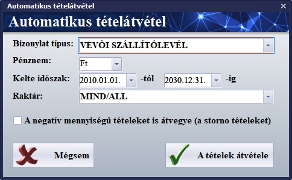
5.3.1. Értékesítés
Ebben a modulban megtalálható bizonylatok működése a 5.3.0. Bizonylatkezelés, a bizonylatok működése fejezetben már bemutatásra került.
Most csak az egyéb tudnivalókra tér ki a kézikönyv az egyes bizonylat típusok esetében.
5.3.1.1. Számla
A számla egy olyan hivatalos okirat, amely igazolja a termékek átadását, a szolgáltatások teljesítését, fontos szerepe van az adó elszámolásban.
Alapvetően háromféle típusa van, a normál, az érvénytelenítő (storno) és a helyesbítő számla (ezek elkészítése, kezelése az 5.3.0. fejezetben volt tárgyalva).
Fontos kitérni két számlához kapcsolódó fogalomra:
Előleg
Külön előleg számla már nem létezik. Ha előleget szeretnénk rögzíteni egy számlán, azt egy tételként kell hozzáadni a bizonylat tétel listájához. A terméktörzsben ehhez be kell jegyezni egy „Előleg” nevű, „Előleg” jellegű terméket és ezt kell kiválasztani új tételként egy számlán, majd az előleg értékének megadni az előleg összegét, mennyiségének pedig 1-et.
A végszámlán, ami az előleget tartalmazó számla ellenpárja, ugyanezt az előleg tételt kell felvenni tételként, az előzőleg megadott előleg összeggel, de mennyiségnek ezúttal -1 értéket megadni.
Visszáru
A termékek visszavételére többféle gyakorlat is van.
Az egyik, hogy egy normál vevői számlán „mínuszolják” le a visszavett terméket, ez akkor jellemző, amikor a vevő vásárol helyette egy másik, drágább terméket és annak az árában így írják jóvá a visszavett termék értékét.
A másik gyakorlat, hogy az eredeti számlát stornózzák, majd a terméket egy beszállítói szállítólevélen, vagy raktár bevét bizonylaton veszik vissza.
5.3.1.2. Szállítólevél
A szállítólevél Olyan
bizonylat, ami a termékek helyváltoztatását, illetve a megrendelés teljesítését
igazolja, melyet a szállító akkor állít ki, ha egy vagy több terméket egy másik
helyre (pl. partnerhez, másik telephelyre, stb.) szállít.
A szállítólevelet is lehet stornózni. Ekkor a hozzá köthető
korábbi készletmozgások ellenkezője történik (visszakerülnek készletre a
kiadott termékek).
5.3.1.3. Nyugta (melléklet)
Míg a számla az ügylet teljesítésére
vonatkozik, a nyugta az ellenérték átvételét igazolja. Ebben a
szoftverben a nyugta csak mintegy mellékletként van jelen, a pénztárgépes
értékesítés és termékmozgások szoftveres követése céljából.
Kérésre, a megfelelő dokumentáció
birtokában össze tudjuk kötni pénztárgéppel a szoftvert. Ebben az esetben a
szoftver a pénztárgéptől kapott adatok alapján hozza létre a nyugtákat.
5.3.1.4. Kézi számla
A kézi számlatömb számláinak nyilvántartására szolgáló, szintén mellékletként működő bizonylat.
5.3.1.5. Árvetés
Speciális bizonylat, amely az árvetés és szállítólevél keveréke. Ez azt jelenti, hogy árajánlatként szolgál, de készletet is mozgathat (raktár be és raktár ki bizonylatokon keresztül).
5.3.1.6. Proforma (díjbekérő)
A proforma, vagy díjbekérő akkor használatos, ha a teljesítés (termékek átadása, szolgáltatások elvégzése) előtt szeretnénk előre bekérni a majd számlán is feltüntetendő összeget. Amennyiben a fizetést teljesíti az ügyfél, akkor teljesíthetünk és állíthatjuk ki a számlát.
5.3.1.7. Megrendelés
A vevők megrendeléseit tarthatjuk nyilván és a termékek átadásakor, vagy a szolgáltatások teljesítésekor ezek alapján állíthatunk ki szállítólevelet, számlát.
Ha üzemeltetünk webshopot, akkor az abból származó megrendelések is ebben a modulban jelennek majd meg, vevői megrendelésként.
5.3.1.8. Árajánlatok
Egyszerű árajánlat termékekről, szolgáltatásokról, amelyet ha az ügyfél elfogad, akkor készíthetünk ebből az ajánlatból más bizonylatokat, például számlát.
5.3.2. Beszerzés
Ebben a modulban megtalálható bizonylatok működése a 5.3.0. Bizonylatkezelés, a bizonylatok működése fejezetben már szintén bemutatásra került.
Ezúttal csak az egyéb tudnivalókra tér ki a kézikönyv az egyes bizonylat típusok esetében.
5.3.2.1. Számla
A számla egy olyan hivatalos okirat, amely igazolja a termékek átadását, a szolgáltatások teljesítését, fontos szerepe van az adó elszámolásban.
Alapvetően háromféle típusa van, a normál, az érvénytelenítő (storno) és a helyesbítő számla (ezek elkészítése, kezelése az 5.3.0. fejezetben volt tárgyalva).
5.3.2.2. Szállítólevél
A szállítólevél Olyan
bizonylat, ami a termékek helyváltoztatását, illetve a megrendelés teljesítését
igazolja, melyet a szállító akkor állít ki, ha egy vagy több terméket egy másik
helyre (pl. partnerhez, másik telephelyre, stb.) szállít.
A szállítólevelet is lehet stornózni. Ekkor a hozzá köthető
korábbi készletmozgások ellenkezője történik (visszakerülnek készletre a
kiadott termékek).
5.3.2.3. Nyugta
Ha a partnerünktől nyugtát kapunk, akkor ezzel a bizonylat típussal tudjuk rögzíteni a rendszerbe.
5.3.2.4. Proforma (díjbekérő)
A proforma, vagy díjbekérő akkor használatos, ha a teljesítés (termékek átadása, szolgáltatások elvégzése) előtt szeretné partnerünk tőlünk bekérni a majd a számlán is feltüntetendő összeget. Amennyiben a fizetést teljesítjük partnerünk felé, akkor állítja ki a részünkre a számlát. Ekkor már csak számlává kell konvertálnunk a díjbekérőt.
5.3.2.5. Megrendelés
A beszállítók számára átadandó megrendelési igényeink nyilvántartására szolgál. A termékek átvételekor, vagy a szolgáltatások teljesítésekor ezek alapján állíthatunk ki szállítólevelet, számlát.
5.3.2.6. Árajánlatok
Beszállítótól kapott árajánlat termékekről, szolgáltatásokról, amelyet ha elfogadunk, akkor készíthetünk ebből az ajánlatból más bizonylatokat, például számlát.
5.3.3. Raktármozgások
Ebben a modulban vegyesen találhatók a már 5.3.0. Bizonylatkezelés, a bizonylatok működése fejezetben ismertetett bizonylatok (leltár, raktár be és raktár ki bizonylatok) és újak, amelyeknek csak a tétel szerkesztője ugyanaz, mint ami az 5.3.0. fejezetben van leírva (raktárközi termékátadás, raktárközi megrendelés, selejtezés). Utóbbiak esetében ismertetésre kerül a modul kezelése.
5.3.3.1. Raktárközi termékátadás
Ennek a modulnak a szerkesztője eltér a hagyományos bizonylatoktól, de a tétel szerkesztője ugyanaz.
Ha új raktárközi átadást kezdünk, akkor megjelenik annak szerkesztő ablaka.
Ennek a szerkesztőnek a felépítése hasonló a többi bizonylatéhoz, vannak fejléc adatok és van egy tétel lista, amelyet ugyanúgy tudunk szerkeszteni.
A fejlécben a következő adatokat kell megadnunk:
· Bizonylat kelte: az a dátum, amikor a bizonylat készült.
·
Tételek
távétele:
o A bizonylat lezárásakor azonnali automatikus tételátvétel
o Kézi tételátvétel, amely esetben meg kell adnunk az átvétel várható időpontját. Ez akkor használandó, ha a bizonylatot már előre elkészítettük és akkor szeretnénk elvégeztetni a szoftverrel a termékek áttárolását, ha az fizikai valójában is megtörtént. Az átvevő személynek az átvéve oszlopba be kell írni az átvett mennyiségeket, beírnia az átvétel időpontját és ezután lezárnia a bizonylatot.
· Eredeti raktár: az a raktár ahonnan a cél raktárba áttároljuk a termékeket.
· Cél raktár: az a raktár, ahova az eredeti raktárból áttároljuk a termékeket.
· Átadta: az a munkatársunk, aki kiadta a termékeket az eredeti raktárból.
· Átvette: az a munkatársunk, aki átvette a termékeket a cél raktárban.
Szintén van gyorsszerkesztés mód, amelyet bekapcsolva közvetlenül a listában szerkeszthetjük a tételek minden adatát. Ezt kikapcsolva csak az átvéve oszlopba módosítható az átvett mennyiség.
Van lehetőség bizonylatok csatolására is, a már más modulok esetében ismertetett módon.
Ha lezárjuk a raktárközi átadás bizonylatot a Bizonylat lezárása gombbal, akkor nyomtatható egy lista az átadandó termékekről. Ha a tételek átvételének a kézi átvételt állítottuk be, akkor később, a termékek cél raktárba érkezésekor ismét meg kell nyitnunk ezt a bizonylatot, az átvéve oszlopba be kell írnunk az átvett mennyiségeket, majd ekkor elvégeztetnünk a készletmozgást.
A készletmozgás elvégzése után az átvéve oszlopba íródnak vissza a ténylegesen átvett mennyiségek autoamtikusan (erre azért van szükség, mert előfordlhat, hogy a forrás raktárban nincs készleten a tervezett átveendő mennyiség).
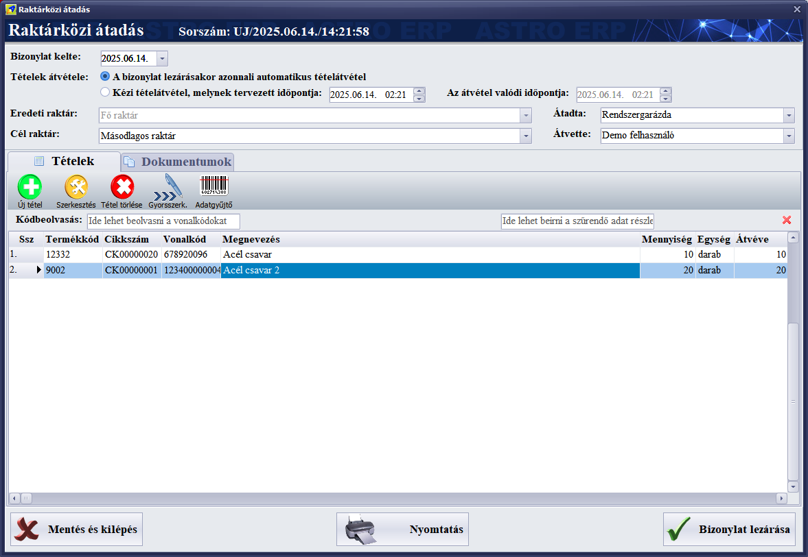
Ebben a modulban is van gyorszerkeszés mód, amely lehetővé teszi, hogy közvetlenül a listában szerkeszthessük a tételeket.
Az adatgyűjtő funkcióval az adatgyűjtő mobilalkalmazásból vehetjük át a tétel listát, a bizonylatoknál ismertetett módon.
5.3.3.2. Raktárközi megrendelés
Megegyezik az 5.3.3.1.
Raktárközi termékátadás pontban tárgyalt modullal, azzal a különbséggel,
hogy ez még csak a termékek megrendelése a másik raktárból, készletmozgás nem
történik.
Először válasszuk ki, hogy melyik raktárból melyik másikba szeretnénk megrendelni a termékeket.
Utána rögzítsük a megrendelendő tételeket a tétel listába.
Végül zárjuk le a bizonylatot.
Később megnyithatjuk ugyanezt a raktárközi rendelés bizonylatot és az ekkor megjelenő Raktárközi átadás bizonylat készítése gombbal egy az egyben készül a megrendelésből egy raktárközi átadás bizonylat, amit még módosíthatunk, annak lezárása előtt.
5.3.3.3. Leltározás
A leltározás menete a következő:
1.Az Adminisztráció főmenüponton belül a Raktármozgások modult kell kiválasztani.
2.Utána a Leltár al-modulra váltani.
3.Új leltár rögzítése.
4.Be kell állítani a Leltár
típus beállítást, amelynek
jelentése már ismertetve volt a bizonylatok modul általános leírása résznél.
5.Ezután azt raktárat kell kiválasztani, amelybe a nyitó készletet szeretnénk felvinni.
6.Ezután több lehetőség is van a
leltározás elvégzésére:
6.1. Az üres listába egyenként vinni fel a tételeket, erre
is két mód van:
6.1.1. Az Új tétel gombra megnyíló
tétel szerkesztő ablakban (a tétel szerkesztőben van egy Következő gomb, ezzel
gyorsan rögzíthetők sorban a tételek).
6.1.2. A Gyorsszerk. (gyors szerkesztés)
gombbal aktiválni a gyorsszerkesztő módot, amelyben közvetlenül a listában
rögzíthetők (és szerkeszthetők) a tételek.
6.2. Másik, kényelmesebb megoldás a leltározás elvégzésére,
ha az alapból üres listába létrehozzuk az árutörzsbe rögíztett termékek
listáját, a Lista gen. (lista generálás) gombbal (az eszköztáron van).
7. Amint megjelenik a lista (az alján leszünk), a görgetősávval mehetünk a tetejére, majd a Mennyi. (mennyiség) oszlopba lépve szerkeszthetjük a mennyiségeket folyamatosan. Az egyes termékek mennyiségének beírása és utána ENTER gomb megnyomása után mindig a következő sorra ugrik, oda is beírható az adott termék mennyisége, utána ismét ENTER és így tovább.
Ha kész a
leltározás, akkor a Nyomtatás gombbal ellenőrizhető a Leltár
különbözeti lista (ezt kinyomtatja a modul majd a leltározás lezárása után
is).
Ha minden rendben
van, akkor a Bizonylat lezárása gombbal zárható a leltározás. Ekkor a
következők történnek automatikusan: megjelenik a Leltár különbözeti lista
(nyomtatható, vagy bezárható), utána létrejön egy Raktár bevét bizonylat
a hiányzó mennyiségek pótlására (nyitó esetén ennek tétel mennyiségei meg
fognak egyezni a leltározott mennyiségekkel), utána létrejön egy Raktár
kiadás bizonylat a többlet mennyiségek leírására a készletből (ez csak
akkor, ha van olyan termék, amelyből a leltározott mennyiség kevesebb, mint az
eredeti készlet, nyitó esetén ez nem fog megjelenni). A raktár bevét, vagy
raktár kiadás bizonylatok nyomtathatók, vagy ha ez nem szükséges, akkor csak be
kell zárni ezen dokumentumok nyomtatási előnézeti ablakát.
Azért jön létre raktár kiadás, vagy raktár bevét bizonylat, mert csak ezek a
bizonylatok módosítják a készletet (ezért ezek a bizonylatok létrejönnek
például bejövő, vagy kimenő számla, szállítólevél esetén is automatikusan).
Végül bezáródik a leltározás ablak és a leltározások listájában látható lesz a
most lezárt leltározás (esetünkben nyitó felvitel). Ekkor már a készleten
lesznek a termékek a megfelelő mennyiségekkel (mindegyik termék számára
létrejön egy sarzs), ami a Törzsadatok/Árukészlet alatt ellenőrizhető.
5.3.3.4. Raktár bevét
A termékek készletre vételét a raktár bevét bizonylat végzi. Műkődése megegyezik a 5.3.0. Bizonylatkezelés, a bizonylatok működése fejezetben ismertetettekkel.
A tétel listába rögíztett termékeket a kiválasztott raktár készletre veszi.
5.3.3.5. Raktár kiadás
A termékek kiadását a készletből a raktár kiadás bizonylat végzi. Műkődése megegyezik a 5.3.0. Bizonylatkezelés, a bizonylatok működése fejezetben ismertetettekkel.
A tétel listába rögzített termékeket a kiválsztott raktárból kivonja.
5.3.3.6. Selejtezés
A selejtezés működése megegyezik az 5.3.3.1. Raktárközi átadás pontban ismertetekkel, azzal a különbséggel, hogy itt cél raktárnak csak olyan raktárat választhatunk ki, amelynek típusa selejt raktár. A selejtnek ítélt termékek a selejt raktárba kerülnek át.
5.3.4. Tárgyi eszközök
Ezzel a modullal nyilvántarthatjuk a tárgyi eszközeinket és vezethetjük azok értékének változásait, értékcsökkenését.
Első lépések a tárgyi eszköz nyilvántartásba vétele előtt
Mielőtt nyilvántartásba vennénk egy tárgyi eszközt, bevételeznünk kell egy beszállítói számlán, egy „Tárgyi eszköz” típusú raktárba. Ehhez a beszállítói számlán, vagy annak a tárgyi eszközt tartalmazó tételén egy „Tárgyi eszköz” típusú raktárat kell kiválasztanunk (ez egy virtuális raktár, amely nyilvántartási célokat szolgál).
Megtehetjük azt is, hogy egy „Normál” raktárba bevételezzük a tárgyi eszközt és csak akkor tesszük át a „Tárgyi eszköz” típusú raktárba, amikor elkezdjük használni.
Természetesen több „Tárgyi eszköz” típusú raktárat is használhatunk, ekkor viszont raktáranként külön kell majd leltározni a tárgyi eszközeinket.
Ha nincs még „Tárgyi eszköz” típusú raktárunk, akkor a raktár törzsadatokban létre kell hoznunk egyet (a raktár nevében is célszerű utalni a raktár funkciójára). A raktár telephelye ebben az esetben nem fontos a nyilvántartás szempontjából (kiválaszthatjuk a fő telephelyünket a raktár számára).
A tárgyi eszköz adminisztrálása során meg lehet majd adni pénzmozgás-nemeket (vagy jogcímeket), ezeket is célszerű már előre rögzíteni a törzsadatokban: a beszerzésre, beruházásra és felújításra, értékcsökkenésre (ezen belül is az értékcsökkenéshez, értékváltozáshoz, kivezetéshez), selejtezésre, értékesítésre.
A költséghelyek törzsben is érdemes rögzíteni egy költséghelyet a tárgyi eszközök számára.
Tárgyi eszközök leltározása
Amennyiben később leltározni szeretnénk a tárgyi eszközeinket, a bizonylatoknál már ismertetett leltározás modult kell használnunk. Új leltározás kezdésekor ki kell választanunk a megfelelő „Tárgyi eszköz” típusú raktárat, ezután a leltározást már az ismertetett módon tudjuk intézni.
A tárgyi eszköz nyilvántartásba vétele és adminisztrációja
A tárgyi eszközeinket egyenként kell nyilvántartásba vennünk.
Új tárgyi eszköz rögzítésekor megjelenik egy üres adatlap, amelyen több lapot (fület) is találunk. Ezek sorban:
/
Alapadatok
· Eszköz típusa, amely lehet:
o Tárgyi eszköz
o Kis értékű tárgyi eszköz
o Immateriális javak
· Termék: Itt választható ki a terméktörzsbe is rögzített termék, ami a tárgyi eszköz lesz.
· Telephely: Az a telephely, ahol az eszköz használatban van.
· Használat helye: a telephelyen belül az a hely, iroda, ahol megtalálható az eszköz.
· Raktár: az a „Tárgyi eszköz” típusú (virtuális) raktár, amelyben elhelyeztük az eszközt (például a későbbi leltározás miatt).
· Költséghely: a költséghely törzsből választható ki, milyen jogcímen számolható el adott esetben az eszköz.
· Gyártás ideje: minden terméken fel van tüntetve a gyártásának ideje, ezt az adatot lehet itt megadni.
· Gyári szám: szintén rajta van minden terméken a gyári száma, amelyet ide írhatunk. Több adatot is írhatunk ide egymás után, vesszővel elválasztva.
· Nyilvántartási szám: az eszköz nyilvántartási számár írhatjuk be ide.
· Megjegyzések: minden egyéb adatot, információt itt tudunk megadni az eszközzel kapcsolatban. A sortörés a Ctrl+Enter kombinációval lehetséges.
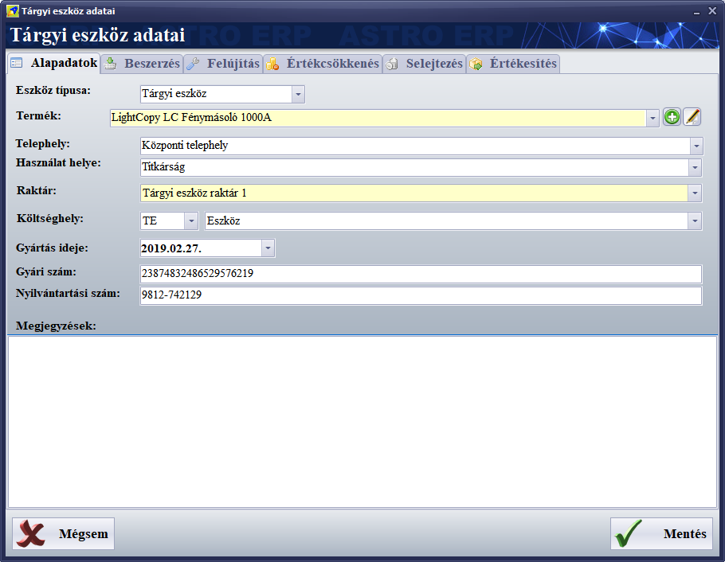
/
Beszerzés
· Egység vételár: a termék vásárlási egységára. Ezt beírhatjuk kézzel, de megadható automatikusan is, ha a képernyő alsó részén látható beszerzés tétel listához hozzáadjuk azt a beszállítói számla tételt, amelyen megvásároltuk az eszközt.
· Vásárlás dátuma: az a dátum, amikor megvásároltuk az eszközt. Az egység vételárhoz hasonlóan ez az adat is megadható kézzel, de automatikusan is, ha a megfelelő beszerzés tételt választjuk ki.
· Pénzmozgásnem (jogcím): a beszerzéshez megadhatunk egy jogcímet.
· Aktiválás: az eszköz aktiválása. Az eszköz használatbavételének kezdete. Előbb a dátum előtti négyzetet pipáljuk ki, majd írjuk be az aktiválás dátumát. Ettől a dátumtól kezdve adhatjuk meg az értékcsökkenés tételeket.
· Aktiválás főkönyvi számok: az aktiváláshoz köthető főkönyvi számokat lehet itt megadni.
· Beszerzési számlák listája (alul), ahol az „Új” gombbal adhatunk számla tételeket a listához és a Törlés gombbal törölhetjük a csatolt számla tételeket a listából.
Ha az „Új” gombot megnyomjuk, akkor megjelenik egy ablak, amelyben felül választhatók ki a megfelelő számla, alul az a tétel, amelyen beszereztük az eszközt.
Beszerzési tétel csatolása esetén csak azok a beérkező számla tételek jelennek meg, amelyek tartalmazzák azt a terméket, amit megadtunk az alapadatok részben.
A bizonylatok adataira szűrhetünk a bizonylat fejléc lista feletti szűr sávval. Ez a szűrő egyszerre szűr a sorszám, kelte, partner, érték adatokra.
Ha a megfelelő bizonylatot és annak tételét kiválasztottuk, akkor a Mentés gombbal rendelhető hozzá az eszközhöz.
Kiválaszthatjuk, hogy a tétel egységárát, vagy értékét szeretnénk majd
hozzáadni az értékcsökkentés listához.
Ezután a szoftver megkérdezi, hogy hozzáadja-e az értékcsökkenés sorhoz
(mindenképpen kell egy beszerzés sor, induló értékként). Ha itt Igen választ
adunk, akkor a vásárlási értékbe beleírja az összeget, a vásárlás dátumához
pedig a bizonylat keltét.
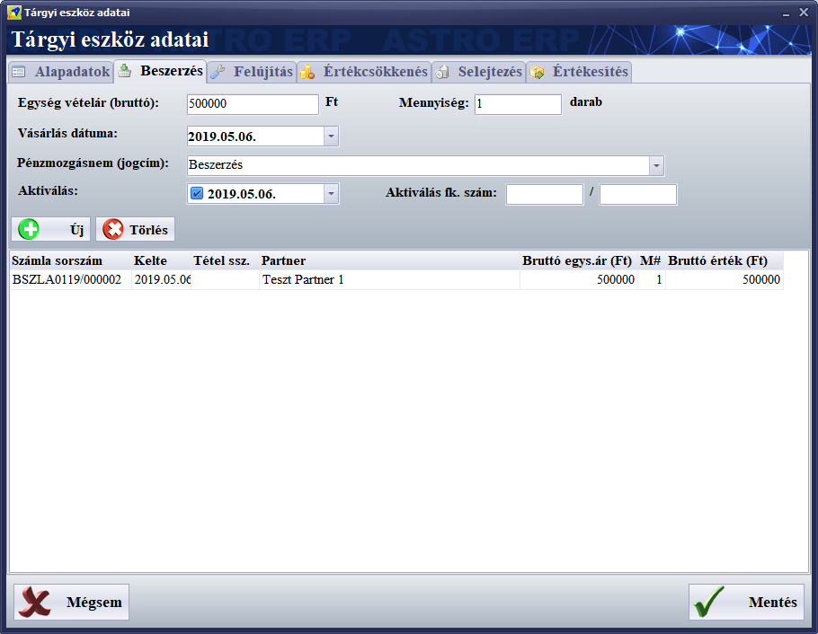
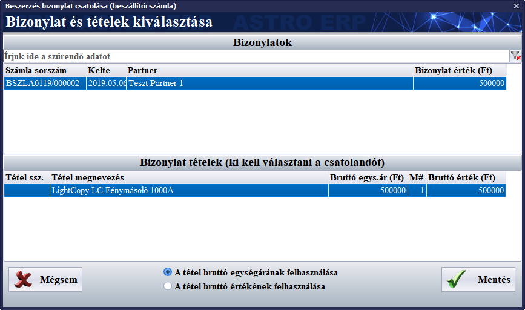
/
Felújítás, beruházás
· Felújítás főkönyvi számok: a felújításhoz vagy beruházáshoz tartozó főkönyvi számok adhatók itt meg.
· Pénzmozgásnem: a felújítással, vagy beruházással kapcsolatos jogcím választható itt ki.
·
A
felújítás vagy beruházás bizonylatok listája (alul): Itt az „Új” gombbal
választhatunk ki egy bejövő számla tételt, a beszerzéshez hasonlóan. Hasonlóan
működik a beszerzési számla tételek hozzáadásához (az előző, Beszerzés lapon
tárgyaltuk). Ezúttal minden bejövő számla látható, a szűréssel ezek közül kell
megkeresni azt a számlát, amely tartalmazza azt a karbantartási tételt, amit
keresünk. Ha több karbantartási tétel is van, akkor mindegyiket egyenként kell
hozzáadni a listához.
Ebben az esetben célszerű lehet a tétel értékét használni, az egységár helyett.
Ha a Mentés gomb megnyomása után megjelenő kérdésnél Igen választ adunk, akkor
a tétel hozzáadódik az értékcsökkentés táblához, értékváltozásként.
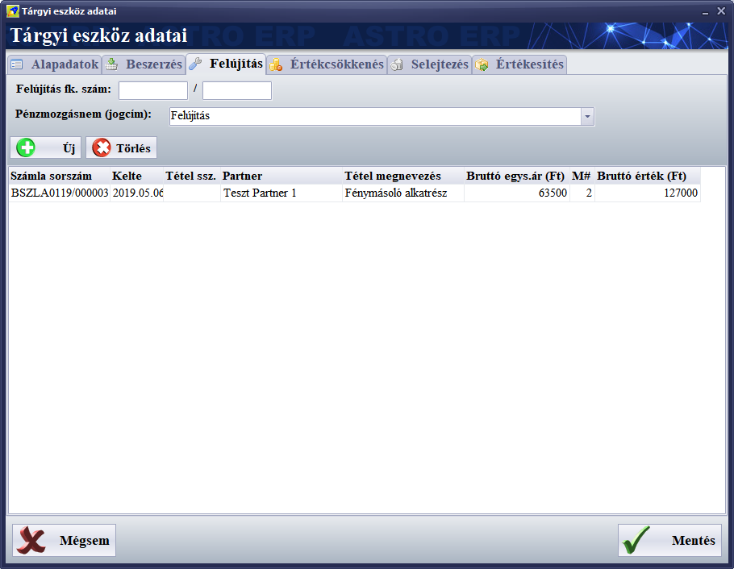
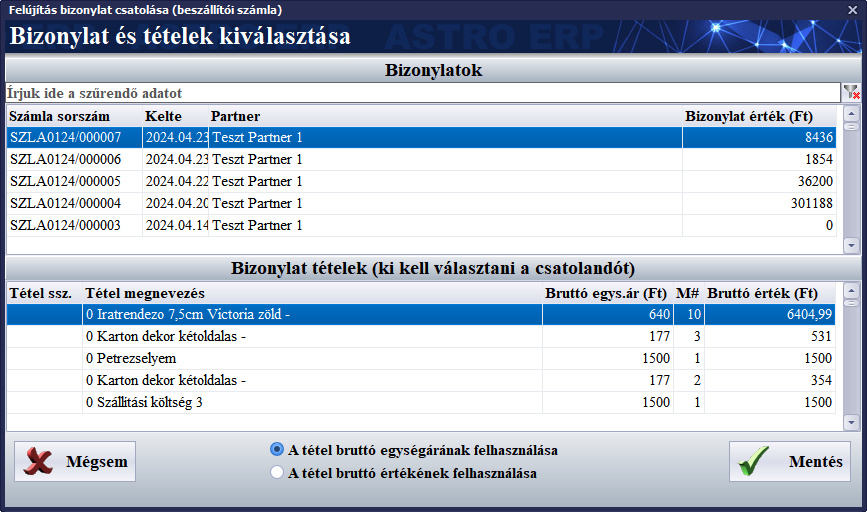
/
Értékcsökkenés
· Értékleírás típusa: a következő lehetőségeket kínálja fel:
o Számviteli törvény szerinti
o Adótörvény szerinti
Az értékleírás típusa csak egy információs mező, amely jelzi, hogy melyik típusú értékleírást végezzük el az eszköz esetében.
· Értékleírás típusa: az alábbi lehetőségek közül választhatunk:
· Abszolút összegű
· Degresszív
· Lineáris
· Teljesítményarányos
Az értékleírás típusa is egy információs mező, amelyben fejlegyezhetjük, hogy milyen értékleírási metódust követünk, mert az értékleírás manuális módon működik.
· Értékcsökkenés kulcsa: az értékcsökkentési futamidő jellemző értékcsökkentési kulcs értéke. Ez az érték lesz felajánlva új értékcsökkentés tétel esetén (de a tételen a konkrét értékcsökkentés értéket is meg kell adnunk).
· Értékcsökkentés időtartam: az értékcsökkentési futamidő teljes időtartama években megadva.
· Bruttó érték: a beszerzés (vásárlás) és a felújítások, beruházási tételek összege. Csak olvasható, automatikusan kalkulált mező.
· Eddigi értékcsökkenés: az értékcsökkenés összesen, az aktuális dátumig. Csak olvasható, automatikusan kalkulált mező.
· Éves értékcsökkenés: az aktuális évben történt értékcsökkenés összege. Csak olvasható, automatikusan kalkulált mező.
· Aktuális érték (nettó): az aktuális, értékcsökkentett érték. Csak olvasható, automatikusan kalkulált mező.
· Maradvány érték (nettó): az eszköz értékcsökkentési futamidő végén várható értéke. Kézzel beírandó adat.
· Az értékcsökkentési tételek listája (a lap alsó felén): ez a lista tartalmazza az értékleírás elkönyvelési tételeit.
Az „Új” gombbal adhatunk a listához új tételt.
A „Szerkesztés” gombbal módosíthatjuk a kiválasztott tételt.
A „Törlés” gombbal törölhetők a kiválasztott tétel.
Az értékcsökkentés tételek között ott kell lennie a beszerzésnek, a vásárlás összegével, a felújítások, beruházások összegeinek, az értékcsökkentő tételeknek és a kivezetésnek is.
A szoftver a többi lapon (Beszerzés, Felújítás, Selejtezés, Értékesítés) csatolt bizonylatokkal automatikusan is képes bejegyezni a megfelelő tételeket ebbe a listába (előtte mindig rákérdez a bizonylat csatolás funkció).
Új tételt a következőképpen
adhatunk a listához:
1. Az „Új” tétel gomb megnyomására megjelenik egy üres értékcsökkenés adatlap.
2. Adjuk meg a dátum adatot, amely nem lehet kisebb az előző tétel dátumánál és azzal egyenlő sem lehet.
3. Válasszuk ki, hogy értékcsökkenés, értékváltozás, vagy kivezetés tételt akarunk rögzíteni.
4. A megjegyzésbe írjunk be egy tétel funkciójára utaló szöveget. Ez bármi lehet, beírhatjuk egyszerűen a tétel funkcióját is, hogy például értékcsökkentés, vagy értékváltozás.
5. Adjuk meg az összeget:
o Értékcsökkentés esetén ezzel az összeggel csökken az eszköz értéke,
o értékváltozás esetén ennyivel nő az értéke,
o kivezetés esetén pedig a teljes értéket írjuk be negatív előjellel.
6. A százalékot felajánlja a modul az értékcsökkenés kulcsa alapján, de módosíthatjuk, hogy megfeleljen a beírt összegnek, mert a modul elsősorban az összeget veszi figyelembe.
7. Kiválaszthatjuk a tétel jogcímét.
8. Megadhatjuk a tételhez tartozó főkönyvi számokat.
9. Végül menthetjük a tételt és megjelenik a listában.
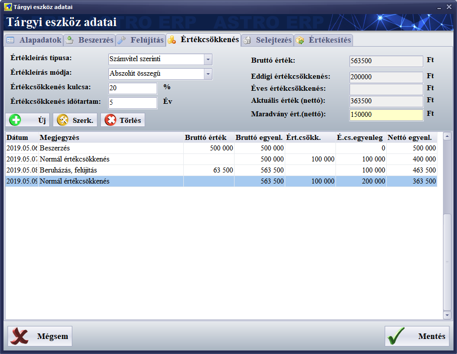
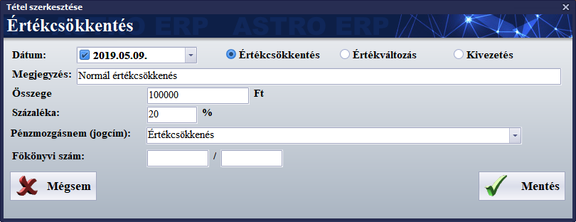
/
Selejtezés
· Selejtezés dátum: amennyiben a termék leselejtezésre került, akkor a dátum előtti négyzetet be kell jelölni és meg kell adni a selejtezés dátumát.
· Pénzmozgásnem (jogcím): itt kiválasztható egy jogcím a selejtezéshez.
· Selejtezés főkönyvi számok: itt adhatók meg főkönyvi szám és ellenfőkönyvi szám a selejtezéshez.
·
A lap alsó részében csatolhatunk selejtezés
bizonylatokat. Az „Új” gombra a már ismertetett bizonylat tallózó jelenik meg,
amelyben azokat a selejtezés bizonylatok listáját láthatjuk, amelyeken
tételként szerepel az eszközünk. Ha kiválasztottuk a megfelelő selejtezés
tételt, akkor ha az utána megjelenő kérdésre Igen választ adunk, a modul
létrehoz számára az értékcsökkenés táblázatban egy kivezetés tételt, amellyel
lezáródik az értékcsökkenés.
Természetesen ehhez előbb a raktármozgásokon belül, a selejtezés modulban le
kell selejteznünk az eszközt.
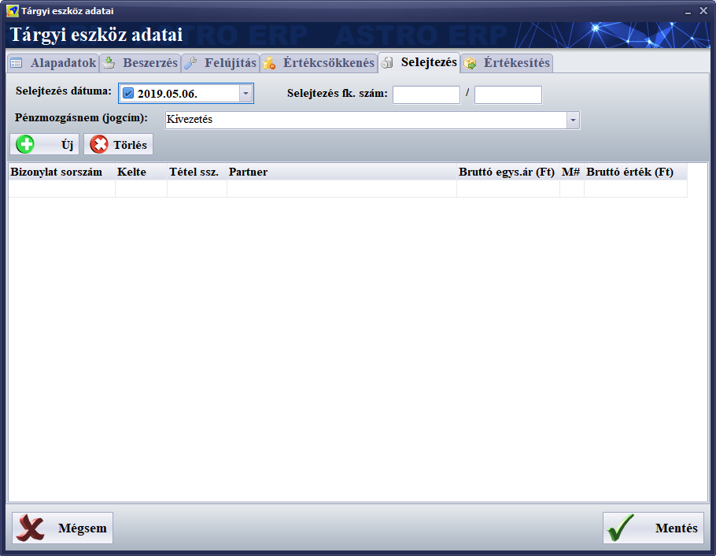
/
Értékesítés
· Eladási ár: az az ár amelyen értékesítettük az eszközt. Ezt beírhatjuk kézzel, vagy vevői számla tétel csatolásával automatikusan kitöltethetjük a modullal.
· Értékesítés dátum: ha a terméket eladtuk, akkor a dátum előtt látható négyzetet kell bejelölnünk, utána megadni az értékesítés pontos dátumát.
· Pénzmozgásnem: kiválaszthatjuk az értékesítés jogcímét.
· Értékesítés főkönyvi szám: itt adhatjuk meg az értékesítéssel kapcsolatos főkönyvi számokat.
· Értékesítési tételek listája: a szokásos módon ide csatolhatunk bizonylat tételeket. Ezúttal vevői számla tétel csatolható a listához, amely alapján a modul képes automatikusan kitölteni a megfelelő adatmezőket és az értékcsökkentés listában is létrehozni egy kivezetés tételt.
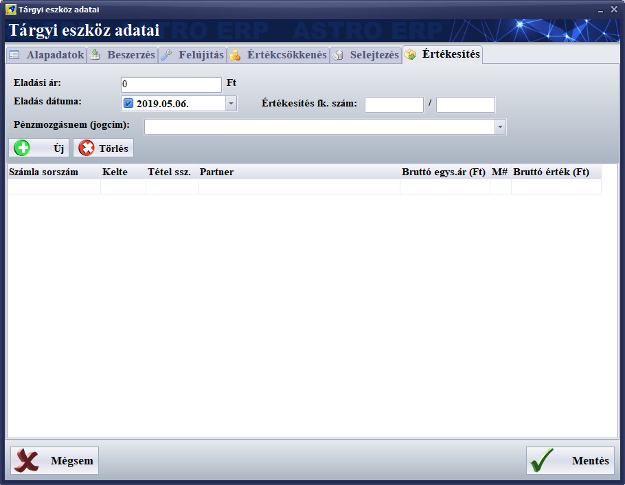
5.3.5. Gyártás modul
A gyártás modulban is a többihez hasonlóan, a program nagyobb, lista részén láthatjuk a modulba rögzített rekordokat, vagy sorokat, ezek mind egy-egy gyártási sorozatot (vagy kampányt, vagy batch-ot, melyik cégnél hogyan nevezik) jelentenek.
Két almodulra osztható, az
üsszeszerelésre és a szétszerelésre:
Az összeszerelés
(erre csak gyártásként hivatkozunk a továbbiakban) során új példányokat
állíthatunk elő egy termékből, a terméktörzsben, a termékszerkesztő ablakban
található gyártás fülön megadott receptúra alapján.

A szétszerelés
az összeszerelés ellentéte, a termékeket szétbontja annak terméktörzsben, a
termékszerkesztő ablakban található gyártás fülön definiált összetevőire.

Mindkét művelet esetén a gyártás kezelő modulban, szinte teljesen ugyanarra a sémára kell megadnunk az adatokat.
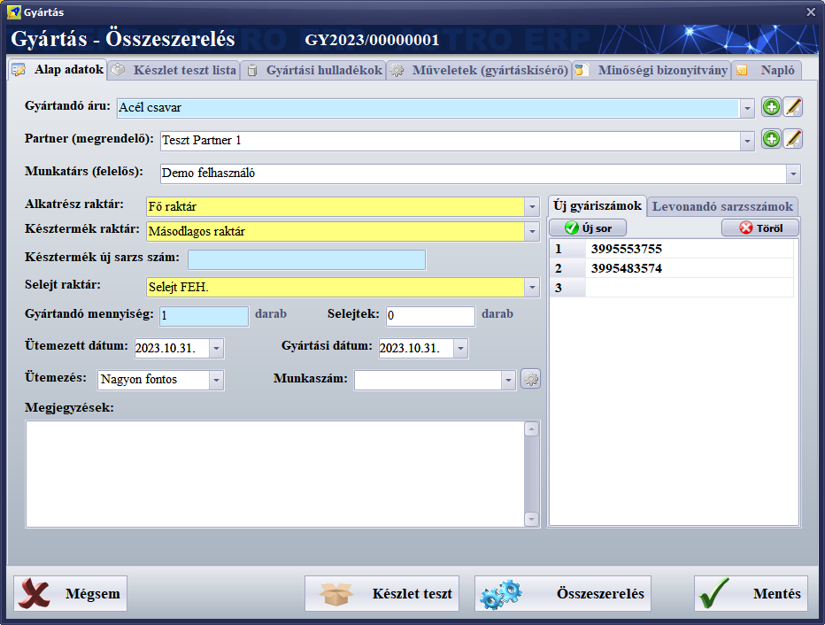
A gyártás (és szétszerelés) rögzítésére és kezelésére szolgáló modulban több fül található, melyek a következők:
/ Alap adatok: Ezen az első fülön rögzíthetjük a gyártandő (vagy szétszerelendő) termék adatait és a gyártási folyamat paramétereit. Ezek a gyártás legfontosabb adatai. A többi fül használata már csak opcionális.
Itt a következő adatok
adhatók meg:
o Gyártandó áru: Itt választható ki az a termék, amit gyártani szeretnénk.
o Partner (megrendelő): Itt válaszható ki a gyártást megrendelő cég
o Munkatárs (felelős): Itt választható ki a gyártásért felelős személy
o Alkatrész raktár: Gyártás esetén innen kerülnek levonásra a megfelelő összetevő mennyiségek, szétszerelés esetén ide kerülnek az alkatrészek
o Késztermék raktár: Gyártás esetén ide kerülnek a legyártott termékek, szétszerelés esetén innen vonja le a késztermék mennyiséget a rendszer
o Késztermék új sarzs szám: Ez az adat a gyártás elvégzésekor jön létre, megmutatja, melyik sarzs szám alá került a raktárban a legyártott termék, vagy sorozat. Ha kitöltjük, akkor az itt előre megadott sarzs számmal jön majd létre a készletben az új sarzs.
o Selejt raktár: A gyártás során keletkező selejtek kerülnek ide.
o Gyártandó mennyiség: Gyártás esetén a legyártandó mennyiséget, szétszerelés esetén a szétbontandó mennyiséget kell ide beírni.
o Selejtek: Gyártás esetén a keletkező selejtek számát kell itt megadni (ezek a selejt raktárba kerülnek).
o Ütemezett dátum: A gyártást prioritizálhatjuk aszerint, hogy a gyártmány elkészítése nagyon fontos, fontos, vagy kevésbé fontos.
o Gyártás dátum: A gyártás, vagy a szétszerelés elvégzésének dátuma (vagy záró dátuma).
o Munkaszám: Itt új munkaszám alá vehetjük a gyártásti folyamatot, de kiválaszthatunk egy már létező munkaszámot is.
o Megjegyzések: A termék gyártásával kapcsolatos megjegyzéseket vezethetjük fel ebbe a szövegmezőbe.
o Új gyáriszámok: Ezen a mellékfülön adhatók meg egymás alá a gyártandó termékek gyáriszámai. A gyártás végrehajtásakor az új sarzsba íródnak ezek a gyáriszámok.
o Levonandó sarzsok: Ha itt megadunk sarzs számokat (egymás alá, felsorolva) akkor a gyártás során ezekből a sarzsokból fogja a rendszer levonni az összetevőket (de továbbra is a kiválasztott alkatrész raktárban kell lennie ezeknek a sarzsoknak).
Miután kötöltöttük az adatmezőket, a mentés gombbal menthetjük a megadott adatokat (erre bezáródik a gyártás ablak), vagy ha meggondoltuk maguknat, akkor a mégsem gombbal mentés nélkül kiléphetünk a gyártás szerkesztés modulból.
A gyártás végrehajtása előtt ajánlott futatni egy készlet tesztet, a modul alján látható, készlet teszt nevű gombbal, mely után tájékoztató üzenet jelenik meg az eredményről és a készlet teszt lista fül alatt is megtekinthető a részletes eredmény, egy listában.
A tulajdonképpeni gyártás az összeszerelés / szétszerelés gombbal végezhető el, ekkor történik meg a gyártás végrehajtása, ekkor adódnak hozzá a készlethez, vagy vonódnak le onnan a termékek, vagy az összetevők, nyersanyagok.
/ Készlet teszt lista: Itt láthatjuk a készlet teszt eredményét (a készlet teszt feliratú gombra fut le).
Megmutatja, hogy gyártás esetén melyik összetevőből mennyi áll rendelkezésre, vagy miből mennyi hiányzik.
/ Gyártási hulladékok: Itt találhatók a gyártás során keletkezett hulladékok.
A listában tételesen rögzíthetjük a hulladékokat típus szerint, a mennyiséget megadva. Ha minden hulladék rögzítésre került, akkor a hulladéklista nyomtatása gombbal elkészül a nyomtatvány, amely kinyomtatható, vagy menthető PDF formátumban.
/ Műveletek (gyártáskísérő): Gyártáskísérő munkalapot állíthatunk össze.
Ha volt már korábban hasonló gyártmány, akkor arról átmásolhatjuk a gyártáskísérőt az aktuális gyártásra, ezt a műveletek másik gyártáskísérőről gombbal végezhetjük el, a megjelenő listából kiválasztva a megfelelő korábbi gyártmányt és a másolás gombbal nyugtázhatjuk.
Minden gyártáskísérőnek van egy egyedi sorszáma, ami az aktuális sorszám mezőben látható a lista felett.
A listába az új sor gombbal rögzíthetünk újabb gyártás tételeket, a szerkesztés gombbal módosíthatjuk, a törlés gombal törölhetjük az egyes srokat a listából.
A tétel szerkesztőben a
következő adatokat lehet megadni:
o Sorszám: A tétel sorszáma a listában. Módosítása esetén a listában másik helyre kerül a sor (és ezzel a művelet).
o Művelet: Az elvégzendő gyártási művelet megnevezése.
o Gép, szerszám: Az a gép és/vagy szerszám. amellyel elvégésre kerül a gyártási művelet.
o Méret, súly, technológia: A nevezett adatokat lehet itt megadni.
o Tűrés: A méret szóródási tartományát lehet megadni.
o Megjegyzés1 (Brigád1) és Megjegyzés2 (Brigád2): Két sorban lehet a művelettel, vagy a műveletet végző brigádokkal kapcsolatos megjegyzéseket feljegyezni.
A mentés gombbal
rögzíthetők a kitöltött adatok.
Minden itt megadható adat úgynevezett öntanuló mező, ami azt jelenti, hogy amit
egyszer beírtunk és rögzítettünk, legközelebb már kiválasztható lesz ugyanebben
a mezőben.
A lap alsó részén írhatunk megjegyzéseket a gyártáskísérőhöz.
Ha minden műveletet rögzítettünk, akkor a gyártáskísérő nyomtatás gombbal kinyomtatható a gyártáskísérő lap, vagy elmenthető PDF fájlként.
/ Minőségi bizonyítvány: A gyártmányhoz ezen a fülön készíthetünk minőségi bizonyítványt. A lap tetején az aktuális új bizonyítvány sorszám található, melyet a rendszer autmatikusan generál.
A
megadható adatok:
o Súly: Értelemszerűen ide írható be a termék példány nettó súlya.
o Rajzszám: A gyártáshoz használt műszaki rajz száma.
o Felhasználható: Felhasználási előírási szabvány, vagy akár dátum is kerülhet ide.
o Egyéb azonostó adat: Teszőlegesen megadható, a termék azonosítására szolgáló adat, mely lehet cikkszám, vámtarifaszám, vagy egyéb.
o Szállítási, raktározási előírások: A szállítással, raktározással kapcslatos szabvány szám írható ide.
o Csomagolás: A csomagolással kapcsolatos szabvány, vagy csomagolóanyag adható itt meg.
o A termék lényeges tulajdonságai (mérési eredményekkel): Szadabon beírható az anyagminőség, a kész méretek, és minden egyéb jellemzője a gyártmánynak. A szövegmező alatt található még egy sor, ide a minősítés, és az osztályba sorolás szerinti szabvány szám írható.
o A minőség ellenőrzésére alkalmazott vizsgálati módszer: Különböző típusú termékek esetén eltérő vizsgálati módszerek, szabványok lehetnek, ide a gyártmány vizsgálatakor használatosat kell beírni.
o Használati, kezelési előírás: A használati előírást szabályozó szabvány írandó ide.
o Egyéb adatok: Bármilyen, további adatok adhatók itt meg, amelyek a többi mezőben nem kaptak helyet.
Ha mindent itöltöttünk, akkor a minőségi bizonylat nyomtatás gombbal elkészül a bizonyítvány, amelyet ki lehet nyomtatni, vagy PDF fájlba lehet menteni.
/ Napló: a gyártás (vagy szétszerelés) rendszerfolyamatainak naplója.
Ha a gyártást egy bizonylat egyik tételéről hívtuk meg (például vevői megrendelésről), akkor arra a tételre felvezetésre kerül, hogy a gyártás elkezdődött, vagy végrehajtódott.
5.3.6. Szerviz modul
A Szerviz munkalap modul célja egy adott termékhez kapcsolódó szerviztevékenységek, anyagfelhasználás, hibaleírás és elszámolás rögzítése.
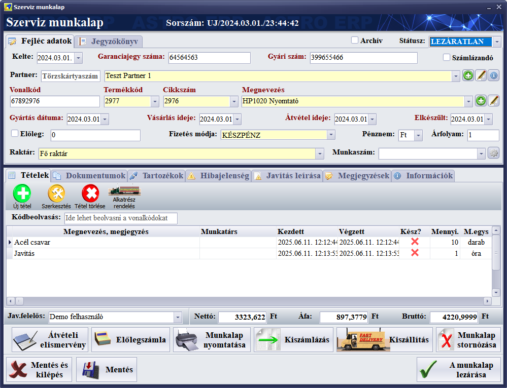
A felületen található részek,
adatmezők, listák, funkciók:
/
Fejléc adatok fül
A fejlécben rögzítendők az azonosító és adminisztratív adatok, itt választható ki a javítandó termék is:
· Sorszám: Automatikusan generált munkalapszám.
· Kelte: A munkalap létrehozásának dátuma.
· Garanciajegy száma: A termék garancialevele alapján.
· Gyári szám: A szervizelt eszköz gyári azonosítója.
· Számlázandó: Jelölőnégyzet, ha a munkalap alapján számlát kell készíteni.
· Partner: A megrendelő fél (név és azonosító).
· Vonalkód / Termékkód / Cikkszám / Megnevezés: A javított termék azonosítói.
· Gyártás dátuma / Vásárlás ideje / Átvétel ideje / Elkészült: Időpontok a termék életciklusából és a munkalaphoz kapcsolódóan.
· Előleg: Előre kifizetett összeg.
· Fizetés módja: Készpénz, átutalás stb.
· Raktár: A javításhoz használt anyag raktára.
· Munkaszám: Projekt vagy munkaszám rendelhető hozzá.
/
Jegyzőkönyv fül – Hibabejelentés és javítás
részletezése
A Jegyzőkönyv fülön a hibabejelentéssel, javítási körülményekkel, valamint a garanciális és logisztikai igényekkel kapcsolatos adatok rögzíthetők.
·
Határidők és pénzügyi igények
· Hibamegállapítás határideje: A szerviznek eddig kell megállapítania a hibát.
· Értesítést kér: Jelölőnégyzet; ha bejelölve, a rendszer figyelmeztethet a határidő közeledtére.
· Eredeti vételár: A termék eredeti beszerzési ára.
· Javítási összeg: A szervizelés költsége.
· Kártérítési igény: Megadható, ha az ügyfél kártérítést igényel.
·
Javítás jellege és egyéb opciók
· Javítás jellege: Legördülő lista (pl. garanciális, díjköteles, csere stb.).
· A fogyasztó típusa: Pl. magánszemély, cég stb.
· Eltérés indoklása: Indoklás, ha eltérés van a szokásos folyamattól.
· Rendezés módja: A költségek rendezésének módja (pl. készpénz, előleg stb.).
·
Reklamációs és logisztikai adatok
· Az ügyfél panasza: Szöveges mező, a bejelentett hiba vagy panasz rögzítésére.
· Kiszerelt alkatrészt: Jelölőnégyzet, ha a hibás alkatrészt ki kell szerelni és vissza kell adni.
· Kiszállítandó: Időpont, amikor a megjavított eszközt vissza kell juttatni az ügyfélhez.
· Kiszállás: Időpont, ha helyszíni kiszállás történt.
þ Munkalap
státuszai és egyéb beállításai
· Státusz: A munkalap aktuális állapota (pl. LEZÁRATLAN, LEZÁRVA, TELJESÍTVE).
· Archiv: Archiválási lehetőség, ezzel archív állapotba kerül a munkalap. Ugyanúgy a rendszerben marad, ez csak egy megkülönböztető jelzés.
Tételkezelés
Az alsó szekcióban a felhasznált anyagok és végzett munkák rögzíthetők:
· Új tétel / Szerkesztés / Tétel törlése: Műveletek az egyes tételeken.
· Alkatrész rendelés: Külön modulon (beszállítói megrendelés) keresztüli automatikus készletrendelés indítható.
· Kódbeolvasás: Vonalkód alapján is lehet alkatrészeket rögzíteni.
· Tételek listája (oszlopok):
o Megnevezés, megjegyzés
o Munkatárs: A javítást végző személy, vagy a felelős neve.
o Kezdett / Végzett: A munkavégzés időpontjai.
o Kész?: A tétel státusza (X = nincs kész, pipa = kész).
o Mennyiség / M.egys: A felhasznált mennyiség és mértékegység (pl. darab, óra).
o Mennyiség egység: A mennyiséghez tartozó mértékegység (darab, óra, stb.)
o Nettó egységár: A felhasznált alkatrész, vagy elvégzett munka nettó egységára.
o Nettó érték: Nettó egységár * mennyiség
o Áfa összege: Bruttó egységár – nettó egységár
o ÁFA %: Az ÁFA százalékos értéke.
o Bruttó érték: Nettó egységár * ÁFA%
o Engedmény %: A tételre vonatkozó engedmény százalékos értéke.
o Raktár: Ebben a raktárban van a javítandó / javított termék.
o Tárhely: A raktáron belül itt található a termék.
o Árucsoport: A termék csoportja, kategóriája.
Alsó kezelőpanel funkciói
(gombok):
· Átételi elismervény: Átvételi elismervény nyomtatási, vagy PDF-be mentési lehetőség.
· Előlegszámla: Előleg alapján számla generálása (ha az előleg kapcsoló ki van pipálva és meg van adva az előleg összege).
· Munkalap nyomtatása: Munkalapot lehet nyomtatni, vagy PDF-be menteni a megadott adatokból.
· Kiszámlázás: Végszámla kiállítása automatikusan, amelyen a munkalap tételei szerepelnek, és az előleg összege (ha volt előleg) levonva.
· Kiszállítás: Termék visszaszállításának rögzítése.
· Munkalap sztornózása: Érvénytelenítés.
További, alsó lapfülek
A modul még több fület tartalmaz, melyek helytakarékosan a részletes adminisztrációt segítik:
/ Dokumentumok: Kapcsolódó fájlok, képek csatolása. Ennek működése hasonló a többi modulban megtalálható dokumentumok csatolása részhez.
/ Tartozékok: A javított termékhez érkezett kiegészítők (pl. kábelek).
/ Hibajelenség: Bejelentett hiba leírása.
/ Javítás leírása: A végzett munka részletezése.
/ Megjegyzések: Egyéb megjegyzések.
/ Információk: Egyéb technikai vagy adminisztratív adatok.
A munkalap alján található funkciók (gombok):
Mentés és kilépés: A munkalap adatainak elmentése és kilépés.
Mentés: Mentés a munkalapból kilépés nélkül.
A munkalap lezárása: A munkalap véglegesítése.
5.3.7. Bank és pénztár
modul
Két almodulra bontható, az egyik a bankos forgalom (Bankok), a másik a pénztárforgalom (Pénztárak) regisztrálására szolgál.
Mindkét modul adatai, a bankos és a pénztári tranzakció tételek öszze vannak kapcsolva az adatbázisban más modulok adataival:
· A számlákkal, így ha átutalásos számlához van kapcsolódó bankos tétel, vagy tranzakció, abban az esetben a számla tartozás egyenlegéből az az összeg levonódik.
· Készpénzes számlák kiállításakor a megfelelő pénztárban azonnal létrejön a megfelelő tétel.
· A könyvelési résszel, ha lezártunk egy bankos, vagy egy pénztári tételt, akkor az a könyvelésben is megjelenik.
A többi modulhoz hasonlóan a főképernyőn jelennek meg a modulba rögzített tételek.
A lista feletti eszköztár funkciói is hasonlóak, de itt van egy plusz funkció, a pénzátadás, amely lehetőséget biztosít arra, hogy két pénztár, két bank, vagy bank és pénztár között egyszerűen adjunk át pénzösszegeket egyszerűen, kiválasztva a forrás pénztárat, vagy bankot, utána a célt, megadva az összeget, majd a pénzátadás elvégzésével létrejönnek a megfelelő tranzakciós tételek.
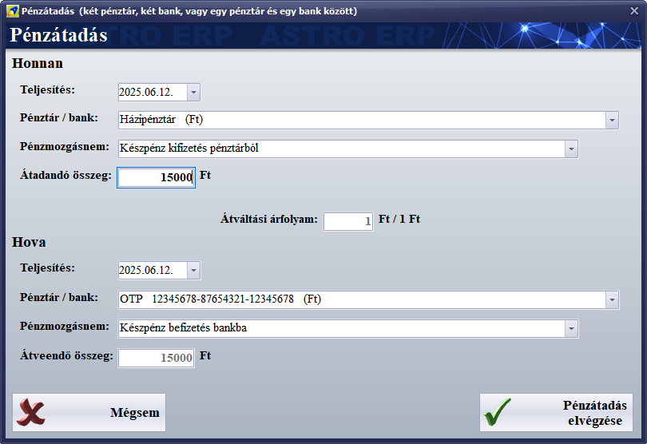
Bank / pénztár bizonylat
szerkesztő
A tranzakciók szerkesztése a bankok és pénztárak esetén is nagyon hasonlóan működik, ugyanolyan adatokat kezel.
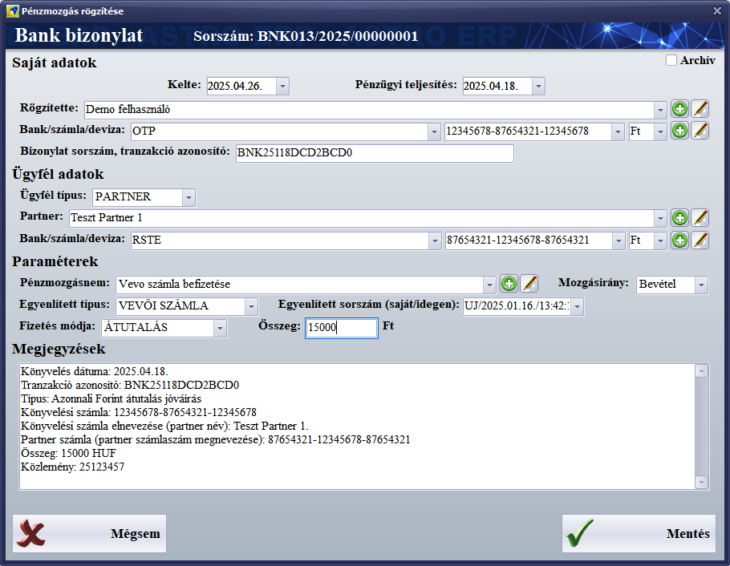
A pénztár bizonylat szerkesztője annyiban különbözik a bank bizonylattól, hogy itt a saját bankszámlaszám helyett a pénztárat lehet megadni, a partner bankszámlaszáma hiányzik, mert pénztár esetében erre nincs szükség és van egy pénztárbizonylat nyomtatása és egy pénztárbizonylat előnézeti kép funkció is.
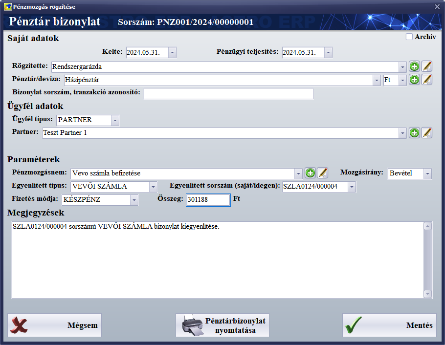
A szerkesztőben megadható
adatok:
Saját adatok
· Kelte: A bankbizonylat felvitelének dátuma.
· Pénzügyi teljesítés: Az a dátum, amikor a pénzügyi teljesítés ténylegesen megtörtént (banki könyvelés dátuma).
· Rögzítette: A felhasználó neve, aki a bizonylatot rögzíti (automatikusan kitöltött).
· Bank/számla/deviza (csak bank esetén látható): A saját bank neve és bankszámlaszáma, ahová az összeg érkezett vagy ahonnan elutalták.
· Pénztár/deviza (csak pénztár esetén látható): A pénzmozgásban érintett pénztár megnevezése.
· Bizonylat sorszám, tranzakció azonosító: A bank által megadott egyedi tranzakcióazonosító (pl. BNK25118DCD2BCD0).
Ügyfél adatok
· Ügyfél típus: A partner típusa: PARTNER, vagy MUNKATÁRS.
· Partner (csak partner ügyféltípus esetén látható): A pénzmozgásban érintett partner kiválasztása a törzsből.
· Munkatárs (csak munkatárs ügyféltípus esetén látható): A pénzmozgásban érintett munkatárs, akinek kifizetés, vagy akitől befizetés történik.
· Bank/számla/deviza (csak bank esetén látható): A partner bankszámlaadatai (opcionális).
Paraméterek
· Pénzmozgásnem: A pénzmozgás célja, pl. „Vevő számla befizetése”.
· Mozgásirány: A pénzmozgás iránya (Bevétel vagy Kiadás).
· Egyenlített típus: A pénzmozgás melyik számlát egyenlíti ki (pl. VEVŐ SZÁMLA).
· Egyenlített sorszám (saját/idegen): Az a számla vagy bizonylat, amelyet ez az utalás kiegyenlít.
· Fizetés módja: A teljesítés módja, pl. ÁTUTALÁS, KÉSZPÉNZ, stb.
· Összeg: A pénzmozgás összege forintban, vagy a kiválasztott bankszámla pénznemében.
· Árfolyam: Ha a devizanem eltér az alapértelmezett pénznemtől (ami a forint), akkor adható meg itt az átváltási árfolyam.
· Forintban: Ha a devizanem eltér az alapértelmezett pénznemtől (ami a forint), akkor itt jelenik meg a forintba átszámolt összeg.
Megjegyzések
A képernyő alsó részén szöveges megjegyzés jelenik meg, amelybe megjegyzéseket írhatunk az átutalással kapcsolatban, automatikus bankszámlakivonat beolvasása után itt jelennek meg az utalás banki adatai.
Az alul található
kezelőgombok:
· Mégsem: Mentés nélkül bezárjuk a szerkesztőt.
· Pénztárbizonylat nyomtatása: Csak pénztárbizonylat esetén jelenik meg. A korábban már mentett pénztárbizonylat újranyomtatására szolgál.
· Pénztárbizonylat előnézeti kép: Csak pénztárbizonylat esetén jelenik meg. A még nem mentett pénztárbitonylat előnézeti képét nézhetjük meg.
· Mentés: Menti és ezzel lezárja a banki, vagy pénztári bizonylatot. Mentés után később még lehet szerkeszteni a pénztárbizonylatot, ha ez az utólagos módosítás engedélyezve van a program beállításokban.
6. Adóhatósági ellenőrzési adatszolgáltatás
Az adóhatósági adatszolgáltatás a
Beállítások, adatkezelés
főmenü-csoport alatt az Adóhatósági ell.
adatszolg. ikonnal indul.
Jelenleg ez már nem kötelező eleme a számlázó, ügyviteli és ERP szofvereknek (helyette
van a kötelező online számla adatszolgáltatás), de meghagytuk, mert egyes
könyvelőprogramok ezzel a funkcióval készült exportot képesek beimportálni.
Könyvelő program exportra van külön modul is, a beállítások, adatkezelés
főmenüpontban, a könyvelés adatfeladás modulban, amely töbféle
köynelőprogram import formátumát is ismeri.
7. Online számla adatszolgáltatás, kommunikáció a
NAV szerverével
2021-től az adóhatóság
megköveteli, hogy minden számla automatikusan jelentve legyen adatfeladásként
az adóhatóság rendeszerébe.
Az Astro ERP ezt a követelményt is megfelelően teljesíti. Minden számla
lezárása után automatikusan jelenti a számlát, de amennyiben ez nem sikerült (például
az adóhatóság rendszerének túlterheltsége, vagy működésének szünetelése,
karbantartása miatt), a feladást ez a funkció a szoftverből kilépéskor is
megpróbálja teljesíteni, automatikusan. A számla jelentések manuálisan is elindíthatók,
a vevői számlák modulban, a számlák listája felett látható NAV jelent
gombbal.
Van szerver oldali számla jelentő alkalmazásunk (NAVreport) is, ez akkor hasznos, ha sok felhasználós a rendszere, akár több telephellyel és saját szervert üzemeltet. Ekkor a jelentéseket a szerver végzi el, nem a kliensek/munkaálomások.
A számla jelentések működéséhez a
program beállításokban, a cég adatoknál, az online számla adatszolgátlatás
fülön meg kell adnunk a technikai felhasználói paramétereket és hitelesítő
adatokat, végül a kapcsolat tesztelése gombbal mindenképpen letesztelni (egyben
ez aktiválja is a funkciót) és végül a mentés gombbal menteni az új
beállításokat.
Ezeket a technikai felhasználói adatokat a NAV rendszere hozza létre számunkra,
ha regisztráltunk egy technikai felhasználót, utána már csak be kell másolni a
beállításokban, a megfelelő mezőbe.
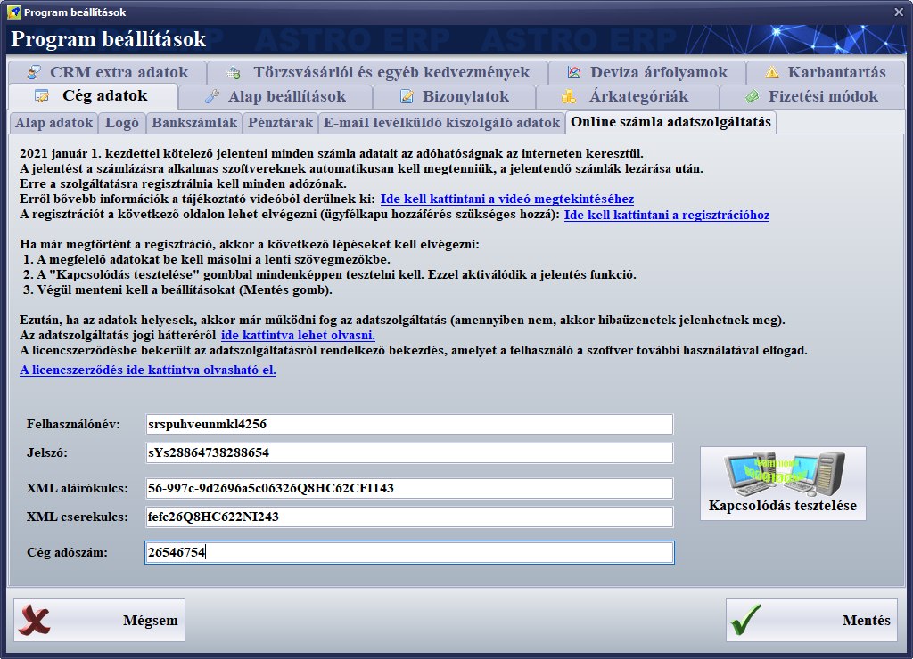
Számlákat
az online számla adatszolgátlatási adatok megléte nélkül is ki lehet állítani,
de mivel a jelentésük kötelező, ezért a szoftver használatbavételekor már
ajánlott megadni ezeket a technikai felhasználói paramétereket.
Ha
nem sikerül a szoftvernek jelentenie a számlákat 24 órán túl (probléma van az
adóhatóság szerverével végzett komunikációval), abban az esetben 2 napon belül
manuálisan kell a számlát rögzíteni az adóhatóság számla jelentési felületén.
Szerencsére ez ritkán történik meg.
A még nem jelentett számlák színe a számla listában lila,
a szoftver is jelzi, ha egy számlát nem sikerült még jelenteni. Az egyes
számlák jelentési naplója megtekinthető a részletező sávon, a NAV jelentés
üzenetek fülön.
Az Astro ERP nem csak jelenteni tudja az általunk készített számlákat, hanem a beszállítóink által részünkre kiállított számlákat is le tudja tölteni az adóhatóság rendszeréből és lehetőség szerint igyekszik a számla tételeken szereplő szolgáltatásokat, vagy árucikkeket összekapcsolni a saját terméktörzsünkben található árukkal, vagy szolgáltatásokkal. Ezért érdemes a termékek jellemző kódjait, cikkszámait összehangolni a beszállítókkal és megkérni a beszállítókat, hogy a saját rendszerük jelentse ezeket a kódokat is.
Ezeken kívül egyéb
adatforgalmazás is történik az adóhatóság szerverével, például az Astro ERP
így ellenőrzi az adószám helyességét. Ha egy céghez rossz adószámot írtunk
be, vagy lefelejtettük, akkor jelzi. Amikor új partnert rögzítenénk a
rendszerbe, akkor elég annak csak az adószámát beírni és a szoftver lekérdezi a
cég többi adatát, nevét székhelyének címét, stb.
Ez fordítva is működik, a szoftver képes a partner cég neve alapján
megtalálni annak adószámát, és ezután a többi adatát is, feltéve, ha a nevet
megfelelően írtuk be.
Természetesen
ezek a funkciók megkövetelik az állandó internetkapcsolatot, hiszen a számla
jelentések és letöltések az interneten keresztül történnek.